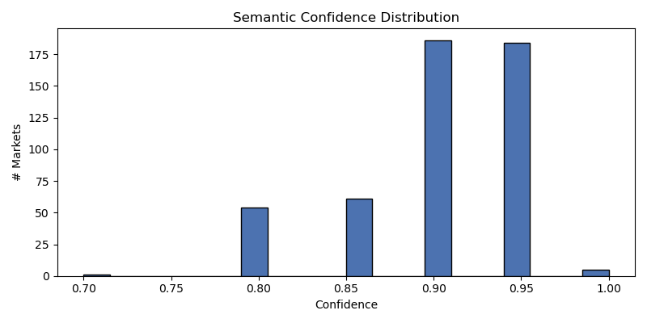
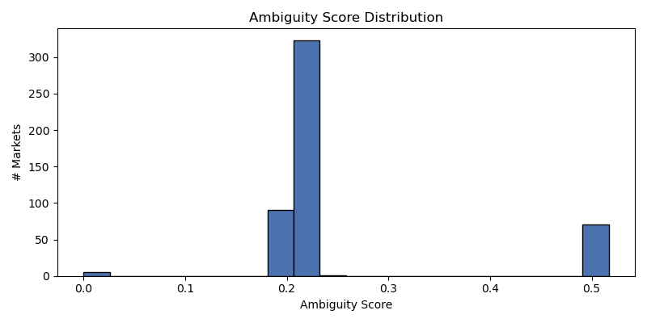
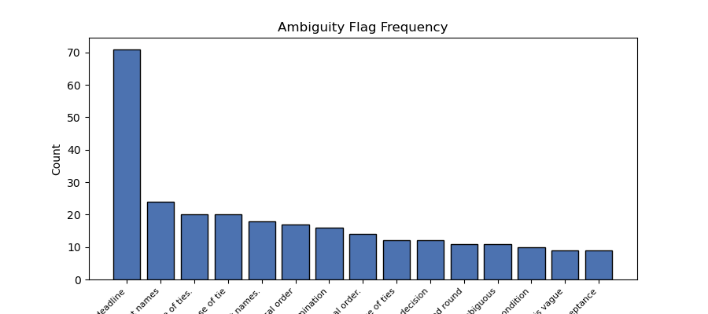

Generated: 2026-05-11T18:55:49Z



| market_id | question | confidence | ambiguity | market_type | flags | needs_review | model | prompt_version |
|---|---|---|---|---|---|---|---|---|
| 578527 | Will Aston Villa win the 2025-26 UEFA Europa League? | 0.9000 | 0.5062 | binary | ['Mathematical elimination condition', 'Cancellation condit… | True | deepseek-r1:8b | market_semantics_v1 |
| 578530 | Will Freiburg win the 2025-26 UEFA Europa League? | 0.9000 | 0.5167 | binary | ["The market resolves to 'No' if the team is mathematically… | True | deepseek-r1:8b | market_semantics_v1 |
| 562190 | Will Wesley Hunt win the 2026 Texas Republican Primary? | 0.9500 | 0.5125 | binary | ["The market resolves to 'Other' if the primary does not oc… | True | deepseek-r1:8b | market_semantics_v1 |
| 562187 | Will John Cornyn win the 2026 Texas Republican Primary? | 0.9000 | 0.5167 | binary | ["The market resolves to 'Other' if no primary takes place.… | True | deepseek-r1:8b | market_semantics_v1 |
| 562186 | Will Ken Paxton win the 2026 Texas Republican Primary? | 0.9000 | 0.5167 | binary | ["The market resolves to 'Other' if no primary takes place.… | True | deepseek-r1:8b | market_semantics_v1 |
| 562189 | Will Beth Van Duyne win the 2026 Texas Republican Primary? | 0.9000 | 0.5062 | binary | ['Primary date is fixed to 2026', 'Winner determination may… | True | deepseek-r1:8b | market_semantics_v1 |
| 562188 | Will Dawn Buckingham win the 2026 Texas Republican Primary? | 0.8500 | 0.2208 | binary | ['Primary date is not fixed', 'Winner determination may dep… | True | deepseek-r1:8b | market_semantics_v1 |
| 577162 | Will Viktor Gyokeres be the top goal scorer in the 2025–26 English Premier Leag… | 0.9000 | 0.2167 | binary | ["The market resolves to 'No' if there is a tie, but the wi… | True | deepseek-r1:8b | market_semantics_v1 |
| 577161 | Will Mohamed Salah be the top goal scorer in the 2025–26 English Premier League… | 0.9000 | 0.2167 | binary | ['Tie-breaking rule based on last name alphabetical order.'… | True | deepseek-r1:8b | market_semantics_v1 |
| 572834 | Will Burnley finish in last place in the 2025-26 English Premier League? | 0.9000 | 0.2167 | binary | ['Season cancellation', 'Mathematical impossibility'] | True | deepseek-r1:8b | market_semantics_v1 |
| 572833 | Will Wolves finish in last place in the 2025-26 English Premier League? | 0.9500 | 0.5125 | binary | ['Mathematical impossibility triggers No', 'vague_deadline'] | True | deepseek-r1:8b | market_semantics_v1 |
| 582144 | Will Bournemouth finish in the top 4 of the EPL 2025–26 standings? | 0.9000 | 0.5062 | binary | ['Tiebreaker procedures may vary and are not explicitly def… | True | deepseek-r1:8b | market_semantics_v1 |
| 577178 | Will Jarrod Bowen be the top goal scorer in the 2025–26 English Premier League … | 0.9000 | 0.2250 | binary | ['Tie-breaking method based on last name alphabetical order… | True | deepseek-r1:8b | market_semantics_v1 |
| 572733 | Will Arsenal finish in 2nd place in the 2025-26 English Premier League? | 0.9000 | 0.2000 | binary | ["The market resolves to 'No' if the club is mathematically… | True | deepseek-r1:8b | market_semantics_v1 |
| 582139 | Will Aston Villa finish in the top 4 of the EPL 2025–26 standings? | 0.9000 | 0.5062 | binary | ['Tie-breaking procedures may introduce ambiguity', 'Season… | True | deepseek-r1:8b | market_semantics_v1 |
| 577188 | Will Cody Gakpo be the top goal scorer in the 2025–26 English Premier League se… | 0.9000 | 0.2167 | binary | ['Tie-breaking rule based on last name alphabetical order',… | True | deepseek-r1:8b | market_semantics_v1 |
| 577184 | Will Thierno Barry be the top goal scorer in the 2025–26 English Premier League… | 0.9500 | 0.5031 | binary | ['Tie-breaking based on alphabetical order of last names', … | True | deepseek-r1:8b | market_semantics_v1 |
| 577177 | Will Bryan Mbeumo be the top goal scorer in the 2025–26 English Premier League … | 0.9000 | 0.2167 | binary | ['Tie-breaking condition based on alphabetical order of las… | True | deepseek-r1:8b | market_semantics_v1 |
| 577170 | Will Dominic Solanke be the top goal scorer in the 2025–26 English Premier Leag… | 0.9000 | 0.2167 | binary | ['Tie-breaking rule based on alphabetical order of last nam… | True | deepseek-r1:8b | market_semantics_v1 |
| 572765 | Will Liverpool finish in 3rd place in the 2025-26 English Premier League? | 0.9000 | 0.2167 | binary | ['Season cancellation', 'Mathematical impossibility'] | True | deepseek-r1:8b | market_semantics_v1 |
| 582146 | Will Brighton finish in the top 4 of the EPL 2025–26 standings? | 0.9500 | 0.5031 | binary | ['Tiebreaker procedures', 'Season cancellation before Octob… | True | deepseek-r1:8b | market_semantics_v1 |
| 577189 | Will Kai Havertz be the top goal scorer in the 2025–26 English Premier League s… | 0.9500 | 0.2219 | binary | ['Tie-breaking rule based on last name alphabetical order.'… | True | deepseek-r1:8b | market_semantics_v1 |
| 577173 | Will Yoane Wissa be the top goal scorer in the 2025–26 English Premier League s… | 0.9000 | 0.2167 | binary | ['Tie-breaking method based on alphabetical order of last n… | True | deepseek-r1:8b | market_semantics_v1 |
| 577182 | Will Chris Wood be the top goal scorer in the 2025–26 English Premier League se… | 0.9000 | 0.2167 | binary | ['Tie-breaking method based on last name alphabetical order… | True | deepseek-r1:8b | market_semantics_v1 |
| 577165 | Will Hugo Ekitike be the top goal scorer in the 2025–26 English Premier League … | 0.9500 | 0.4975 | binary | ['Tie-breaking rule based on alphabetical order of last nam… | True | deepseek-r1:8b | market_semantics_v1 |
| 577180 | Will Charalambos Kostoulas be the top goal scorer in the 2025–26 English Premie… | 0.8500 | 0.2281 | binary | ['Tie-breaking method based on alphabetical order of last n… | True | deepseek-r1:8b | market_semantics_v1 |
| 577167 | Will Benjamin Sesko be the top goal scorer in the 2025–26 English Premier Leagu… | 0.9000 | 0.2167 | binary | ['Tie-breaking by last name', "Definition of 'sole top goal… | True | deepseek-r1:8b | market_semantics_v1 |
| 572847 | Will Tottenham be relegated from the English Premier League after the 2025–26 s… | 0.9000 | 0.2167 | binary | ['Relegation is based on final league table', 'Cancellation… | True | deepseek-r1:8b | market_semantics_v1 |
| 577164 | Will Joao Pedro be the top goal scorer in the 2025–26 English Premier League se… | 0.9000 | 0.2167 | binary | ['Tie-breaking method based on last name alphabetical order… | True | deepseek-r1:8b | market_semantics_v1 |
| 572734 | Will Manchester City finish in 2nd place in the 2025-26 English Premier League? | 0.9000 | 0.2167 | binary | ['Mathematical elimination criteria', 'Definition of final … | True | deepseek-r1:8b | market_semantics_v1 |
| 577192 | Will Antoine Semenyo be the top goal scorer in the 2025–26 English Premier Leag… | 0.9500 | 0.2125 | binary | ['Tie-breaking rule based on last name alphabetical order.'… | True | deepseek-r1:8b | market_semantics_v1 |
| 577190 | Will Florian Wirtz be the top goal scorer in the 2025–26 English Premier League… | 0.9000 | 0.2167 | binary | ['Season cancellation condition is specific but not tied to… | True | deepseek-r1:8b | market_semantics_v1 |
| 577175 | Will Liam Delap be the top goal scorer in the 2025–26 English Premier League se… | 0.9500 | 0.5125 | binary | ['The market resolves to the player with the last name firs… | True | deepseek-r1:8b | market_semantics_v1 |
| 577186 | Will Nicolas Jackson be the top goal scorer in the 2025–26 English Premier Leag… | 0.9000 | 0.2250 | binary | ['Tie-breaking rule based on last name alphabetical order.'… | True | deepseek-r1:8b | market_semantics_v1 |
| 572854 | Will West Ham be relegated from the English Premier League after the 2025–26 se… | 0.9000 | 0.2167 | binary | ['Relegation criteria may vary', 'Season cancellation condi… | True | deepseek-r1:8b | market_semantics_v1 |
| 572772 | Will Aston Villa finish in 3rd place in the 2025-26 English Premier League? | 0.9000 | 0.2167 | binary | ['Season cancellation', 'Mathematical impossibility'] | True | deepseek-r1:8b | market_semantics_v1 |
| 577171 | Will Omar Marmoush be the top goal scorer in the 2025–26 English Premier League… | 0.9000 | 0.2167 | binary | ['Tie-breaking rule based on alphabetical order of last nam… | True | deepseek-r1:8b | market_semantics_v1 |
| 577169 | Will Richarlison be the top goal scorer in the 2025–26 English Premier League s… | 0.9000 | 0.2167 | binary | ['Tie-breaking rule based on last name alphabetical order.'… | True | deepseek-r1:8b | market_semantics_v1 |
| 566188 | Will Manchester City win the 2025–26 English Premier League? | 0.9000 | 0.5062 | binary | ['Mathematical elimination condition may be ambiguous', 'Se… | True | deepseek-r1:8b | market_semantics_v1 |
| 582138 | Will Manchester United finish in the top 4 of the EPL 2025–26 standings? | 0.9500 | 0.5031 | binary | ['Tiebreaker procedures may introduce uncertainty', 'Season… | True | deepseek-r1:8b | market_semantics_v1 |
| 582134 | Will Liverpool finish in the top 4 of the EPL 2025–26 standings? | 0.9500 | 0.5125 | binary | ['Tie-breaking procedures', 'vague_deadline'] | True | deepseek-r1:8b | market_semantics_v1 |
| 577185 | Will Mohammed Kudus be the top goal scorer in the 2025–26 English Premier Leagu… | 0.9000 | 0.2167 | binary | ['Tie-breaking method based on last name alphabetical order… | True | deepseek-r1:8b | market_semantics_v1 |
| 577296 | Will Yussuf Poulsen be the top goal scorer in the 2025–26 Bundesliga season? | 0.9000 | 0.2167 | binary | ['Tie-breaking mechanism based on alphabetical order of las… | True | deepseek-r1:8b | market_semantics_v1 |
| 579399 | Will Francesco Camarda be the top goal scorer in the 2025-26 Serie A season? | 0.9000 | 0.2167 | binary | ['Tie-breaking rule based on alphabetical order of last nam… | True | deepseek-r1:8b | market_semantics_v1 |
| 579393 | Will Christian Pulisic be the top goal scorer in the 2025-26 Serie A season? | 0.9000 | 0.2167 | binary | ['Tie-breaking rule based on last name alphabetical order',… | True | deepseek-r1:8b | market_semantics_v1 |
| 579388 | Will Gianluca Scamacca be the top goal scorer in the 2025-26 Serie A season? | 0.9000 | 0.2167 | binary | ['Tie-breaking rule based on last name alphabetical order',… | True | deepseek-r1:8b | market_semantics_v1 |
| 578398 | Will Cremonese be relegated from Serie A after the 2025-26 season? | 0.9000 | 0.2000 | binary | ['The market resolution depends on the completion of the se… | True | deepseek-r1:8b | market_semantics_v1 |
| 577284 | Will Nick Woltemade be the top goal scorer in the 2025–26 Bundesliga season? | 0.9500 | 0.2125 | binary | ['Tie-breaking rule based on alphabetical order of last nam… | True | deepseek-r1:8b | market_semantics_v1 |
| 576806 | Will St. Pauli be relegated from the Bundesliga after the 2025–26 season? | 0.8000 | 0.2250 | binary | ['Relegation depends on other factors', "Definition of 'off… | True | deepseek-r1:8b | market_semantics_v1 |
| 579390 | Will Riccardo Orsolini be the top goal scorer in the 2025-26 Serie A season? | 0.9000 | 0.2167 | binary | ['Tie-breaking rule based on alphabetical order of last nam… | True | deepseek-r1:8b | market_semantics_v1 |
| 579380 | Will Marcus Thuram be the top goal scorer in the 2025-26 Serie A season? | 0.9500 | 0.2125 | binary | ['Tie-breaking rule based on alphabetical order of last nam… | True | deepseek-r1:8b | market_semantics_v1 |
| 579401 | Will Andrea Pinamonti be the top goal scorer in the 2025-26 Serie A season? | 0.9000 | 0.2167 | binary | ['Tie-breaking rule based on alphabetical order of last nam… | True | deepseek-r1:8b | market_semantics_v1 |
| 579379 | Will Jonathan David be the top goal scorer in the 2025-26 Serie A season? | 0.9000 | 0.2167 | binary | ['Tie-breaking rule based on last name alphabetical order.'… | True | deepseek-r1:8b | market_semantics_v1 |
| 577281 | Will Lois Openda be the top goal scorer in the 2025–26 Bundesliga season? | 0.9000 | 0.5062 | binary | ['Tie-breaking mechanism', 'Season cancellation', 'vague_de… | True | deepseek-r1:8b | market_semantics_v1 |
| 579396 | Will Mehdi Taremi be the top goal scorer in the 2025-26 Serie A season? | 0.9000 | 0.2167 | binary | ['Tie-breaking based on last name alphabetical order', "Def… | True | deepseek-r1:8b | market_semantics_v1 |
| 577292 | Will Robert Glatzel be the top goal scorer in the 2025–26 Bundesliga season? | 0.9500 | 0.2125 | binary | ['Season cancellation or incomplete season resolution', 'Ti… | True | deepseek-r1:8b | market_semantics_v1 |
| 579394 | Will Kevin De Bruyne be the top goal scorer in the 2025-26 Serie A season? | 0.9000 | 0.2167 | binary | ['Tie-breaking rule based on last name alphabetical order.'… | True | deepseek-r1:8b | market_semantics_v1 |
| 577276 | Will Harry Kane be the top goal scorer in the 2025–26 Bundesliga season? | 0.9500 | 0.2219 | binary | ['The market resolves to the alphabetically first player in… | True | deepseek-r1:8b | market_semantics_v1 |
| 579392 | Will Kenan Yildiz be the top goal scorer in the 2025-26 Serie A season? | 0.9000 | 0.2167 | binary | ["The market resolves to 'No' if there is a tie, but the ti… | True | deepseek-r1:8b | market_semantics_v1 |
| 577290 | Will Ermedin Demirovic be the top goal scorer in the 2025–26 Bundesliga season? | 0.9500 | 0.2125 | binary | ["The definition of 'top goal scorer' includes sole possess… | True | deepseek-r1:8b | market_semantics_v1 |
| 577289 | Will Karim Adeyemi be the top goal scorer in the 2025–26 Bundesliga season? | 0.9000 | 0.5062 | binary | ["The market does not specify what constitutes a 'credible … | True | deepseek-r1:8b | market_semantics_v1 |
| 577280 | Will Jonathan Burkardt be the top goal scorer in the 2025–26 Bundesliga season? | 0.9000 | 0.2250 | binary | ['Tie-breaking based on last name alphabetical order.', "De… | True | deepseek-r1:8b | market_semantics_v1 |
| 579402 | Will Santiago Castro be the top goal scorer in the 2025-26 Serie A season? | 0.9000 | 0.2167 | binary | ['Tie-breaking rule based on alphabetical order of last nam… | True | deepseek-r1:8b | market_semantics_v1 |
| 579391 | Will Romelu Lukaku be the top goal scorer in the 2025-26 Serie A season? | 0.9000 | 0.2167 | binary | ['Tie-breaking rule based on last name alphabetical order.'… | True | deepseek-r1:8b | market_semantics_v1 |
| 579387 | Will Lorenzo Lucca be the top goal scorer in the 2025-26 Serie A season? | 0.9500 | 0.1938 | binary | ["The market does not specify what constitutes a 'sole' top… | True | deepseek-r1:8b | market_semantics_v1 |
| 579377 | Will Lautaro Martinez be the top goal scorer in the 2025-26 Serie A season? | 0.9000 | 0.2250 | binary | ['Tie-breaking condition based on alphabetical order of las… | True | deepseek-r1:8b | market_semantics_v1 |
| 579366 | Will Como finish in the top 4 in the 2025-26 Serie A season? | 0.9500 | 0.2125 | binary | ['Tie-breaking procedures', 'Season cancellation before Oct… | True | deepseek-r1:8b | market_semantics_v1 |
| 576805 | Will FC Heidenheim be relegated from the Bundesliga after the 2025–26 season? | 0.9500 | 0.1938 | binary | ['The market resolution depends on the completion of the se… | True | deepseek-r1:8b | market_semantics_v1 |
| 582184 | Will Hoffenheim finish in the top 4 of the Bundesliga 2025–26 standings? | 0.9500 | 0.5031 | binary | ['Tie-breaking procedures', "Definition of 'end of the seas… | True | deepseek-r1:8b | market_semantics_v1 |
| 579381 | Will Ademola Lookman be the top goal scorer in the 2025-26 Serie A season? | 0.9000 | 0.2167 | binary | ['Tie-breaking condition based on last name alphabetical or… | True | deepseek-r1:8b | market_semantics_v1 |
| 577288 | Will Michy Batshuayi be the top goal scorer in the 2025–26 Bundesliga season? | 0.9000 | 0.2167 | binary | ['Tie-breaking rule based on last name alphabetical order',… | True | deepseek-r1:8b | market_semantics_v1 |
| 579389 | Will Valentin Castellanos be the top goal scorer in the 2025-26 Serie A season? | 0.9000 | 0.2250 | binary | ['Tie-breaking rule based on alphabetical order of last nam… | True | deepseek-r1:8b | market_semantics_v1 |
| 579360 | Will Juventus finish in the top 4 in the 2025-26 Serie A season? | 0.9500 | 0.2125 | binary | ['Tiebreaker procedures', 'Season cancellation date'] | True | deepseek-r1:8b | market_semantics_v1 |
| 577293 | Will Andrej Kramaric be the top goal scorer in the 2025–26 Bundesliga season? | 0.9000 | 0.2167 | binary | ['Tie-breaking rule based on alphabetical order of last nam… | True | deepseek-r1:8b | market_semantics_v1 |
| 582174 | Will Leverkusen finish in the top 4 of the Bundesliga 2025–26 standings? | 0.9500 | 0.5031 | binary | ['Tiebreaker procedures', 'Season cancellation', 'vague_dea… | True | deepseek-r1:8b | market_semantics_v1 |
| 579384 | Will Artem Dovbyk be the top goal scorer in the 2025-26 Serie A season? | 0.9000 | 0.2167 | binary | ['Tie-breaking rule based on last name alphabetical order',… | True | deepseek-r1:8b | market_semantics_v1 |
| 578403 | Will Cagliari be relegated from Serie A after the 2025-26 season? | 0.9000 | 0.2000 | binary | ['The market resolution depends on the completion of the se… | True | deepseek-r1:8b | market_semantics_v1 |
| 577285 | Will Jamal Musiala be the top goal scorer in the 2025–26 Bundesliga season? | 0.9000 | 0.2250 | binary | ['Tie-breaking rule based on alphabetical order of last nam… | True | deepseek-r1:8b | market_semantics_v1 |
| 579400 | Will Rafael Leao be the top goal scorer in the 2025-26 Serie A season? | 0.9500 | 0.2125 | binary | ['Tie-breaking rule based on alphabetical order of last nam… | True | deepseek-r1:8b | market_semantics_v1 |
| 579397 | Will Edin Dzeko be the top goal scorer in the 2025-26 Serie A season? | 0.9000 | 0.2167 | binary | ['Tie-breaking rule based on alphabetical order of last nam… | True | deepseek-r1:8b | market_semantics_v1 |
| 579383 | Will Santiago Gimenez be the top goal scorer in the 2025-26 Serie A season? | 0.9000 | 0.2167 | binary | ['Tie-breaking rule based on alphabetical order of last nam… | True | deepseek-r1:8b | market_semantics_v1 |
| 579382 | Will Dusan Vlahovic be the top goal scorer in the 2025-26 Serie A season? | 0.9000 | 0.2167 | binary | ['Tie-breaking mechanism based on alphabetical order of las… | True | deepseek-r1:8b | market_semantics_v1 |
| 579357 | Will Napoli finish in the top 4 in the 2025-26 Serie A season? | 0.9500 | 0.5031 | binary | ['Season cancellation before October 1, 2026', 'Tiebreaker … | True | deepseek-r1:8b | market_semantics_v1 |
| 582177 | Will Stuttgart finish in the top 4 of the Bundesliga 2025–26 standings? | 0.9000 | 0.5062 | binary | ['Tiebreaker procedures', 'Season cancellation before Octob… | True | deepseek-r1:8b | market_semantics_v1 |
| 579385 | Will Ciro Immobile be the top goal scorer in the 2025-26 Serie A season? | 0.9000 | 0.2167 | binary | ['Tie-breaking rule based on alphabetical order', 'Season c… | True | deepseek-r1:8b | market_semantics_v1 |
| 579361 | Will Roma finish in the top 4 in the 2025-26 Serie A season? | 0.9000 | 0.2167 | binary | ['Tiebreaker procedures may vary', "Definition of 'official… | True | deepseek-r1:8b | market_semantics_v1 |
| 577294 | Will Jonas Wind be the top goal scorer in the 2025–26 Bundesliga season? | 0.9500 | 0.2125 | binary | ['Tie-breaking based on last name alphabetical order', "Def… | True | deepseek-r1:8b | market_semantics_v1 |
| 579386 | Will Evan Ferguson be the top goal scorer in the 2025-26 Serie A season? | 0.9000 | 0.2167 | binary | ['Tie-breaking rule based on last name alphabetical order.'… | True | deepseek-r1:8b | market_semantics_v1 |
| 577283 | Will Victor Boniface be the top goal scorer in the 2025–26 Bundesliga season? | 0.9500 | 0.2219 | binary | ['Tie-breaking rule based on alphabetical order of last nam… | True | deepseek-r1:8b | market_semantics_v1 |
| 577282 | Will Luis Diaz be the top goal scorer in the 2025–26 Bundesliga season? | 0.9500 | 0.2125 | binary | ['Tie-breaking based on last name alphabetical order.', "De… | True | deepseek-r1:8b | market_semantics_v1 |
| 577278 | Will Patrik Schick be the top goal scorer in the 2025–26 Bundesliga season? | 0.9000 | 0.2167 | binary | ['Tie-breaking rule based on alphabetical order of last nam… | True | deepseek-r1:8b | market_semantics_v1 |
| 578423 | Will Breel Embolo be the top goal scorer in the 2025-26 Ligue 1 season? | 0.9000 | 0.2167 | binary | ['Tie-breaking rule based on alphabetical order of last nam… | True | deepseek-r1:8b | market_semantics_v1 |
| 578422 | Will Ludovic Ajorque be the top goal scorer in the 2025-26 Ligue 1 season? | 0.9000 | 0.2167 | binary | ["The market does not specify what constitutes a 'sole' top… | True | deepseek-r1:8b | market_semantics_v1 |
| 578421 | Will Terem Moffi be the top goal scorer in the 2025-26 Ligue 1 season? | 0.9000 | 0.2167 | binary | ['Tie-breaking rule based on alphabetical order of last nam… | True | deepseek-r1:8b | market_semantics_v1 |
| 577238 | Will Dani Olmo be the top goal scorer in the 2025–26 La Liga season? | 0.9500 | 0.2125 | binary | ['Tie-breaking rule based on last name alphabetical order',… | True | deepseek-r1:8b | market_semantics_v1 |
| 577236 | Will Gorka Guruzeta be the top goal scorer in the 2025–26 La Liga season? | 0.9000 | 0.2167 | binary | ['Season cancellation or incomplete conditions', 'Tie-break… | True | deepseek-r1:8b | market_semantics_v1 |
| 577228 | Will Marcus Rashford be the top goal scorer in the 2025–26 La Liga season? | 0.9500 | 0.2125 | binary | ['Tie-breaking rule based on last name alphabetical order',… | True | deepseek-r1:8b | market_semantics_v1 |
| 578443 | Will Martin Satriano be the top goal scorer in the 2025-26 Ligue 1 season? | 0.9000 | 0.2167 | binary | ['Tie-breaking rule based on alphabetical order of last nam… | True | deepseek-r1:8b | market_semantics_v1 |
| 578437 | Will Sambou Soumano be the top goal scorer in the 2025-26 Ligue 1 season? | 0.9500 | 0.2125 | binary | ['Tie-breaking rule based on alphabetical order of last nam… | True | deepseek-r1:8b | market_semantics_v1 |
| 577248 | Will Roberto Fernandez be the top goal scorer in the 2025–26 La Liga season? | 0.9500 | 0.2125 | binary | ['Tie-breaking mechanism', 'Season completion status'] | True | deepseek-r1:8b | market_semantics_v1 |
| 577240 | Will Iago Aspas be the top goal scorer in the 2025–26 La Liga season? | 0.9000 | 0.2167 | binary | ['Tie-breaking mechanism based on alphabetical order', 'Sea… | True | deepseek-r1:8b | market_semantics_v1 |
| 576811 | Will Osasuna be relegated from La Liga after the 2025–26 season? | 0.9000 | 0.2167 | binary | ['Relegation depends on final standings', "Definition of 'o… | True | deepseek-r1:8b | market_semantics_v1 |
| 566737 | Will Lens win the 2025–26 French Ligue 1? | 0.8500 | 0.5094 | binary | ['Mathematical elimination criteria', "Definition of 'offic… | True | deepseek-r1:8b | market_semantics_v1 |
| 566731 | Will PSG win the 2025–26 French Ligue 1? | 0.9000 | 0.2167 | binary | ['Mathematical elimination condition', 'Season cancellation… | True | deepseek-r1:8b | market_semantics_v1 |
| 578419 | Will Olivier Giroud be the top goal scorer in the 2025-26 Ligue 1 season? | 0.9500 | 0.2125 | binary | ['Tie-breaking rule based on alphabetical order of last nam… | True | deepseek-r1:8b | market_semantics_v1 |
| 577220 | Will Alexander Sorloth be the top goal scorer in the 2025–26 La Liga season? | 0.9500 | 0.2125 | binary | ['Tie-breaking rule based on last name alphabetical order',… | True | deepseek-r1:8b | market_semantics_v1 |
| 582155 | Will Atletico Madrid finish in the top 4 of the La Liga 2025–26 standings? | 0.9500 | 0.5031 | binary | ['Tiebreaker procedures may introduce complexity', 'Season … | True | deepseek-r1:8b | market_semantics_v1 |
| 578430 | Will Mostafa Mohamed be the top goal scorer in the 2025-26 Ligue 1 season? | 0.9000 | 0.2167 | binary | ["The definition of 'sole top goal scorer' includes the tie… | True | deepseek-r1:8b | market_semantics_v1 |
| 578425 | Will Folarin Balogun be the top goal scorer in the 2025-26 Ligue 1 season? | 0.9000 | 0.2167 | binary | ['Tie-breaking rule based on alphabetical order of last nam… | True | deepseek-r1:8b | market_semantics_v1 |
| 577225 | Will Oihan Sancet be the top goal scorer in the 2025–26 La Liga season? | 0.9000 | 0.2167 | binary | ['Tie-breaking based on last name alphabetical order', "Def… | True | deepseek-r1:8b | market_semantics_v1 |
| 577224 | Will Gonzalo Garcia be the top goal scorer in the 2025–26 La Liga season? | 0.9000 | 0.2167 | binary | ['Tie-breaking rule based on last name alphabetical order',… | True | deepseek-r1:8b | market_semantics_v1 |
| 576810 | Will Getafe be relegated from La Liga after the 2025–26 season? | 0.9000 | 0.2167 | binary | ["The definition of 'officially relegated' may vary", 'The … | True | deepseek-r1:8b | market_semantics_v1 |
| 577218 | Will Kylian Mbappe be the top goal scorer in the 2025–26 La Liga season? | 0.9000 | 0.2167 | binary | ['Tie-breaking mechanism', 'Season cancellation condition'] | True | deepseek-r1:8b | market_semantics_v1 |
| 577234 | Will Vedat Muriqi be the top goal scorer in the 2025–26 La Liga season? | 0.9000 | 0.2250 | binary | ['Season cancellation or incomplete season', 'Tie in goal s… | True | deepseek-r1:8b | market_semantics_v1 |
| 578432 | Will Esteban Lepaul be the top goal scorer in the 2025-26 Ligue 1 season? | 0.9000 | 0.2167 | binary | ['Tie-breaking rule based on alphabetical order of last nam… | True | deepseek-r1:8b | market_semantics_v1 |
| 578408 | Will Ousmane Dembele be the top goal scorer in the 2025-26 Ligue 1 season? | 0.9500 | 0.2125 | binary | ['Season cancellation or incomplete season', 'Tie in goal s… | True | deepseek-r1:8b | market_semantics_v1 |
| 577243 | Will Abel Ruiz be the top goal scorer in the 2025–26 La Liga season? | 0.9500 | 0.2125 | binary | ['Tie-breaking based on last name alphabetical order', "Def… | True | deepseek-r1:8b | market_semantics_v1 |
| 577222 | Will Ante Budimir be the top goal scorer in the 2025–26 La Liga season? | 0.9000 | 0.2250 | binary | ['Season cancellation or incomplete season', 'Tie in goal s… | True | deepseek-r1:8b | market_semantics_v1 |
| 576814 | Will Valencia be relegated from La Liga after the 2025–26 season? | 0.9500 | 0.1938 | binary | ['The market resolution depends on the completion of the se… | True | deepseek-r1:8b | market_semantics_v1 |
| 576813 | Will Oviedo be relegated from La Liga after the 2025–26 season? | 0.8000 | 0.2250 | binary | ["The definition of 'officially relegated' may vary", 'The … | True | deepseek-r1:8b | market_semantics_v1 |
| 582158 | Will Betis finish in the top 4 of the La Liga 2025–26 standings? | 0.9500 | 0.5031 | binary | ['Tiebreak procedures', 'Season cancellation before October… | True | deepseek-r1:8b | market_semantics_v1 |
| 577247 | Will Jude Bellingham be the top goal scorer in the 2025–26 La Liga season? | 0.9000 | 0.2250 | binary | ['Season cancellation or incomplete season', 'Tie in goal s… | True | deepseek-r1:8b | market_semantics_v1 |
| 578426 | Will Matthis Abline be the top goal scorer in the 2025-26 Ligue 1 season? | 0.9000 | 0.2167 | binary | ['Tie-breaking rule based on alphabetical order of last nam… | True | deepseek-r1:8b | market_semantics_v1 |
| 577219 | Will Robert Lewandowski be the top goal scorer in the 2025–26 La Liga season? | 0.9000 | 0.2250 | binary | ['Tie-breaking rule based on alphabetical order of last nam… | True | deepseek-r1:8b | market_semantics_v1 |
| 582320 | Will Rennes finish in the top 4 of the Ligue 1 2025–26 standings? | 0.9000 | 0.2167 | binary | ['Tiebreaker procedures may vary', 'Season cancellation con… | True | deepseek-r1:8b | market_semantics_v1 |
| 578415 | Will Georges Mikautadze be the top goal scorer in the 2025-26 Ligue 1 season? | 0.9000 | 0.2167 | binary | ['Tie-breaking rule based on alphabetical order of last nam… | True | deepseek-r1:8b | market_semantics_v1 |
| 576816 | Will Mallorca be relegated from La Liga after the 2025–26 season? | 0.9000 | 0.2167 | binary | ['The market resolution depends on the completion of the se… | True | deepseek-r1:8b | market_semantics_v1 |
| 582318 | Will Lille finish in the top 4 of the Ligue 1 2025–26 standings? | 0.9000 | 0.2250 | binary | ['Tiebreaker procedures', "Definition of 'end of the season… | True | deepseek-r1:8b | market_semantics_v1 |
| 578440 | Will Gauthier Hein be the top goal scorer in the 2025-26 Ligue 1 season? | 0.9000 | 0.2167 | binary | ['Tie-breaking rule based on alphabetical order of last nam… | True | deepseek-r1:8b | market_semantics_v1 |
| 577241 | Will Cristhian Stuani be the top goal scorer in the 2025–26 La Liga season? | 0.9000 | 0.2250 | binary | ["The definition of 'La Liga season' includes the condition… | True | deepseek-r1:8b | market_semantics_v1 |
| 577235 | Will Dodi Lukebakio be the top goal scorer in the 2025–26 La Liga season? | 0.9000 | 0.2167 | binary | ["The definition of 'La Liga season' includes the condition… | True | deepseek-r1:8b | market_semantics_v1 |
| 578436 | Will Joaquin Panichelli be the top goal scorer in the 2025-26 Ligue 1 season? | 0.9000 | 0.2167 | binary | ['Tie-breaking rule based on last name alphabetical order',… | True | deepseek-r1:8b | market_semantics_v1 |
| 578416 | Will Arnaud Kalimuendo be the top goal scorer in the 2025-26 Ligue 1 season? | 0.9000 | 0.2167 | binary | ['Tie-breaking by last name', "Definition of 'sole top goal… | True | deepseek-r1:8b | market_semantics_v1 |
| 577245 | Will Alex Baena be the top goal scorer in the 2025–26 La Liga season? | 0.9000 | 0.2167 | binary | ['Season cancellation condition is vague', 'Tie-breaking co… | True | deepseek-r1:8b | market_semantics_v1 |
| 577242 | Will Cyle Larin be the top goal scorer in the 2025–26 La Liga season? | 0.9000 | 0.2167 | binary | ['Season cancellation or incomplete season', 'Tie in goal s… | True | deepseek-r1:8b | market_semantics_v1 |
| 577231 | Will Mikel Oyarzabal be the top goal scorer in the 2025–26 La Liga season? | 0.9000 | 0.2167 | binary | ['Tie-breaking rule based on last name alphabetical order',… | True | deepseek-r1:8b | market_semantics_v1 |
| 577230 | Will Vinicius Junior be the top goal scorer in the 2025–26 La Liga season? | 0.9000 | 0.2250 | binary | ['Season cancellation or incomplete season', 'Tie-breaking … | True | deepseek-r1:8b | market_semantics_v1 |
| 576815 | Will Sevilla be relegated from La Liga after the 2025–26 season? | 0.8000 | 0.2250 | binary | ['Relegation depends on final standings', "Definition of 'o… | True | deepseek-r1:8b | market_semantics_v1 |
| 576809 | Will Espanyol be relegated from La Liga after the 2025–26 season? | 0.9000 | 0.2167 | binary | ['Season cancellation', "Definition of 'officially relegate… | True | deepseek-r1:8b | market_semantics_v1 |
| 582317 | Will Lyon finish in the top 4 of the Ligue 1 2025–26 standings? | 0.9000 | 0.2167 | binary | ['Tiebreaker procedures', 'Season cancellation condition'] | True | deepseek-r1:8b | market_semantics_v1 |
| 578428 | Will Jean Philippe Krasso be the top goal scorer in the 2025-26 Ligue 1 season? | 0.9000 | 0.2167 | binary | ['Tie-breaking rule based on alphabetical order of last nam… | True | deepseek-r1:8b | market_semantics_v1 |
| 578418 | Will Amine Gouiri be the top goal scorer in the 2025-26 Ligue 1 season? | 0.9000 | 0.2167 | binary | ['Tie-breaking rule based on alphabetical order of last nam… | True | deepseek-r1:8b | market_semantics_v1 |
| 577237 | Will Javi Puado be the top goal scorer in the 2025–26 La Liga season? | 0.9000 | 0.2000 | binary | ["The market resolves to 'Other' if the season is canceled … | True | deepseek-r1:8b | market_semantics_v1 |
| 566140 | Will Arsenal win the 2025–26 Champions League? | 0.9000 | 0.5062 | binary | ["The market resolves to 'No' if the team is mathematically… | True | deepseek-r1:8b | market_semantics_v1 |
| 566136 | Will PSG win the 2025–26 Champions League? | 0.9000 | 0.5062 | binary | ["The market resolves to 'No' if the team is mathematically… | True | deepseek-r1:8b | market_semantics_v1 |
| 564166 | Will Victor Wembanyama win the 2025–2026 NBA MVP? | 0.9000 | 0.2167 | binary | ['Temporal resolution is vague', 'Definition of MVP award'] | True | deepseek-r1:8b | market_semantics_v1 |
| 564162 | Will Shai Gilgeous-Alexander win the 2025–2026 NBA MVP? | 0.9500 | 0.5125 | binary | ["The market resolves based on MVP award, but the question … | True | deepseek-r1:8b | market_semantics_v1 |
| 578157 | Will any 2026 FIFA World Cup game scheduled in the U.S. be relocated abroad? | 0.9000 | 0.2167 | binary | ["Definition of 'credible reporting'", 'Possibility of mult… | True | deepseek-r1:8b | market_semantics_v1 |
| 564161 | Will Nikola Jokic win the 2025–2026 NBA MVP? | 0.9500 | 0.5125 | binary | ['The market resolves based on the award being awarded, not… | True | deepseek-r1:8b | market_semantics_v1 |
| 569371 | Will Enrique Peñalosa win the 2026 Colombian presidential election? | 0.9000 | 0.2000 | binary | ['Potential for second round affecting the outcome'] | True | deepseek-r1:8b | market_semantics_v1 |
| 569359 | Will David Luna Sánchez win the 2026 Colombian presidential election? | 0.9500 | 0.5031 | binary | ['Potential for second round', 'Resolution based on officia… | True | deepseek-r1:8b | market_semantics_v1 |
| 572110 | Aaron Taylor-Johnson announced as next James Bond? | 0.9000 | 0.2250 | binary | ['Announcement must be official', "Definition of 'official'… | True | deepseek-r1:8b | market_semantics_v1 |
| 572125 | Josh O'Connor announced as next James Bond? | 0.9000 | 0.2167 | binary | ['Announcement source ambiguity', "Definition of 'official'… | True | deepseek-r1:8b | market_semantics_v1 |
| 572117 | Pierce Brosnan announced as next James Bond? | 0.9000 | 0.2167 | binary | ['Announcement source ambiguity', "Definition of 'official'… | True | deepseek-r1:8b | market_semantics_v1 |
| 572122 | Jack Lowdon announced as next James Bond? | 0.9000 | 0.2167 | binary | ['Announcement source ambiguity', "Definition of 'official'… | True | deepseek-r1:8b | market_semantics_v1 |
| 572123 | Theo James announced as next James Bond? | 0.9000 | 0.2167 | binary | ['Announcement source ambiguity', "Definition of 'official'… | True | deepseek-r1:8b | market_semantics_v1 |
| 572133 | No one announced as next James Bond? | 0.9000 | 0.2167 | binary | ['Announcement must be official', "Definition of 'official'… | True | deepseek-r1:8b | market_semantics_v1 |
| 572124 | James Collier announced as next James Bond? | 0.8500 | 0.2208 | binary | ['The market allows for the possibility of no Bond being ch… | True | deepseek-r1:8b | market_semantics_v1 |
| 572119 | Henry Cavill announced as next James Bond? | 0.9000 | 0.2167 | binary | ['Announcement source ambiguity', "Definition of 'official'… | True | deepseek-r1:8b | market_semantics_v1 |
| 572114 | Jacob Elordi announced as next James Bond? | 0.9000 | 0.2167 | binary | ['Announcement source ambiguity', "Definition of 'official'… | True | deepseek-r1:8b | market_semantics_v1 |
| 572121 | Callum Turner announced as next James Bond? | 0.9000 | 0.2167 | binary | ['Announcement must be official', 'Definition of official s… | True | deepseek-r1:8b | market_semantics_v1 |
| 572116 | Tom Hardy announced as next James Bond? | 0.9000 | 0.2167 | binary | ['Announcement source credibility', "Definition of 'officia… | True | deepseek-r1:8b | market_semantics_v1 |
| 597967 | Starmer out by June 30, 2026? | 0.9000 | 0.2167 | binary | ["Definition of 'ceases to be'", 'Resolution source ambigui… | True | deepseek-r1:8b | market_semantics_v1 |
| 597964 | Macron out by June 30, 2026? | 0.9500 | 0.2125 | binary | ['Temporal ambiguity due to specific dates', 'Potential for… | True | deepseek-r1:8b | market_semantics_v1 |
| 553859 | Will the Minnesota Timberwolves win the 2026 NBA Finals? | 0.9500 | 0.5031 | binary | ['Temporal resolution is vague', 'NBA may change rules affe… | True | deepseek-r1:8b | market_semantics_v1 |
| 553857 | Will the Cleveland Cavaliers win the 2026 NBA Finals? | 0.9500 | 0.5125 | binary | ['The market resolution depends on the outcome of the 2026 … | True | deepseek-r1:8b | market_semantics_v1 |
| 553871 | Will the Detroit Pistons win the 2026 NBA Finals? | 0.9500 | 0.5031 | binary | ['Temporal resolution is vague', 'NBA rules may affect impo… | True | deepseek-r1:8b | market_semantics_v1 |
| 553863 | Will the Los Angeles Lakers win the 2026 NBA Finals? | 0.9000 | 0.5062 | binary | ['Temporal resolution is vague', 'NBA may change rules affe… | True | deepseek-r1:8b | market_semantics_v1 |
| 553866 | Will the San Antonio Spurs win the 2026 NBA Finals? | 0.9500 | 0.5125 | binary | ['The market resolution depends on the outcome of the 2026 … | True | deepseek-r1:8b | market_semantics_v1 |
| 553858 | Will the New York Knicks win the 2026 NBA Finals? | 0.9500 | 0.5125 | binary | ['The market resolution depends on the outcome of the 2026 … | True | deepseek-r1:8b | market_semantics_v1 |
| 558975 | Will Austria win the 2026 FIFA World Cup? | 0.8500 | 0.2208 | binary | ["Temporal resolution depends on FIFA's decision", 'Elimina… | True | deepseek-r1:8b | market_semantics_v1 |
| 558969 | Will Algeria win the 2026 FIFA World Cup? | 0.9000 | 0.2167 | binary | ['Elimination before knockout stage', 'Market resolution ba… | True | deepseek-r1:8b | market_semantics_v1 |
| 558968 | Will Egypt win the 2026 FIFA World Cup? | 0.9000 | 0.2167 | binary | ["Temporal resolution depends on FIFA's schedule", "Definit… | True | deepseek-r1:8b | market_semantics_v1 |
| 558944 | Will Uruguay win the 2026 FIFA World Cup? | 0.8500 | 0.2208 | binary | ["Temporal resolution depends on FIFA's decision, which may… | True | deepseek-r1:8b | market_semantics_v1 |
| 558983 | Will Bosnia-Herzegovina win the 2026 FIFA World Cup? | 0.9000 | 0.2167 | binary | ["Temporal resolution depends on FIFA's decision", 'Resolut… | True | deepseek-r1:8b | market_semantics_v1 |
| 558967 | Will Ghana win the 2026 FIFA World Cup? | 0.8500 | 0.2208 | binary | ['Elimination criteria may be subjective', "Definition of '… | True | deepseek-r1:8b | market_semantics_v1 |
| 558961 | Will South Korea win the 2026 FIFA World Cup? | 0.8500 | 0.2062 | binary | ["The market resolves to 'No' if South Korea is eliminated,… | True | deepseek-r1:8b | market_semantics_v1 |
| 558957 | Will New Zealand win the 2026 FIFA World Cup? | 0.8000 | 0.2250 | binary | ["Temporal resolution depends on FIFA's schedule", "Definit… | True | deepseek-r1:8b | market_semantics_v1 |
| 558966 | Will Ivory Coast win the 2026 FIFA World Cup? | 0.8500 | 0.2208 | binary | ['Temporal ambiguity due to potential tournament delays', "… | True | deepseek-r1:8b | market_semantics_v1 |
| 558939 | Will Germany win the 2026 FIFA World Cup? | 0.9000 | 0.2167 | binary | ["Temporal resolution depends on FIFA's decision", 'Resolut… | True | deepseek-r1:8b | market_semantics_v1 |
| 558959 | Will Iran win the 2026 FIFA World Cup? | 0.9000 | 0.2167 | binary | ["The market resolves to 'No' if Iran is eliminated by FIFA… | True | deepseek-r1:8b | market_semantics_v1 |
| 558952 | Will Canada win the 2026 FIFA World Cup? | 0.8500 | 0.2208 | binary | ['Elimination criteria may be subjective', "Definition of '… | True | deepseek-r1:8b | market_semantics_v1 |
| 558946 | Will Belgium win the 2026 FIFA World Cup? | 0.8500 | 0.2208 | binary | ["Temporal resolution depends on FIFA's decision, which may… | True | deepseek-r1:8b | market_semantics_v1 |
| 558934 | Will Spain win the 2026 FIFA World Cup? | 0.8500 | 0.2208 | binary | ["Temporal resolution depends on FIFA's definition of perma… | True | deepseek-r1:8b | market_semantics_v1 |
| 558974 | Will Switzerland win the 2026 FIFA World Cup? | 0.8500 | 0.2208 | binary | ["Temporal resolution depends on FIFA's decision", "Definit… | True | deepseek-r1:8b | market_semantics_v1 |
| 558980 | Will Sweden win the 2026 FIFA World Cup? | 0.8500 | 0.2208 | binary | ['Temporal deadline specified but tournament outcome depend… | True | deepseek-r1:8b | market_semantics_v1 |
| 558962 | Will Jordan win the 2026 FIFA World Cup? | 0.8500 | 0.2208 | binary | ["Temporal resolution depends on FIFA's decision, which may… | True | deepseek-r1:8b | market_semantics_v1 |
| 558984 | Will Czechia win the 2026 FIFA World Cup? | 0.8500 | 0.2208 | binary | ["Temporal resolution depends on FIFA's decision", 'Elimina… | True | deepseek-r1:8b | market_semantics_v1 |
| 558981 | Will Congo DR win the 2026 FIFA World Cup? | 0.8500 | 0.2208 | binary | ['Temporal ambiguity due to potential cancellation or delay… | True | deepseek-r1:8b | market_semantics_v1 |
| 558951 | Will Norway win the 2026 FIFA World Cup? | 0.9000 | 0.2167 | binary | ['Temporal deadline specified but market outcome depends on… | True | deepseek-r1:8b | market_semantics_v1 |
| 558936 | Will France win the 2026 FIFA World Cup? | 0.8500 | 0.2208 | binary | ["Temporal resolution depends on FIFA's decision, which may… | True | deepseek-r1:8b | market_semantics_v1 |
| 558935 | Will England win the 2026 FIFA World Cup? | 0.9000 | 0.2167 | binary | ["Temporal resolution depends on FIFA's decision", 'Elimina… | True | deepseek-r1:8b | market_semantics_v1 |
| 558979 | Will Panama win the 2026 FIFA World Cup? | 0.9000 | 0.2167 | binary | ['Elimination before knockout stage', "Market resolves to '… | True | deepseek-r1:8b | market_semantics_v1 |
| 558977 | Will Haiti win the 2026 FIFA World Cup? | 0.9000 | 0.2000 | binary | ["Temporal resolution depends on FIFA's decision, which may… | True | deepseek-r1:8b | market_semantics_v1 |
| 558976 | Will Croatia win the 2026 FIFA World Cup? | 0.8500 | 0.2208 | binary | ["Temporal resolution depends on FIFA's decision", 'Elimina… | True | deepseek-r1:8b | market_semantics_v1 |
| 563650 | SCOTUS accepts sports event contract case by July 31, 2026? | 0.8500 | 0.2208 | binary | ["The definition of 'sports event contract' might be ambigu… | True | deepseek-r1:8b | market_semantics_v1 |
| 573647 | Will GPT-6 be released before GTA VI? | 0.8500 | 0.2208 | binary | ["Definition of 'publicly released' may vary", "Interpretat… | True | deepseek-r1:8b | market_semantics_v1 |
| 599309 | Will Kristen McDonald Rivet win the 2026 Michigan Democratic Primary? | 0.9500 | 0.5125 | binary | ["The market resolves to 'Other' if no primary takes place,… | True | deepseek-r1:8b | market_semantics_v1 |
| 599303 | Will Mallory McMorrow win the 2026 Michigan Democratic Primary? | 0.8500 | 0.5094 | binary | ["The definition of 'winner' may be ambiguous if there are … | True | deepseek-r1:8b | market_semantics_v1 |
| 599306 | Will Dana Nessel win the 2026 Michigan Democratic Primary? | 0.9500 | 0.5125 | binary | ["The market resolves to 'Other' if no primary takes place,… | True | deepseek-r1:8b | market_semantics_v1 |
| 599304 | Will Haley Stevens win the 2026 Michigan Democratic Primary? | 0.9000 | 0.5167 | binary | ["The definition of 'winner' may depend on vote counting ru… | True | deepseek-r1:8b | market_semantics_v1 |
| 599307 | Will Rashida Tlaib win the 2026 Michigan Democratic Primary? | 0.8500 | 0.5094 | binary | ["The definition of 'winner' may be ambiguous if there are … | True | deepseek-r1:8b | market_semantics_v1 |
| 599305 | Will Abdul El-Sayed win the 2026 Michigan Democratic Primary? | 0.9000 | 0.5167 | binary | ["The definition of 'winner' in case of tie or contested re… | True | deepseek-r1:8b | market_semantics_v1 |
| 599308 | Will Sarah Anthony win the 2026 Michigan Democratic Primary? | 0.9000 | 0.5062 | binary | ["The market resolves to 'Other' if no primary takes place"… | True | deepseek-r1:8b | market_semantics_v1 |
| 582717 | Taylor Swift pregnant before marriage? | 0.8500 | 0.2208 | binary | ['Ambiguity in determining the credibility of announcements… | True | deepseek-r1:8b | market_semantics_v1 |
| 562794 | Will the Republican Party control the Senate after the 2026 Midterm elections? | 0.9500 | 0.1938 | binary | ['Control may require more than just seat count if there is… | True | deepseek-r1:8b | market_semantics_v1 |
| 562829 | 2026 Balance of Power: D Senate, R House | 0.9500 | 0.5031 | binary | ['Control ambiguity in House or Senate may require fallback… | True | deepseek-r1:8b | market_semantics_v1 |
| 562802 | Will the Democratic Party control the House after the 2026 Midterm elections? | 0.9000 | 0.2167 | binary | ['Speaker selection process', 'Definition of control'] | True | deepseek-r1:8b | market_semantics_v1 |
| 562830 | 2026 Balance of Power: R Senate, D House | 0.9500 | 0.2125 | binary | ['Control ambiguity resolution mechanism', 'Source consensu… | True | deepseek-r1:8b | market_semantics_v1 |
| 562832 | 2026 Balance of Power: Other | 0.8500 | 0.2208 | binary | ['Control ambiguity resolution mechanism', 'Definition of c… | True | deepseek-r1:8b | market_semantics_v1 |
| 562828 | 2026 Balance of Power: D Senate, D House | 0.9500 | 0.2125 | binary | ['Control ambiguity in House or Senate may require tie-brea… | True | deepseek-r1:8b | market_semantics_v1 |
| 562793 | Will the Democratic Party control the Senate after the 2026 Midterm elections? | 0.9000 | 0.2167 | binary | ['Definition of Senate control includes tie-breaking via Vi… | True | deepseek-r1:8b | market_semantics_v1 |
| 562831 | 2026 Balance of Power: R Senate, R House | 0.9000 | 0.2167 | binary | ['Control ambiguity resolution mechanism', 'Definition of c… | True | deepseek-r1:8b | market_semantics_v1 |
| 593988 | Will Trump endorse Susan Collins for ME-Sen by Nov 2 2026 ET? | 0.8500 | 0.2281 | binary | ['Endorsement vs. vote', "Definition of 'announce'", 'Sourc… | True | deepseek-r1:8b | market_semantics_v1 |
| 593984 | Will Trump endorse Ken Paxton for TX-Sen by Nov 2 2026 ET? | 0.8500 | 0.2281 | binary | ['Endorsement vs. vote announcement', "Definition of 'annou… | True | deepseek-r1:8b | market_semantics_v1 |
| 593983 | Will Trump endorse John Cornyn for TX-Sen by Nov 2 2026 ET? | 0.8500 | 0.2281 | binary | ['Endorsement vs. vote', "Definition of 'announce'", 'Sourc… | True | deepseek-r1:8b | market_semantics_v1 |
| 593972 | Will Bernie endorse James Talarico for TX-Sen by Nov 2 2026 ET? | 0.8000 | 0.2313 | binary | ['Endorsement vs. vote announcement', "Definition of 'annou… | True | deepseek-r1:8b | market_semantics_v1 |
| 593975 | Will Bernie endorse Antonio Delgado for NY-Gov by Nov 2 2026 ET? | 0.9000 | 0.2167 | binary | ['Announcement must be for the specific candidate', 'Announ… | True | deepseek-r1:8b | market_semantics_v1 |
| 593973 | Will Bernie endorse Kshama Sawant for WA-09 by Nov 2 2026 ET? | 0.8500 | 0.2208 | binary | ['Announcement must be specific to WA-09', "Definition of '… | True | deepseek-r1:8b | market_semantics_v1 |
| 593977 | Will Bernie endorse Alan Grayson for FL-Sen Nov 2 2026 ET? | 0.8000 | 0.2313 | binary | ['Endorsement vs. vote announcement', "Definition of 'annou… | True | deepseek-r1:8b | market_semantics_v1 |
| 567688 | Netanyahu out by end of 2026? | 0.8500 | 0.5094 | binary | ['Announcement vs. actual resignation', "Definition of 'con… | True | deepseek-r1:8b | market_semantics_v1 |
| 567621 | Will China invade Taiwan by end of 2026? | 0.8500 | 0.5025 | binary | ['Military offensive definition', 'Intention to establish c… | True | deepseek-r1:8b | market_semantics_v1 |
| 568116 | Will Trump be impeached by end of 2026? | 0.9500 | 0.5031 | binary | ['Impeachment process may involve multiple events, but only… | True | deepseek-r1:8b | market_semantics_v1 |
| 567690 | Erdoğan out by December 31, 2026? | 0.8500 | 0.2208 | binary | ["Definition of 'cease to be President' (e.g., resignation,… | True | deepseek-r1:8b | market_semantics_v1 |
| 568117 | Will Trump resign by December 31, 2026? | 0.8500 | 0.2208 | binary | ['Announcement vs. actual resignation', 'Definition of cred… | True | deepseek-r1:8b | market_semantics_v1 |
| 567689 | Zelenskyy out as Ukraine president by end of 2026? | 0.9000 | 0.5062 | binary | ['Temporal resolution is vague', 'Resolution depends on ces… | True | deepseek-r1:8b | market_semantics_v1 |
| 566760 | Will Trump pardon Ghislaine Maxwell by end of 2026? | 0.8500 | 0.5094 | binary | ['Temporal resolution is vague', "Definition of 'credible r… | True | deepseek-r1:8b | market_semantics_v1 |
| 559651 | Xi Jinping out before 2027? | 0.8500 | 0.2208 | binary | ["Definition of 'credible reporting'", "Interpretation of '… | True | deepseek-r1:8b | market_semantics_v1 |
| 560317 | Putin out as President of Russia by December 31, 2026? | 0.8500 | 0.2208 | binary | ["Definition of 'cease to be President'", "What constitutes… | True | deepseek-r1:8b | market_semantics_v1 |
| 573656 | Will Bitcoin hit $150k by December 31, 2026? | 0.9500 | 0.2125 | binary | ['Price volatility', 'Market manipulation risk'] | True | deepseek-r1:8b | market_semantics_v1 |
| 561994 | Will Kristi Noem win the 2028 Republican presidential nomination? | 0.8000 | 0.2250 | binary | ['Acceptance of the nomination is not explicitly defined', … | True | deepseek-r1:8b | market_semantics_v1 |
| 561264 | Will Pete Hegseth win the 2028 US Presidential Election? | 0.8500 | 0.2208 | binary | ["The definition of 'winning' might depend on the sources' … | True | deepseek-r1:8b | market_semantics_v1 |
| 561263 | Will Eric Trump win the 2028 US Presidential Election? | 0.9000 | 0.2167 | binary | ['Multiple sources required', 'Conditional on media declara… | True | deepseek-r1:8b | market_semantics_v1 |
| 561254 | Will Kim Kardashian win the 2028 US Presidential Election? | 0.8000 | 0.2125 | binary | ["The market depends on media sources' calls, which may be … | True | deepseek-r1:8b | market_semantics_v1 |
| 561234 | Will Marco Rubio win the 2028 US Presidential Election? | 0.9000 | 0.2000 | binary | ['The market resolution depends on the three sources callin… | True | deepseek-r1:8b | market_semantics_v1 |
| 561232 | Will Pete Buttigieg win the 2028 US Presidential Election? | 0.8500 | 0.2208 | binary | ["The market resolution depends on media sources' calls, wh… | True | deepseek-r1:8b | market_semantics_v1 |
| 559664 | Will Raphael Warnock win the 2028 Democratic presidential nomination? | 0.8000 | 0.2250 | binary | ["The market does not specify what constitutes 'winning' th… | True | deepseek-r1:8b | market_semantics_v1 |
| 559662 | Will Mark Cuban win the 2028 Democratic presidential nomination? | 0.9000 | 0.2000 | binary | ['Temporal ambiguity: Nomination acceptance must be by a sp… | True | deepseek-r1:8b | market_semantics_v1 |
| 559661 | Will Jon Ossoff win the 2028 Democratic presidential nomination? | 0.8000 | 0.2250 | binary | ["The market does not specify what constitutes 'winning' th… | True | deepseek-r1:8b | market_semantics_v1 |
| 565065 | Will the Democrats win the 2028 US Presidential Election? | 0.9000 | 0.2000 | binary | ['The market resolves based on source calls, not actual ele… | True | deepseek-r1:8b | market_semantics_v1 |
| 562002 | Will Erika Kirk win the 2028 Republican presidential nomination? | 0.8000 | 0.2250 | binary | ["The market does not specify what constitutes 'winning' th… | True | deepseek-r1:8b | market_semantics_v1 |
| 561996 | Will Tucker Carlson win the 2028 Republican presidential nomination? | 0.8000 | 0.2250 | binary | ['The market does not specify what constitutes an official … | True | deepseek-r1:8b | market_semantics_v1 |
| 561250 | Will Elon Musk win the 2028 US Presidential Election? | 0.8500 | 0.2208 | binary | ['Elon Musk may not be a candidate', 'Potential for multipl… | True | deepseek-r1:8b | market_semantics_v1 |
| 561235 | Will Wes Moore win the 2028 US Presidential Election? | 0.8500 | 0.2062 | binary | ['The market resolution depends on multiple news sources ag… | True | deepseek-r1:8b | market_semantics_v1 |
| 559666 | Will Tim Walz win the 2028 Democratic presidential nomination? | 0.8500 | 0.2208 | binary | ['Temporal ambiguity: Nomination acceptance date not specif… | True | deepseek-r1:8b | market_semantics_v1 |
| 561993 | Will John Thune win the 2028 Republican presidential nomination? | 0.8000 | 0.5125 | binary | ['Acceptance of the nomination may be ambiguous', "Definiti… | True | deepseek-r1:8b | market_semantics_v1 |
| 559682 | Will Hunter Biden win the 2028 Democratic presidential nomination? | 0.9000 | 0.2167 | binary | ['The market resolution depends on the individual winning a… | True | deepseek-r1:8b | market_semantics_v1 |
| 559668 | Will Mark Kelly win the 2028 Democratic presidential nomination? | 0.9000 | 0.2167 | binary | ['Temporal ambiguity: Nomination acceptance may occur at di… | True | deepseek-r1:8b | market_semantics_v1 |
| 562000 | Will Rand Paul win the 2028 Republican presidential nomination? | 0.8000 | 0.2250 | binary | ["The market does not specify what constitutes 'winning' th… | True | deepseek-r1:8b | market_semantics_v1 |
| 561986 | Will Byron Donalds win the 2028 Republican presidential nomination? | 0.9000 | 0.2167 | binary | ['Nomination acceptance timeline', "Definition of 'win' in … | True | deepseek-r1:8b | market_semantics_v1 |
| 561981 | Will Vivek Ramaswamy win the 2028 Republican presidential nomination? | 0.9000 | 0.2167 | binary | ['Nomination acceptance is not explicitly defined', 'Replac… | True | deepseek-r1:8b | market_semantics_v1 |
| 561979 | Will Ron DeSantis win the 2028 Republican presidential nomination? | 0.9000 | 0.2167 | binary | ["The market resolution depends on the Republican Party's n… | True | deepseek-r1:8b | market_semantics_v1 |
| 561978 | Will Donald Trump Jr. win the 2028 Republican presidential nomination? | 0.8000 | 0.5050 | binary | ["The market does not specify what constitutes 'winning' th… | True | deepseek-r1:8b | market_semantics_v1 |
| 561976 | Will Tulsi Gabbard win the 2028 Republican presidential nomination? | 0.9000 | 0.2167 | binary | ["The market resolution depends on the Republican Party's n… | True | deepseek-r1:8b | market_semantics_v1 |
| 561261 | Will Jon Ossoff win the 2028 US Presidential Election? | 0.8500 | 0.2062 | binary | ['The market resolution depends on multiple news sources ag… | True | deepseek-r1:8b | market_semantics_v1 |
| 561233 | Will Josh Shapiro win the 2028 US Presidential Election? | 0.8500 | 0.2208 | binary | ['Multiple sources required for resolution', 'Resolution ba… | True | deepseek-r1:8b | market_semantics_v1 |
| 559663 | Will J.B. Pritzker win the 2028 Democratic presidential nomination? | 0.8000 | 0.2250 | binary | ["The market does not specify what constitutes 'winning' th… | True | deepseek-r1:8b | market_semantics_v1 |
| 562006 | Will Eric Trump win the 2028 Republican presidential nomination? | 0.8000 | 0.2250 | binary | ["The market does not specify what constitutes 'winning' th… | True | deepseek-r1:8b | market_semantics_v1 |
| 561999 | Will Tom Brady win the 2028 Republican presidential nomination? | 0.8500 | 0.2208 | binary | ['Acceptance of nomination may be ambiguous', "Definition o… | True | deepseek-r1:8b | market_semantics_v1 |
| 561259 | Will Ro Khanna win the 2028 US Presidential Election? | 0.9000 | 0.2167 | binary | ['Multiple sources required', 'Resolution based on media de… | True | deepseek-r1:8b | market_semantics_v1 |
| 559688 | Will Andrew Yang win the 2028 Democratic presidential nomination? | 0.9000 | 0.2167 | binary | ['The market resolution depends on acceptance of the nomina… | True | deepseek-r1:8b | market_semantics_v1 |
| 559680 | Will Phil Murphy win the 2028 Democratic presidential nomination? | 0.8000 | 0.2250 | binary | ["The market does not specify what constitutes 'winning' th… | True | deepseek-r1:8b | market_semantics_v1 |
| 559665 | Will Cory Booker win the 2028 Democratic presidential nomination? | 0.8000 | 0.2250 | binary | ["The market does not specify what constitutes 'winning' th… | True | deepseek-r1:8b | market_semantics_v1 |
| 559654 | Will Pete Buttigieg win the 2028 Democratic presidential nomination? | 0.9000 | 0.2167 | binary | ['Nomination acceptance timeline', "Definition of 'win'"] | True | deepseek-r1:8b | market_semantics_v1 |
| 562003 | Will Kim Kardashian win the 2028 Republican presidential nomination? | 0.8000 | 0.2313 | binary | ["The market does not specify what constitutes 'winning' th… | True | deepseek-r1:8b | market_semantics_v1 |
| 562001 | Will Steve Bannon win the 2028 Republican presidential nomination? | 0.8500 | 0.5094 | binary | ['Acceptance of the nomination may be ambiguous', "Definiti… | True | deepseek-r1:8b | market_semantics_v1 |
| 561991 | Will Matt Gaetz win the 2028 Republican presidential nomination? | 0.8500 | 0.2208 | binary | ['Acceptance of the nomination may be ambiguous', "Definiti… | True | deepseek-r1:8b | market_semantics_v1 |
| 561985 | Will Brian Kemp win the 2028 Republican presidential nomination? | 0.9000 | 0.2167 | binary | ['Nomination acceptance may be ambiguous', 'Replacement of … | True | deepseek-r1:8b | market_semantics_v1 |
| 559655 | Will Josh Shapiro win the 2028 Democratic presidential nomination? | 0.8000 | 0.5125 | binary | ['Temporal resolution is vague', 'Acceptance condition may … | True | deepseek-r1:8b | market_semantics_v1 |
| 562005 | Will Thomas Massie win the 2028 Republican presidential nomination? | 0.8000 | 0.2250 | binary | ['Nomination acceptance timeline', "Definition of 'win' in … | True | deepseek-r1:8b | market_semantics_v1 |
| 561982 | Will Sarah Huckabee Sanders win the 2028 Republican presidential nomination? | 0.8500 | 0.2208 | binary | ['Acceptance of the nomination may be ambiguous', "Definiti… | True | deepseek-r1:8b | market_semantics_v1 |
| 561243 | Will Donald Trump win the 2028 US Presidential Election? | 0.9000 | 0.2167 | binary | ['Multiple sources required', 'Resolution based on media de… | True | deepseek-r1:8b | market_semantics_v1 |
| 561231 | Will Alexandria Ocasio-Cortez win the 2028 US Presidential Election? | 0.8500 | 0.2208 | binary | ["The market depends on media sources' calls", 'The resolut… | True | deepseek-r1:8b | market_semantics_v1 |
| 559683 | Will George Clooney win the 2028 Democratic presidential nomination? | 0.8000 | 0.5125 | binary | ["The market does not specify what constitutes 'winning' th… | True | deepseek-r1:8b | market_semantics_v1 |
| 559669 | Will Rahm Emanuel win the 2028 Democratic presidential nomination? | 0.8000 | 0.5125 | binary | ["The market does not specify what constitutes 'winning' th… | True | deepseek-r1:8b | market_semantics_v1 |
| 561995 | Will Mike Pence win the 2028 Republican presidential nomination? | 0.8000 | 0.2250 | binary | ["The market does not specify what constitutes 'winning' th… | True | deepseek-r1:8b | market_semantics_v1 |
| 561983 | Will Greg Abbott win the 2028 Republican presidential nomination? | 0.8000 | 0.2250 | binary | ['Acceptance of the nomination may be ambiguous', "Definiti… | True | deepseek-r1:8b | market_semantics_v1 |
| 561973 | Will Donald Trump win the 2028 Republican presidential nomination? | 0.8000 | 0.5125 | binary | ['Acceptance of the nomination is not explicitly defined', … | True | deepseek-r1:8b | market_semantics_v1 |
| 561252 | Will Dwayne 'The Rock' Johnson win the 2028 US Presidential Election? | 0.9000 | 0.2000 | binary | ['The market resolution depends on the inauguration date, n… | True | deepseek-r1:8b | market_semantics_v1 |
| 561998 | Will Ivanka Trump win the 2028 Republican presidential nomination? | 0.8000 | 0.2313 | binary | ["The market does not specify what constitutes 'winning' th… | True | deepseek-r1:8b | market_semantics_v1 |
| 561257 | Will Michelle Obama win the 2028 US Presidential Election? | 0.9000 | 0.2167 | binary | ['The market resolution depends on three specific sources',… | True | deepseek-r1:8b | market_semantics_v1 |
| 561255 | Will Ivanka Trump win the 2028 US Presidential Election? | 0.9000 | 0.2167 | binary | ['Multiple sources required', 'Resolution based on media de… | True | deepseek-r1:8b | market_semantics_v1 |
| 561245 | Will Nikki Haley win the 2028 US Presidential Election? | 0.8500 | 0.2062 | binary | ['The market resolution depends on media sources declaring … | True | deepseek-r1:8b | market_semantics_v1 |
| 561237 | Will Andy Beshear win the 2028 US Presidential Election? | 0.9000 | 0.2167 | binary | ['Election outcomes depend on vote counting and certificati… | True | deepseek-r1:8b | market_semantics_v1 |
| 559694 | Will Ro Khanna win the 2028 Democratic presidential nomination? | 0.9000 | 0.2167 | binary | ['Temporal ambiguity: Nomination acceptance may occur after… | True | deepseek-r1:8b | market_semantics_v1 |
| 559675 | Will Jon Stewart win the 2028 Democratic presidential nomination? | 0.8000 | 0.2250 | binary | ["The market does not specify what constitutes 'winning' th… | True | deepseek-r1:8b | market_semantics_v1 |
| 559656 | Will Wes Moore win the 2028 Democratic presidential nomination? | 0.8000 | 0.2250 | binary | ["The market does not specify what constitutes 'winning' th… | True | deepseek-r1:8b | market_semantics_v1 |
| 562004 | Will Marjorie Taylor Greene win the 2028 Republican presidential nomination? | 0.9000 | 0.2167 | binary | ['Nomination acceptance is not explicitly defined', 'Replac… | True | deepseek-r1:8b | market_semantics_v1 |
| 561253 | Will Tucker Carlson win the 2028 US Presidential Election? | 0.8000 | 0.2125 | binary | ['The market resolution depends on media sources declaring … | True | deepseek-r1:8b | market_semantics_v1 |
| 559690 | Will Kim Kardashian win the 2028 Democratic presidential nomination? | 0.8000 | 0.5125 | binary | ['Temporal resolution is vague', 'Acceptance condition may … | True | deepseek-r1:8b | market_semantics_v1 |
| 559674 | Will Jared Polis win the 2028 Democratic presidential nomination? | 0.8000 | 0.2250 | binary | ['Acceptance of the nomination is not explicitly defined', … | True | deepseek-r1:8b | market_semantics_v1 |
| 559660 | Will Andy Beshear win the 2028 Democratic presidential nomination? | 0.9000 | 0.5062 | binary | ['Temporal resolution is vague beyond the year', 'Acceptanc… | True | deepseek-r1:8b | market_semantics_v1 |
| 559657 | Will Stephen A. Smith win the 2028 Democratic presidential nomination? | 0.8000 | 0.5050 | binary | ["The market does not specify what constitutes 'winning' th… | True | deepseek-r1:8b | market_semantics_v1 |
| 565064 | Will the Republicans win the 2028 US Presidential Election? | 0.9000 | 0.2167 | binary | ['Multiple candidates possible', 'Third-party candidate cou… | True | deepseek-r1:8b | market_semantics_v1 |
| 561984 | Will Robert F. Kennedy Jr. win the 2028 Republican presidential nomination? | 0.8500 | 0.2208 | binary | ['Nomination acceptance timeline', "Definition of 'win' in … | True | deepseek-r1:8b | market_semantics_v1 |
| 561975 | Will Marco Rubio win the 2028 Republican presidential nomination? | 0.8000 | 0.5125 | binary | ["The market does not specify what constitutes 'winning' th… | True | deepseek-r1:8b | market_semantics_v1 |
| 561262 | Will James Talarico win the 2028 US Presidential Election? | 0.9000 | 0.2000 | binary | ['The market resolution depends on the three sources callin… | True | deepseek-r1:8b | market_semantics_v1 |
| 559679 | Will Bernie Sanders win the 2028 Democratic presidential nomination? | 0.8000 | 0.2250 | binary | ["The market does not specify what constitutes 'winning' th… | True | deepseek-r1:8b | market_semantics_v1 |
| 559658 | Will Kamala Harris win the 2028 Democratic presidential nomination? | 0.9000 | 0.5062 | binary | ['Nomination acceptance timeline', 'Replacement of nominee'… | True | deepseek-r1:8b | market_semantics_v1 |
| 561992 | Will Katie Britt win the 2028 Republican presidential nomination? | 0.8000 | 0.2125 | binary | ['Acceptance of the nomination is not explicitly defined'] | True | deepseek-r1:8b | market_semantics_v1 |
| 561236 | Will Gretchen Whitmer win the 2028 US Presidential Election? | 0.8000 | 0.2125 | binary | ['The market depends on media sources declaring the winner,… | True | deepseek-r1:8b | market_semantics_v1 |
| 559678 | Will Liz Cheney win the 2028 Democratic presidential nomination? | 0.9500 | 0.5125 | binary | ['The market does not resolve if the nominee is replaced be… | True | deepseek-r1:8b | market_semantics_v1 |
| 559667 | Will Michelle Obama win the 2028 Democratic presidential nomination? | 0.8000 | 0.2250 | binary | ["The market does not specify what constitutes 'winning' th… | True | deepseek-r1:8b | market_semantics_v1 |
| 561990 | Will Elon Musk win the 2028 Republican presidential nomination? | 0.8000 | 0.5125 | binary | ['Acceptance of the nomination may be ambiguous', "Definiti… | True | deepseek-r1:8b | market_semantics_v1 |
| 561260 | Will Thomas Massie win the 2028 US Presidential Election? | 0.8000 | 0.2250 | binary | ['Election outcome depends on multiple sources', 'Resolutio… | True | deepseek-r1:8b | market_semantics_v1 |
| 559692 | Will Jasmine Crockett win the 2028 Democratic presidential nomination? | 0.9000 | 0.5062 | binary | ['Temporal resolution is vague beyond the year', 'Acceptanc… | True | deepseek-r1:8b | market_semantics_v1 |
| 559685 | Will MrBeast win the 2028 Democratic presidential nomination? | 0.9000 | 0.2167 | binary | ['Temporal resolution is exact date', 'Acceptance condition… | True | deepseek-r1:8b | market_semantics_v1 |
| 559673 | Will John Fetterman win the 2028 Democratic presidential nomination? | 0.8000 | 0.2250 | binary | ["The market does not specify what constitutes 'winning' th… | True | deepseek-r1:8b | market_semantics_v1 |
| 559672 | Will Roy Cooper win the 2028 Democratic presidential nomination? | 0.9500 | 0.1938 | binary | ['The market does not resolve if the nomination is replaced… | True | deepseek-r1:8b | market_semantics_v1 |
| 559653 | Will Alexandria Ocasio-Cortez win the 2028 Democratic presidential nomination? | 0.9500 | 0.2125 | binary | ['Temporal resolution is exact date', 'Acceptance condition… | True | deepseek-r1:8b | market_semantics_v1 |
| 559652 | Will Gavin Newsom win the 2028 Democratic presidential nomination? | 0.9000 | 0.2167 | binary | ['Nomination acceptance may be ambiguous', "Definition of '… | True | deepseek-r1:8b | market_semantics_v1 |
| 562008 | Will Pete Hegsetd win the 2028 Republican presidential nomination? | 0.8000 | 0.2313 | binary | ["The market does not specify what constitutes 'winning' th… | True | deepseek-r1:8b | market_semantics_v1 |
| 561974 | Will J.D. Vance win the 2028 Republican presidential nomination? | 0.8000 | 0.2250 | binary | ['Acceptance of the nomination is not explicitly defined', … | True | deepseek-r1:8b | market_semantics_v1 |
| 561248 | Will Vivek Ramaswamy win the 2028 US Presidential Election? | 0.9000 | 0.2167 | binary | ['Election resolution depends on multiple sources', 'Possib… | True | deepseek-r1:8b | market_semantics_v1 |
| 561244 | Will Donald Trump Jr. win the 2028 US Presidential Election? | 0.8500 | 0.2062 | binary | ["The market resolution depends on media sources' calls, wh… | True | deepseek-r1:8b | market_semantics_v1 |
| 561242 | Will Tulsi Gabbard win the 2028 US Presidential Election? | 0.8000 | 0.2125 | binary | ['The market resolution depends on the three sources callin… | True | deepseek-r1:8b | market_semantics_v1 |
| 559695 | Will James Talarico win the 2028 Democratic presidential nomination? | 0.9000 | 0.2000 | binary | ["The market does not specify what constitutes 'winning' th… | True | deepseek-r1:8b | market_semantics_v1 |
| 559689 | Will Beto O’Rourke win the 2028 Democratic presidential nomination? | 0.9500 | 0.2125 | binary | ['Temporal resolution is fixed to 2028', 'Acceptance condit… | True | deepseek-r1:8b | market_semantics_v1 |
| 559686 | Will Dwayne 'The Rock' Johnson win the 2028 Democratic presidential nomination? | 0.9000 | 0.2167 | binary | ['Nomination acceptance by Johnson', "Definition of 'win' i… | True | deepseek-r1:8b | market_semantics_v1 |
| 559677 | Will Hillary Clinton win the 2028 Democratic presidential nomination? | 0.9000 | 0.5062 | binary | ['The market does not resolve if the nomination is replaced… | True | deepseek-r1:8b | market_semantics_v1 |
| 559670 | Will Gina Raimondo win the 2028 Democratic presidential nomination? | 0.8000 | 0.2250 | binary | ["The market does not specify what constitutes 'winning' th… | True | deepseek-r1:8b | market_semantics_v1 |
| 559659 | Will Gretchen Whitmer win the 2028 Democratic presidential nomination? | 0.8000 | 0.2250 | binary | ["The market does not specify what constitutes 'winning' th… | True | deepseek-r1:8b | market_semantics_v1 |
| 561988 | Will Josh Hawley win the 2028 Republican presidential nomination? | 0.9000 | 0.5062 | binary | ['Temporal resolution is vague due to unspecified timing wi… | True | deepseek-r1:8b | market_semantics_v1 |
| 561980 | Will Nikki Haley win the 2028 Republican presidential nomination? | 0.8000 | 0.2250 | binary | ['Acceptance of the nomination may be ambiguous', "Definiti… | True | deepseek-r1:8b | market_semantics_v1 |
| 561251 | Will LeBron James win the 2028 US Presidential Election? | 0.8000 | 0.2125 | binary | ['The market resolution depends on multiple news sources, w… | True | deepseek-r1:8b | market_semantics_v1 |
| 561241 | Will JB Pritzker win the 2028 US Presidential Election? | 0.8500 | 0.2208 | binary | ['Election resolution depends on media sources', "Potential… | True | deepseek-r1:8b | market_semantics_v1 |
| 559684 | Will Chelsea Clinton win the 2028 Democratic presidential nomination? | 0.9500 | 0.5125 | binary | ['Nominee replacement does not affect resolution', 'vague_d… | True | deepseek-r1:8b | market_semantics_v1 |
| 559681 | Will LeBron James win the 2028 Democratic presidential nomination? | 0.8000 | 0.5050 | binary | ["The market does not specify what constitutes 'winning' th… | True | deepseek-r1:8b | market_semantics_v1 |
| 562007 | Will Joe Kent win the 2028 Republican presidential nomination? | 0.8000 | 0.2250 | binary | ['Acceptance of nomination may be ambiguous', "Definition o… | True | deepseek-r1:8b | market_semantics_v1 |
| 561989 | Will Ted Cruz win the 2028 Republican presidential nomination? | 0.9500 | 0.5031 | binary | ["The market resolution depends on Ted Cruz's acceptance of… | True | deepseek-r1:8b | market_semantics_v1 |
| 561987 | Will Elise Stefanik win the 2028 Republican presidential nomination? | 0.8000 | 0.2250 | binary | ['Acceptance of the nomination may be ambiguous', "Definiti… | True | deepseek-r1:8b | market_semantics_v1 |
| 561977 | Will Glenn Youngkin win the 2028 Republican presidential nomination? | 0.8000 | 0.5125 | binary | ['Acceptance of the nomination may be ambiguous', "Definiti… | True | deepseek-r1:8b | market_semantics_v1 |
| 561258 | Will Jamie Dimon win the 2028 US Presidential Election? | 0.8500 | 0.2062 | binary | ['The market resolution depends on media sources declaring … | True | deepseek-r1:8b | market_semantics_v1 |
| 561247 | Will Tim Walz win the 2028 US Presidential Election? | 0.8500 | 0.2208 | binary | ['Multiple news sources required for resolution', 'Resoluti… | True | deepseek-r1:8b | market_semantics_v1 |
| 561239 | Will Kamala Harris win the 2028 US Presidential Election? | 0.8500 | 0.2208 | binary | ['The market resolution depends on media sources, which may… | True | deepseek-r1:8b | market_semantics_v1 |
| 559693 | Will Ruben Gallego win the 2028 Democratic presidential nomination? | 0.9000 | 0.2167 | binary | ['Nominee acceptance is not explicitly defined', 'Replaceme… | True | deepseek-r1:8b | market_semantics_v1 |
| 559691 | Will Chris Murphy win the 2028 Democratic presidential nomination? | 0.8500 | 0.2208 | binary | ['Acceptance of nomination may be ambiguous', "Definition o… | True | deepseek-r1:8b | market_semantics_v1 |
| 559687 | Will Oprah Winfrey win the 2028 Democratic presidential nomination? | 0.9000 | 0.2167 | binary | ['Temporal resolution is exact date but event is future', '… | True | deepseek-r1:8b | market_semantics_v1 |
| 559676 | Will Barack Obama win the 2028 Democratic presidential nomination? | 0.8000 | 0.2250 | binary | ["The market does not specify what constitutes 'winning' th… | True | deepseek-r1:8b | market_semantics_v1 |
| 559671 | Will Zohran Mamdani win the 2028 Democratic presidential nomination? | 0.9500 | 0.2125 | binary | ['Temporal resolution is exact date', 'Acceptance condition… | True | deepseek-r1:8b | market_semantics_v1 |
| 553838 | Will the Minnesota Wild win the 2026 NHL Stanley Cup? | 0.9000 | 0.2167 | binary | ["The market resolution depends on the NHL's determination … | True | deepseek-r1:8b | market_semantics_v1 |
| 540820 | Trump out as President before GTA VI? | 0.8500 | 0.2281 | binary | ["Definition of 'cease to be President' (e.g., resignation,… | True | deepseek-r1:8b | market_semantics_v1 |
| 540844 | Will bitcoin hit $1m before GTA VI? | 0.9000 | 0.2167 | binary | ['Temporal resolution is vague', 'Release definition may be… | True | deepseek-r1:8b | market_semantics_v1 |
| 540819 | Will Jesus Christ return before GTA VI? | 0.7000 | 0.2333 | binary | ["Temporal ambiguity due to vague definition of 'return'", … | True | deepseek-r1:8b | market_semantics_v1 |
| 540818 | New Playboi Carti Album before GTA VI? | 0.8500 | 0.2208 | binary | ['Release definitions may vary (e.g., what constitutes an o… | True | deepseek-r1:8b | market_semantics_v1 |
| 553828 | Will the Colorado Avalanche win the 2026 NHL Stanley Cup? | 0.9000 | 0.2167 | binary | ['Temporal resolution depends on NHL schedule', "Definition… | True | deepseek-r1:8b | market_semantics_v1 |
| 540843 | Will China invades Taiwan before GTA VI? | 0.8500 | 0.2281 | binary | ['Military offensive definition', 'GTA VI release definitio… | True | deepseek-r1:8b | market_semantics_v1 |
| 540881 | GTA VI released before June 2026? | 0.9500 | 0.5125 | binary | ['Release definition includes only official sources', 'vagu… | True | deepseek-r1:8b | market_semantics_v1 |
| 540817 | New Rihanna Album before GTA VI? | 0.8500 | 0.2208 | binary | ["Definition of 'new' album is not explicitly defined (coul… | True | deepseek-r1:8b | market_semantics_v1 |
| market_id | question | confidence | ambiguity | market_type | flags | needs_review | model | prompt_version |
|---|---|---|---|---|---|---|---|---|
| 578527 | Will Aston Villa win the 2025-26 UEFA Europa League? | 0.9000 | 0.5062 | binary | ['Mathematical elimination condition', 'Cancellation condit… | True | deepseek-r1:8b | market_semantics_v1 |
| 578530 | Will Freiburg win the 2025-26 UEFA Europa League? | 0.9000 | 0.5167 | binary | ["The market resolves to 'No' if the team is mathematically… | True | deepseek-r1:8b | market_semantics_v1 |
| 562190 | Will Wesley Hunt win the 2026 Texas Republican Primary? | 0.9500 | 0.5125 | binary | ["The market resolves to 'Other' if the primary does not oc… | True | deepseek-r1:8b | market_semantics_v1 |
| 562187 | Will John Cornyn win the 2026 Texas Republican Primary? | 0.9000 | 0.5167 | binary | ["The market resolves to 'Other' if no primary takes place.… | True | deepseek-r1:8b | market_semantics_v1 |
| 562186 | Will Ken Paxton win the 2026 Texas Republican Primary? | 0.9000 | 0.5167 | binary | ["The market resolves to 'Other' if no primary takes place.… | True | deepseek-r1:8b | market_semantics_v1 |
| 562189 | Will Beth Van Duyne win the 2026 Texas Republican Primary? | 0.9000 | 0.5062 | binary | ['Primary date is fixed to 2026', 'Winner determination may… | True | deepseek-r1:8b | market_semantics_v1 |
| 562188 | Will Dawn Buckingham win the 2026 Texas Republican Primary? | 0.8500 | 0.2208 | binary | ['Primary date is not fixed', 'Winner determination may dep… | True | deepseek-r1:8b | market_semantics_v1 |
| 577181 | Will Bruno Fernandes be the top goal scorer in the 2025–26 English Premier Leag… | 0.9500 | 0.2125 | binary | ['Tie-breaking rule based on last name alphabetical order.'… | False | deepseek-r1:8b | market_semantics_v1 |
| 577162 | Will Viktor Gyokeres be the top goal scorer in the 2025–26 English Premier Leag… | 0.9000 | 0.2167 | binary | ["The market resolves to 'No' if there is a tie, but the wi… | True | deepseek-r1:8b | market_semantics_v1 |
| 577161 | Will Mohamed Salah be the top goal scorer in the 2025–26 English Premier League… | 0.9000 | 0.2167 | binary | ['Tie-breaking rule based on last name alphabetical order.'… | True | deepseek-r1:8b | market_semantics_v1 |
| 572834 | Will Burnley finish in last place in the 2025-26 English Premier League? | 0.9000 | 0.2167 | binary | ['Season cancellation', 'Mathematical impossibility'] | True | deepseek-r1:8b | market_semantics_v1 |
| 572833 | Will Wolves finish in last place in the 2025-26 English Premier League? | 0.9500 | 0.5125 | binary | ['Mathematical impossibility triggers No', 'vague_deadline'] | True | deepseek-r1:8b | market_semantics_v1 |
| 572770 | Will Manchester United finish in 3rd place in the 2025-26 English Premier Leagu… | 0.9500 | 0.1938 | binary | ["The market resolves to 'No' if it becomes impossible for … | False | deepseek-r1:8b | market_semantics_v1 |
| 582144 | Will Bournemouth finish in the top 4 of the EPL 2025–26 standings? | 0.9000 | 0.5062 | binary | ['Tiebreaker procedures may vary and are not explicitly def… | True | deepseek-r1:8b | market_semantics_v1 |
| 577193 | Will Igor Thiago be the top goal scorer in the 2025–26 English Premier League s… | 0.9500 | 0.2125 | binary | ['Tie-breaking rule based on alphabetical order of last nam… | False | deepseek-r1:8b | market_semantics_v1 |
| 577178 | Will Jarrod Bowen be the top goal scorer in the 2025–26 English Premier League … | 0.9000 | 0.2250 | binary | ['Tie-breaking method based on last name alphabetical order… | True | deepseek-r1:8b | market_semantics_v1 |
| 572733 | Will Arsenal finish in 2nd place in the 2025-26 English Premier League? | 0.9000 | 0.2000 | binary | ["The market resolves to 'No' if the club is mathematically… | True | deepseek-r1:8b | market_semantics_v1 |
| 582139 | Will Aston Villa finish in the top 4 of the EPL 2025–26 standings? | 0.9000 | 0.5062 | binary | ['Tie-breaking procedures may introduce ambiguity', 'Season… | True | deepseek-r1:8b | market_semantics_v1 |
| 577188 | Will Cody Gakpo be the top goal scorer in the 2025–26 English Premier League se… | 0.9000 | 0.2167 | binary | ['Tie-breaking rule based on last name alphabetical order',… | True | deepseek-r1:8b | market_semantics_v1 |
| 577184 | Will Thierno Barry be the top goal scorer in the 2025–26 English Premier League… | 0.9500 | 0.5031 | binary | ['Tie-breaking based on alphabetical order of last names', … | True | deepseek-r1:8b | market_semantics_v1 |
| 577177 | Will Bryan Mbeumo be the top goal scorer in the 2025–26 English Premier League … | 0.9000 | 0.2167 | binary | ['Tie-breaking condition based on alphabetical order of las… | True | deepseek-r1:8b | market_semantics_v1 |
| 577170 | Will Dominic Solanke be the top goal scorer in the 2025–26 English Premier Leag… | 0.9000 | 0.2167 | binary | ['Tie-breaking rule based on alphabetical order of last nam… | True | deepseek-r1:8b | market_semantics_v1 |
| 577168 | Will Ollie Watkins be the top goal scorer in the 2025–26 English Premier League… | 0.9500 | 0.2125 | binary | ['The market resolves to the player with the last name firs… | False | deepseek-r1:8b | market_semantics_v1 |
| 572765 | Will Liverpool finish in 3rd place in the 2025-26 English Premier League? | 0.9000 | 0.2167 | binary | ['Season cancellation', 'Mathematical impossibility'] | True | deepseek-r1:8b | market_semantics_v1 |
| 582146 | Will Brighton finish in the top 4 of the EPL 2025–26 standings? | 0.9500 | 0.5031 | binary | ['Tiebreaker procedures', 'Season cancellation before Octob… | True | deepseek-r1:8b | market_semantics_v1 |
| 577172 | Will Jean-Philippe Mateta be the top goal scorer in the 2025–26 English Premier… | 0.9500 | 0.2125 | binary | ['Tie-breaking condition based on last name alphabetical or… | False | deepseek-r1:8b | market_semantics_v1 |
| 577189 | Will Kai Havertz be the top goal scorer in the 2025–26 English Premier League s… | 0.9500 | 0.2219 | binary | ['Tie-breaking rule based on last name alphabetical order.'… | True | deepseek-r1:8b | market_semantics_v1 |
| 577173 | Will Yoane Wissa be the top goal scorer in the 2025–26 English Premier League s… | 0.9000 | 0.2167 | binary | ['Tie-breaking method based on alphabetical order of last n… | True | deepseek-r1:8b | market_semantics_v1 |
| 577182 | Will Chris Wood be the top goal scorer in the 2025–26 English Premier League se… | 0.9000 | 0.2167 | binary | ['Tie-breaking method based on last name alphabetical order… | True | deepseek-r1:8b | market_semantics_v1 |
| 577174 | Will Matheus Cunha be the top goal scorer in the 2025–26 English Premier League… | 0.9500 | 0.2125 | binary | ['Tie-breaking rule based on last name alphabetical order m… | False | deepseek-r1:8b | market_semantics_v1 |
| 577165 | Will Hugo Ekitike be the top goal scorer in the 2025–26 English Premier League … | 0.9500 | 0.4975 | binary | ['Tie-breaking rule based on alphabetical order of last nam… | True | deepseek-r1:8b | market_semantics_v1 |
| 577160 | Will Erling Haaland be the top goal scorer in the 2025–26 English Premier Leagu… | 0.9500 | 0.2125 | binary | ['Tie-breaking rule based on last name alphabetical order.'… | False | deepseek-r1:8b | market_semantics_v1 |
| 577183 | Will Morgan Rogers be the top goal scorer in the 2025–26 English Premier League… | 0.9500 | 0.2125 | binary | ['Tie-breaking rule based on last name alphabetical order.'… | False | deepseek-r1:8b | market_semantics_v1 |
| 577180 | Will Charalambos Kostoulas be the top goal scorer in the 2025–26 English Premie… | 0.8500 | 0.2281 | binary | ['Tie-breaking method based on alphabetical order of last n… | True | deepseek-r1:8b | market_semantics_v1 |
| 577167 | Will Benjamin Sesko be the top goal scorer in the 2025–26 English Premier Leagu… | 0.9000 | 0.2167 | binary | ['Tie-breaking by last name', "Definition of 'sole top goal… | True | deepseek-r1:8b | market_semantics_v1 |
| 572847 | Will Tottenham be relegated from the English Premier League after the 2025–26 s… | 0.9000 | 0.2167 | binary | ['Relegation is based on final league table', 'Cancellation… | True | deepseek-r1:8b | market_semantics_v1 |
| 577164 | Will Joao Pedro be the top goal scorer in the 2025–26 English Premier League se… | 0.9000 | 0.2167 | binary | ['Tie-breaking method based on last name alphabetical order… | True | deepseek-r1:8b | market_semantics_v1 |
| 572734 | Will Manchester City finish in 2nd place in the 2025-26 English Premier League? | 0.9000 | 0.2167 | binary | ['Mathematical elimination criteria', 'Definition of final … | True | deepseek-r1:8b | market_semantics_v1 |
| 577192 | Will Antoine Semenyo be the top goal scorer in the 2025–26 English Premier Leag… | 0.9500 | 0.2125 | binary | ['Tie-breaking rule based on last name alphabetical order.'… | True | deepseek-r1:8b | market_semantics_v1 |
| 577190 | Will Florian Wirtz be the top goal scorer in the 2025–26 English Premier League… | 0.9000 | 0.2167 | binary | ['Season cancellation condition is specific but not tied to… | True | deepseek-r1:8b | market_semantics_v1 |
| 577175 | Will Liam Delap be the top goal scorer in the 2025–26 English Premier League se… | 0.9500 | 0.5125 | binary | ['The market resolves to the player with the last name firs… | True | deepseek-r1:8b | market_semantics_v1 |
| 577186 | Will Nicolas Jackson be the top goal scorer in the 2025–26 English Premier Leag… | 0.9000 | 0.2250 | binary | ['Tie-breaking rule based on last name alphabetical order.'… | True | deepseek-r1:8b | market_semantics_v1 |
| 577166 | Will Cole Palmer be the top goal scorer in the 2025–26 English Premier League s… | 0.9500 | 0.2125 | binary | ['Tie-breaking rule based on last name alphabetical order.'… | False | deepseek-r1:8b | market_semantics_v1 |
| 572854 | Will West Ham be relegated from the English Premier League after the 2025–26 se… | 0.9000 | 0.2167 | binary | ['Relegation criteria may vary', 'Season cancellation condi… | True | deepseek-r1:8b | market_semantics_v1 |
| 572772 | Will Aston Villa finish in 3rd place in the 2025-26 English Premier League? | 0.9000 | 0.2167 | binary | ['Season cancellation', 'Mathematical impossibility'] | True | deepseek-r1:8b | market_semantics_v1 |
| 577171 | Will Omar Marmoush be the top goal scorer in the 2025–26 English Premier League… | 0.9000 | 0.2167 | binary | ['Tie-breaking rule based on alphabetical order of last nam… | True | deepseek-r1:8b | market_semantics_v1 |
| 577169 | Will Richarlison be the top goal scorer in the 2025–26 English Premier League s… | 0.9000 | 0.2167 | binary | ['Tie-breaking rule based on last name alphabetical order.'… | True | deepseek-r1:8b | market_semantics_v1 |
| 566188 | Will Manchester City win the 2025–26 English Premier League? | 0.9000 | 0.5062 | binary | ['Mathematical elimination condition may be ambiguous', 'Se… | True | deepseek-r1:8b | market_semantics_v1 |
| 582138 | Will Manchester United finish in the top 4 of the EPL 2025–26 standings? | 0.9500 | 0.5031 | binary | ['Tiebreaker procedures may introduce uncertainty', 'Season… | True | deepseek-r1:8b | market_semantics_v1 |
| 582134 | Will Liverpool finish in the top 4 of the EPL 2025–26 standings? | 0.9500 | 0.5125 | binary | ['Tie-breaking procedures', 'vague_deadline'] | True | deepseek-r1:8b | market_semantics_v1 |
| 577179 | Will Evanilson be the top goal scorer in the 2025–26 English Premier League sea… | 0.9500 | 0.2125 | binary | ['Tie-breaking method based on last name alphabetical order… | False | deepseek-r1:8b | market_semantics_v1 |
| 577163 | Will Alexander Isak be the top goal scorer in the 2025–26 English Premier Leagu… | 0.9500 | 0.2219 | binary | ['Tie-breaking method based on last name alphabetical order… | False | deepseek-r1:8b | market_semantics_v1 |
| 577187 | Will Brennan Johnson be the top goal scorer in the 2025–26 English Premier Leag… | 0.9500 | 0.2125 | binary | ['Tie-breaking rule based on alphabetical order of last nam… | False | deepseek-r1:8b | market_semantics_v1 |
| 577185 | Will Mohammed Kudus be the top goal scorer in the 2025–26 English Premier Leagu… | 0.9000 | 0.2167 | binary | ['Tie-breaking method based on last name alphabetical order… | True | deepseek-r1:8b | market_semantics_v1 |
| 577176 | Will Bukayo Saka be the top goal scorer in the 2025–26 English Premier League s… | 0.9500 | 0.2125 | binary | ['Tie-breaking method based on alphabetical order of last n… | False | deepseek-r1:8b | market_semantics_v1 |
| 577296 | Will Yussuf Poulsen be the top goal scorer in the 2025–26 Bundesliga season? | 0.9000 | 0.2167 | binary | ['Tie-breaking mechanism based on alphabetical order of las… | True | deepseek-r1:8b | market_semantics_v1 |
| 579399 | Will Francesco Camarda be the top goal scorer in the 2025-26 Serie A season? | 0.9000 | 0.2167 | binary | ['Tie-breaking rule based on alphabetical order of last nam… | True | deepseek-r1:8b | market_semantics_v1 |
| 579393 | Will Christian Pulisic be the top goal scorer in the 2025-26 Serie A season? | 0.9000 | 0.2167 | binary | ['Tie-breaking rule based on last name alphabetical order',… | True | deepseek-r1:8b | market_semantics_v1 |
| 579388 | Will Gianluca Scamacca be the top goal scorer in the 2025-26 Serie A season? | 0.9000 | 0.2167 | binary | ['Tie-breaking rule based on last name alphabetical order',… | True | deepseek-r1:8b | market_semantics_v1 |
| 578398 | Will Cremonese be relegated from Serie A after the 2025-26 season? | 0.9000 | 0.2000 | binary | ['The market resolution depends on the completion of the se… | True | deepseek-r1:8b | market_semantics_v1 |
| 577284 | Will Nick Woltemade be the top goal scorer in the 2025–26 Bundesliga season? | 0.9500 | 0.2125 | binary | ['Tie-breaking rule based on alphabetical order of last nam… | True | deepseek-r1:8b | market_semantics_v1 |
| 576806 | Will St. Pauli be relegated from the Bundesliga after the 2025–26 season? | 0.8000 | 0.2250 | binary | ['Relegation depends on other factors', "Definition of 'off… | True | deepseek-r1:8b | market_semantics_v1 |
| 579390 | Will Riccardo Orsolini be the top goal scorer in the 2025-26 Serie A season? | 0.9000 | 0.2167 | binary | ['Tie-breaking rule based on alphabetical order of last nam… | True | deepseek-r1:8b | market_semantics_v1 |
| 579380 | Will Marcus Thuram be the top goal scorer in the 2025-26 Serie A season? | 0.9500 | 0.2125 | binary | ['Tie-breaking rule based on alphabetical order of last nam… | True | deepseek-r1:8b | market_semantics_v1 |
| 579401 | Will Andrea Pinamonti be the top goal scorer in the 2025-26 Serie A season? | 0.9000 | 0.2167 | binary | ['Tie-breaking rule based on alphabetical order of last nam… | True | deepseek-r1:8b | market_semantics_v1 |
| 579379 | Will Jonathan David be the top goal scorer in the 2025-26 Serie A season? | 0.9000 | 0.2167 | binary | ['Tie-breaking rule based on last name alphabetical order.'… | True | deepseek-r1:8b | market_semantics_v1 |
| 577287 | Will Tim Kleindienst be the top goal scorer in the 2025–26 Bundesliga season? | 0.9500 | 0.2125 | binary | ['Tie-breaking rule based on last name alphabetical order',… | False | deepseek-r1:8b | market_semantics_v1 |
| 577281 | Will Lois Openda be the top goal scorer in the 2025–26 Bundesliga season? | 0.9000 | 0.5062 | binary | ['Tie-breaking mechanism', 'Season cancellation', 'vague_de… | True | deepseek-r1:8b | market_semantics_v1 |
| 579396 | Will Mehdi Taremi be the top goal scorer in the 2025-26 Serie A season? | 0.9000 | 0.2167 | binary | ['Tie-breaking based on last name alphabetical order', "Def… | True | deepseek-r1:8b | market_semantics_v1 |
| 577292 | Will Robert Glatzel be the top goal scorer in the 2025–26 Bundesliga season? | 0.9500 | 0.2125 | binary | ['Season cancellation or incomplete season resolution', 'Ti… | True | deepseek-r1:8b | market_semantics_v1 |
| 579398 | Will Paulo Dybala be the top goal scorer in the 2025-26 Serie A season? | 0.9000 | 0.2167 | binary | ['The market resolves to the player with the last name firs… | False | deepseek-r1:8b | market_semantics_v1 |
| 579394 | Will Kevin De Bruyne be the top goal scorer in the 2025-26 Serie A season? | 0.9000 | 0.2167 | binary | ['Tie-breaking rule based on last name alphabetical order.'… | True | deepseek-r1:8b | market_semantics_v1 |
| 577286 | Will Maximilian Beier be the top goal scorer in the 2025–26 Bundesliga season? | 0.9500 | 0.2125 | binary | ['Tie-breaking rule based on last name alphabetical order',… | False | deepseek-r1:8b | market_semantics_v1 |
| 577276 | Will Harry Kane be the top goal scorer in the 2025–26 Bundesliga season? | 0.9500 | 0.2219 | binary | ['The market resolves to the alphabetically first player in… | True | deepseek-r1:8b | market_semantics_v1 |
| 579392 | Will Kenan Yildiz be the top goal scorer in the 2025-26 Serie A season? | 0.9000 | 0.2167 | binary | ["The market resolves to 'No' if there is a tie, but the ti… | True | deepseek-r1:8b | market_semantics_v1 |
| 577290 | Will Ermedin Demirovic be the top goal scorer in the 2025–26 Bundesliga season? | 0.9500 | 0.2125 | binary | ["The definition of 'top goal scorer' includes sole possess… | True | deepseek-r1:8b | market_semantics_v1 |
| 577289 | Will Karim Adeyemi be the top goal scorer in the 2025–26 Bundesliga season? | 0.9000 | 0.5062 | binary | ["The market does not specify what constitutes a 'credible … | True | deepseek-r1:8b | market_semantics_v1 |
| 577280 | Will Jonathan Burkardt be the top goal scorer in the 2025–26 Bundesliga season? | 0.9000 | 0.2250 | binary | ['Tie-breaking based on last name alphabetical order.', "De… | True | deepseek-r1:8b | market_semantics_v1 |
| 579402 | Will Santiago Castro be the top goal scorer in the 2025-26 Serie A season? | 0.9000 | 0.2167 | binary | ['Tie-breaking rule based on alphabetical order of last nam… | True | deepseek-r1:8b | market_semantics_v1 |
| 579391 | Will Romelu Lukaku be the top goal scorer in the 2025-26 Serie A season? | 0.9000 | 0.2167 | binary | ['Tie-breaking rule based on last name alphabetical order.'… | True | deepseek-r1:8b | market_semantics_v1 |
| 579387 | Will Lorenzo Lucca be the top goal scorer in the 2025-26 Serie A season? | 0.9500 | 0.1938 | binary | ["The market does not specify what constitutes a 'sole' top… | True | deepseek-r1:8b | market_semantics_v1 |
| 579377 | Will Lautaro Martinez be the top goal scorer in the 2025-26 Serie A season? | 0.9000 | 0.2250 | binary | ['Tie-breaking condition based on alphabetical order of las… | True | deepseek-r1:8b | market_semantics_v1 |
| 579366 | Will Como finish in the top 4 in the 2025-26 Serie A season? | 0.9500 | 0.2125 | binary | ['Tie-breaking procedures', 'Season cancellation before Oct… | True | deepseek-r1:8b | market_semantics_v1 |
| 577279 | Will Michael Olise be the top goal scorer in the 2025–26 Bundesliga season? | 0.9500 | 0.1938 | binary | ["The market resolves to 'No' if there is a tie, but the ti… | False | deepseek-r1:8b | market_semantics_v1 |
| 576805 | Will FC Heidenheim be relegated from the Bundesliga after the 2025–26 season? | 0.9500 | 0.1938 | binary | ['The market resolution depends on the completion of the se… | True | deepseek-r1:8b | market_semantics_v1 |
| 579395 | Will Assane Diao be the top goal scorer in the 2025-26 Serie A season? | 0.9500 | 0.2125 | binary | ["The market resolves to 'Other' if the season is canceled … | False | deepseek-r1:8b | market_semantics_v1 |
| 582184 | Will Hoffenheim finish in the top 4 of the Bundesliga 2025–26 standings? | 0.9500 | 0.5031 | binary | ['Tie-breaking procedures', "Definition of 'end of the seas… | True | deepseek-r1:8b | market_semantics_v1 |
| 579381 | Will Ademola Lookman be the top goal scorer in the 2025-26 Serie A season? | 0.9000 | 0.2167 | binary | ['Tie-breaking condition based on last name alphabetical or… | True | deepseek-r1:8b | market_semantics_v1 |
| 577291 | Will Deniz Undav be the top goal scorer in the 2025–26 Bundesliga season? | 0.9500 | 0.1938 | binary | ["The market does not specify what constitutes a 'sole' top… | False | deepseek-r1:8b | market_semantics_v1 |
| 577288 | Will Michy Batshuayi be the top goal scorer in the 2025–26 Bundesliga season? | 0.9000 | 0.2167 | binary | ['Tie-breaking rule based on last name alphabetical order',… | True | deepseek-r1:8b | market_semantics_v1 |
| 579389 | Will Valentin Castellanos be the top goal scorer in the 2025-26 Serie A season? | 0.9000 | 0.2250 | binary | ['Tie-breaking rule based on alphabetical order of last nam… | True | deepseek-r1:8b | market_semantics_v1 |
| 579378 | Will Moise Kean be the top goal scorer in the 2025-26 Serie A season? | 0.9500 | 0.2125 | binary | ["The market resolves to 'Other' if the season is canceled … | False | deepseek-r1:8b | market_semantics_v1 |
| 579360 | Will Juventus finish in the top 4 in the 2025-26 Serie A season? | 0.9500 | 0.2125 | binary | ['Tiebreaker procedures', 'Season cancellation date'] | True | deepseek-r1:8b | market_semantics_v1 |
| 577293 | Will Andrej Kramaric be the top goal scorer in the 2025–26 Bundesliga season? | 0.9000 | 0.2167 | binary | ['Tie-breaking rule based on alphabetical order of last nam… | True | deepseek-r1:8b | market_semantics_v1 |
| 582174 | Will Leverkusen finish in the top 4 of the Bundesliga 2025–26 standings? | 0.9500 | 0.5031 | binary | ['Tiebreaker procedures', 'Season cancellation', 'vague_dea… | True | deepseek-r1:8b | market_semantics_v1 |
| 579384 | Will Artem Dovbyk be the top goal scorer in the 2025-26 Serie A season? | 0.9000 | 0.2167 | binary | ['Tie-breaking rule based on last name alphabetical order',… | True | deepseek-r1:8b | market_semantics_v1 |
| 578403 | Will Cagliari be relegated from Serie A after the 2025-26 season? | 0.9000 | 0.2000 | binary | ['The market resolution depends on the completion of the se… | True | deepseek-r1:8b | market_semantics_v1 |
| 577285 | Will Jamal Musiala be the top goal scorer in the 2025–26 Bundesliga season? | 0.9000 | 0.2250 | binary | ['Tie-breaking rule based on alphabetical order of last nam… | True | deepseek-r1:8b | market_semantics_v1 |
| 579400 | Will Rafael Leao be the top goal scorer in the 2025-26 Serie A season? | 0.9500 | 0.2125 | binary | ['Tie-breaking rule based on alphabetical order of last nam… | True | deepseek-r1:8b | market_semantics_v1 |
| 579397 | Will Edin Dzeko be the top goal scorer in the 2025-26 Serie A season? | 0.9000 | 0.2167 | binary | ['Tie-breaking rule based on alphabetical order of last nam… | True | deepseek-r1:8b | market_semantics_v1 |
| 579383 | Will Santiago Gimenez be the top goal scorer in the 2025-26 Serie A season? | 0.9000 | 0.2167 | binary | ['Tie-breaking rule based on alphabetical order of last nam… | True | deepseek-r1:8b | market_semantics_v1 |
| 577295 | Will Mohammed Amoura be the top goal scorer in the 2025–26 Bundesliga season? | 0.9500 | 0.1938 | binary | ["The market resolves to 'No' if there is a tie, but the ti… | False | deepseek-r1:8b | market_semantics_v1 |
| 579382 | Will Dusan Vlahovic be the top goal scorer in the 2025-26 Serie A season? | 0.9000 | 0.2167 | binary | ['Tie-breaking mechanism based on alphabetical order of las… | True | deepseek-r1:8b | market_semantics_v1 |
| 579357 | Will Napoli finish in the top 4 in the 2025-26 Serie A season? | 0.9500 | 0.5031 | binary | ['Season cancellation before October 1, 2026', 'Tiebreaker … | True | deepseek-r1:8b | market_semantics_v1 |
| 582177 | Will Stuttgart finish in the top 4 of the Bundesliga 2025–26 standings? | 0.9000 | 0.5062 | binary | ['Tiebreaker procedures', 'Season cancellation before Octob… | True | deepseek-r1:8b | market_semantics_v1 |
| 579385 | Will Ciro Immobile be the top goal scorer in the 2025-26 Serie A season? | 0.9000 | 0.2167 | binary | ['Tie-breaking rule based on alphabetical order', 'Season c… | True | deepseek-r1:8b | market_semantics_v1 |
| 579361 | Will Roma finish in the top 4 in the 2025-26 Serie A season? | 0.9000 | 0.2167 | binary | ['Tiebreaker procedures may vary', "Definition of 'official… | True | deepseek-r1:8b | market_semantics_v1 |
| 577294 | Will Jonas Wind be the top goal scorer in the 2025–26 Bundesliga season? | 0.9500 | 0.2125 | binary | ['Tie-breaking based on last name alphabetical order', "Def… | True | deepseek-r1:8b | market_semantics_v1 |
| 579386 | Will Evan Ferguson be the top goal scorer in the 2025-26 Serie A season? | 0.9000 | 0.2167 | binary | ['Tie-breaking rule based on last name alphabetical order.'… | True | deepseek-r1:8b | market_semantics_v1 |
| 578401 | Will Lecce be relegated from Serie A after the 2025-26 season? | 0.9500 | 0.1938 | binary | ['The market resolution depends on the completion of the se… | False | deepseek-r1:8b | market_semantics_v1 |
| 577283 | Will Victor Boniface be the top goal scorer in the 2025–26 Bundesliga season? | 0.9500 | 0.2219 | binary | ['Tie-breaking rule based on alphabetical order of last nam… | True | deepseek-r1:8b | market_semantics_v1 |
| 577282 | Will Luis Diaz be the top goal scorer in the 2025–26 Bundesliga season? | 0.9500 | 0.2125 | binary | ['Tie-breaking based on last name alphabetical order.', "De… | True | deepseek-r1:8b | market_semantics_v1 |
| 577278 | Will Patrik Schick be the top goal scorer in the 2025–26 Bundesliga season? | 0.9000 | 0.2167 | binary | ['Tie-breaking rule based on alphabetical order of last nam… | True | deepseek-r1:8b | market_semantics_v1 |
| 577277 | Will Serhou Guirassy be the top goal scorer in the 2025–26 Bundesliga season? | 0.9500 | 0.1938 | binary | ["The market resolves to 'Other' if the season is canceled … | False | deepseek-r1:8b | market_semantics_v1 |
| 578434 | Will Frank Magri be the top goal scorer in the 2025-26 Ligue 1 season? | 0.9500 | 0.2125 | binary | ['Season cancellation or incomplete season resolution', 'Ti… | False | deepseek-r1:8b | market_semantics_v1 |
| 578423 | Will Breel Embolo be the top goal scorer in the 2025-26 Ligue 1 season? | 0.9000 | 0.2167 | binary | ['Tie-breaking rule based on alphabetical order of last nam… | True | deepseek-r1:8b | market_semantics_v1 |
| 578422 | Will Ludovic Ajorque be the top goal scorer in the 2025-26 Ligue 1 season? | 0.9000 | 0.2167 | binary | ["The market does not specify what constitutes a 'sole' top… | True | deepseek-r1:8b | market_semantics_v1 |
| 578421 | Will Terem Moffi be the top goal scorer in the 2025-26 Ligue 1 season? | 0.9000 | 0.2167 | binary | ['Tie-breaking rule based on alphabetical order of last nam… | True | deepseek-r1:8b | market_semantics_v1 |
| 577238 | Will Dani Olmo be the top goal scorer in the 2025–26 La Liga season? | 0.9500 | 0.2125 | binary | ['Tie-breaking rule based on last name alphabetical order',… | True | deepseek-r1:8b | market_semantics_v1 |
| 577236 | Will Gorka Guruzeta be the top goal scorer in the 2025–26 La Liga season? | 0.9000 | 0.2167 | binary | ['Season cancellation or incomplete conditions', 'Tie-break… | True | deepseek-r1:8b | market_semantics_v1 |
| 577228 | Will Marcus Rashford be the top goal scorer in the 2025–26 La Liga season? | 0.9500 | 0.2125 | binary | ['Tie-breaking rule based on last name alphabetical order',… | True | deepseek-r1:8b | market_semantics_v1 |
| 576812 | Will Alavés be relegated from La Liga after the 2025–26 season? | 0.9500 | 0.1938 | binary | ['The market resolution depends on the completion of the se… | False | deepseek-r1:8b | market_semantics_v1 |
| 578443 | Will Martin Satriano be the top goal scorer in the 2025-26 Ligue 1 season? | 0.9000 | 0.2167 | binary | ['Tie-breaking rule based on alphabetical order of last nam… | True | deepseek-r1:8b | market_semantics_v1 |
| 578437 | Will Sambou Soumano be the top goal scorer in the 2025-26 Ligue 1 season? | 0.9500 | 0.2125 | binary | ['Tie-breaking rule based on alphabetical order of last nam… | True | deepseek-r1:8b | market_semantics_v1 |
| 577248 | Will Roberto Fernandez be the top goal scorer in the 2025–26 La Liga season? | 0.9500 | 0.2125 | binary | ['Tie-breaking mechanism', 'Season completion status'] | True | deepseek-r1:8b | market_semantics_v1 |
| 577240 | Will Iago Aspas be the top goal scorer in the 2025–26 La Liga season? | 0.9000 | 0.2167 | binary | ['Tie-breaking mechanism based on alphabetical order', 'Sea… | True | deepseek-r1:8b | market_semantics_v1 |
| 576811 | Will Osasuna be relegated from La Liga after the 2025–26 season? | 0.9000 | 0.2167 | binary | ['Relegation depends on final standings', "Definition of 'o… | True | deepseek-r1:8b | market_semantics_v1 |
| 566737 | Will Lens win the 2025–26 French Ligue 1? | 0.8500 | 0.5094 | binary | ['Mathematical elimination criteria', "Definition of 'offic… | True | deepseek-r1:8b | market_semantics_v1 |
| 566731 | Will PSG win the 2025–26 French Ligue 1? | 0.9000 | 0.2167 | binary | ['Mathematical elimination condition', 'Season cancellation… | True | deepseek-r1:8b | market_semantics_v1 |
| 578433 | Will Cheikh Sabaly be the top goal scorer in the 2025-26 Ligue 1 season? | 0.9500 | 0.2125 | binary | ['Tie-breaking rule based on alphabetical order of last nam… | False | deepseek-r1:8b | market_semantics_v1 |
| 578419 | Will Olivier Giroud be the top goal scorer in the 2025-26 Ligue 1 season? | 0.9500 | 0.2125 | binary | ['Tie-breaking rule based on alphabetical order of last nam… | True | deepseek-r1:8b | market_semantics_v1 |
| 578412 | Will Bradley Barcola be the top goal scorer in the 2025-26 Ligue 1 season? | 0.9500 | 0.2125 | binary | ['Season cancellation or incomplete season resolution', 'Ti… | False | deepseek-r1:8b | market_semantics_v1 |
| 577227 | Will Lamine Yamal be the top goal scorer in the 2025–26 La Liga season? | 0.9000 | 0.2167 | binary | ["The market resolves to 'Other' if the season is canceled … | False | deepseek-r1:8b | market_semantics_v1 |
| 577220 | Will Alexander Sorloth be the top goal scorer in the 2025–26 La Liga season? | 0.9500 | 0.2125 | binary | ['Tie-breaking rule based on last name alphabetical order',… | True | deepseek-r1:8b | market_semantics_v1 |
| 582155 | Will Atletico Madrid finish in the top 4 of the La Liga 2025–26 standings? | 0.9500 | 0.5031 | binary | ['Tiebreaker procedures may introduce complexity', 'Season … | True | deepseek-r1:8b | market_semantics_v1 |
| 578430 | Will Mostafa Mohamed be the top goal scorer in the 2025-26 Ligue 1 season? | 0.9000 | 0.2167 | binary | ["The definition of 'sole top goal scorer' includes the tie… | True | deepseek-r1:8b | market_semantics_v1 |
| 578425 | Will Folarin Balogun be the top goal scorer in the 2025-26 Ligue 1 season? | 0.9000 | 0.2167 | binary | ['Tie-breaking rule based on alphabetical order of last nam… | True | deepseek-r1:8b | market_semantics_v1 |
| 578409 | Will Mason Greenwood be the top goal scorer in the 2025-26 Ligue 1 season? | 0.9500 | 0.2125 | binary | ['Tie-breaking rule based on alphabetical order of last nam… | False | deepseek-r1:8b | market_semantics_v1 |
| 577239 | Will Daniel Raba be the top goal scorer in the 2025–26 La Liga season? | 0.9500 | 0.1938 | binary | ["The market resolves to 'Other' if the season is canceled … | False | deepseek-r1:8b | market_semantics_v1 |
| 577232 | Will Hugo Duro be the top goal scorer in the 2025–26 La Liga season? | 0.9500 | 0.1938 | binary | ["The market resolves to 'Other' if the season is canceled … | False | deepseek-r1:8b | market_semantics_v1 |
| 577225 | Will Oihan Sancet be the top goal scorer in the 2025–26 La Liga season? | 0.9000 | 0.2167 | binary | ['Tie-breaking based on last name alphabetical order', "Def… | True | deepseek-r1:8b | market_semantics_v1 |
| 577224 | Will Gonzalo Garcia be the top goal scorer in the 2025–26 La Liga season? | 0.9000 | 0.2167 | binary | ['Tie-breaking rule based on last name alphabetical order',… | True | deepseek-r1:8b | market_semantics_v1 |
| 576810 | Will Getafe be relegated from La Liga after the 2025–26 season? | 0.9000 | 0.2167 | binary | ["The definition of 'officially relegated' may vary", 'The … | True | deepseek-r1:8b | market_semantics_v1 |
| 578442 | Will Santiago Hidalgo be the top goal scorer in the 2025-26 Ligue 1 season? | 0.9500 | 0.2125 | binary | ['Tie-breaking rule based on last name alphabetical order',… | False | deepseek-r1:8b | market_semantics_v1 |
| 578435 | Will Wesley Said be the top goal scorer in the 2025-26 Ligue 1 season? | 0.9500 | 0.2125 | binary | ['Tie-breaking rule based on alphabetical order of last nam… | False | deepseek-r1:8b | market_semantics_v1 |
| 578420 | Will Emanuel Emegha be the top goal scorer in the 2025-26 Ligue 1 season? | 0.9500 | 0.2125 | binary | ['Tie-breaking rule based on alphabetical order of last nam… | False | deepseek-r1:8b | market_semantics_v1 |
| 578414 | Will Mika Biereth be the top goal scorer in the 2025-26 Ligue 1 season? | 0.9500 | 0.1938 | binary | ["The market resolves to 'Other' if the season is canceled … | False | deepseek-r1:8b | market_semantics_v1 |
| 578413 | Will Desire Doue be the top goal scorer in the 2025-26 Ligue 1 season? | 0.9500 | 0.2125 | binary | ['Tie-breaking method based on alphabetical order of last n… | False | deepseek-r1:8b | market_semantics_v1 |
| 577218 | Will Kylian Mbappe be the top goal scorer in the 2025–26 La Liga season? | 0.9000 | 0.2167 | binary | ['Tie-breaking mechanism', 'Season cancellation condition'] | True | deepseek-r1:8b | market_semantics_v1 |
| 578411 | Will Matias Goncalo Ramos be the top goal scorer in the 2025-26 Ligue 1 season? | 0.9500 | 0.2125 | binary | ['Tie-breaking rule based on alphabetical order of last nam… | False | deepseek-r1:8b | market_semantics_v1 |
| 577246 | Will Antoine Griezmann be the top goal scorer in the 2025–26 La Liga season? | 0.9500 | 0.1938 | binary | ["The market resolves to 'Other' if the season is canceled … | False | deepseek-r1:8b | market_semantics_v1 |
| 577234 | Will Vedat Muriqi be the top goal scorer in the 2025–26 La Liga season? | 0.9000 | 0.2250 | binary | ['Season cancellation or incomplete season', 'Tie in goal s… | True | deepseek-r1:8b | market_semantics_v1 |
| 577229 | Will Broja Iglesias be the top goal scorer in the 2025–26 La Liga season? | 0.9500 | 0.1938 | binary | ["The market resolves to 'Other' if the season is canceled … | False | deepseek-r1:8b | market_semantics_v1 |
| 577221 | Will Raphinha be the top goal scorer in the 2025–26 La Liga season? | 0.9500 | 0.2125 | binary | ['Tie-breaking condition based on alphabetical order of las… | False | deepseek-r1:8b | market_semantics_v1 |
| 578432 | Will Esteban Lepaul be the top goal scorer in the 2025-26 Ligue 1 season? | 0.9000 | 0.2167 | binary | ['Tie-breaking rule based on alphabetical order of last nam… | True | deepseek-r1:8b | market_semantics_v1 |
| 578408 | Will Ousmane Dembele be the top goal scorer in the 2025-26 Ligue 1 season? | 0.9500 | 0.2125 | binary | ['Season cancellation or incomplete season', 'Tie in goal s… | True | deepseek-r1:8b | market_semantics_v1 |
| 577243 | Will Abel Ruiz be the top goal scorer in the 2025–26 La Liga season? | 0.9500 | 0.2125 | binary | ['Tie-breaking based on last name alphabetical order', "Def… | True | deepseek-r1:8b | market_semantics_v1 |
| 577226 | Will Ferran Torres be the top goal scorer in the 2025–26 La Liga season? | 0.9500 | 0.1938 | binary | ["The market resolves to 'Other' if the season is canceled … | False | deepseek-r1:8b | market_semantics_v1 |
| 577222 | Will Ante Budimir be the top goal scorer in the 2025–26 La Liga season? | 0.9000 | 0.2250 | binary | ['Season cancellation or incomplete season', 'Tie in goal s… | True | deepseek-r1:8b | market_semantics_v1 |
| 576814 | Will Valencia be relegated from La Liga after the 2025–26 season? | 0.9500 | 0.1938 | binary | ['The market resolution depends on the completion of the se… | True | deepseek-r1:8b | market_semantics_v1 |
| 576813 | Will Oviedo be relegated from La Liga after the 2025–26 season? | 0.8000 | 0.2250 | binary | ["The definition of 'officially relegated' may vary", 'The … | True | deepseek-r1:8b | market_semantics_v1 |
| 582158 | Will Betis finish in the top 4 of the La Liga 2025–26 standings? | 0.9500 | 0.5031 | binary | ['Tiebreak procedures', 'Season cancellation before October… | True | deepseek-r1:8b | market_semantics_v1 |
| 577247 | Will Jude Bellingham be the top goal scorer in the 2025–26 La Liga season? | 0.9000 | 0.2250 | binary | ['Season cancellation or incomplete season', 'Tie in goal s… | True | deepseek-r1:8b | market_semantics_v1 |
| 578444 | Will Abdoulaye Toure be the top goal scorer in the 2025-26 Ligue 1 season? | 0.9500 | 0.2125 | binary | ['Season cancellation or incomplete season resolution', 'Ti… | False | deepseek-r1:8b | market_semantics_v1 |
| 578441 | Will Moses Simon be the top goal scorer in the 2025-26 Ligue 1 season? | 0.9500 | 0.1938 | binary | ["The market resolves to 'Other' if the season is canceled … | False | deepseek-r1:8b | market_semantics_v1 |
| 578426 | Will Matthis Abline be the top goal scorer in the 2025-26 Ligue 1 season? | 0.9000 | 0.2167 | binary | ['Tie-breaking rule based on alphabetical order of last nam… | True | deepseek-r1:8b | market_semantics_v1 |
| 577223 | Will Julian Alvarez be the top goal scorer in the 2025–26 La Liga season? | 0.9500 | 0.2125 | binary | ['Tie-breaking rule based on last name alphabetical order',… | False | deepseek-r1:8b | market_semantics_v1 |
| 577219 | Will Robert Lewandowski be the top goal scorer in the 2025–26 La Liga season? | 0.9000 | 0.2250 | binary | ['Tie-breaking rule based on alphabetical order of last nam… | True | deepseek-r1:8b | market_semantics_v1 |
| 582320 | Will Rennes finish in the top 4 of the Ligue 1 2025–26 standings? | 0.9000 | 0.2167 | binary | ['Tiebreaker procedures may vary', 'Season cancellation con… | True | deepseek-r1:8b | market_semantics_v1 |
| 578427 | Will Fabian Ruiz be the top goal scorer in the 2025-26 Ligue 1 season? | 0.9500 | 0.2125 | binary | ['Tie-breaking rule based on alphabetical order of last nam… | False | deepseek-r1:8b | market_semantics_v1 |
| 578424 | Will Achraf Hakimi be the top goal scorer in the 2025-26 Ligue 1 season? | 0.9500 | 0.2125 | binary | ["The definition of 'top goal scorer' includes the possibil… | False | deepseek-r1:8b | market_semantics_v1 |
| 578417 | Will Pierre-Emerick Aubameyang be the top goal scorer in the 2025-26 Ligue 1 se… | 0.9500 | 0.2125 | binary | ['Season cancellation or incomplete season resolution condi… | False | deepseek-r1:8b | market_semantics_v1 |
| 578415 | Will Georges Mikautadze be the top goal scorer in the 2025-26 Ligue 1 season? | 0.9000 | 0.2167 | binary | ['Tie-breaking rule based on alphabetical order of last nam… | True | deepseek-r1:8b | market_semantics_v1 |
| 576816 | Will Mallorca be relegated from La Liga after the 2025–26 season? | 0.9000 | 0.2167 | binary | ['The market resolution depends on the completion of the se… | True | deepseek-r1:8b | market_semantics_v1 |
| 578439 | Will Ferreira Vitinha be the top goal scorer in the 2025-26 Ligue 1 season? | 0.9000 | 0.2167 | binary | ['Tie-breaking rule based on alphabetical order of last nam… | False | deepseek-r1:8b | market_semantics_v1 |
| 582318 | Will Lille finish in the top 4 of the Ligue 1 2025–26 standings? | 0.9000 | 0.2250 | binary | ['Tiebreaker procedures', "Definition of 'end of the season… | True | deepseek-r1:8b | market_semantics_v1 |
| 578440 | Will Gauthier Hein be the top goal scorer in the 2025-26 Ligue 1 season? | 0.9000 | 0.2167 | binary | ['Tie-breaking rule based on alphabetical order of last nam… | True | deepseek-r1:8b | market_semantics_v1 |
| 578438 | Will Lassine Sinayoko be the top goal scorer in the 2025-26 Ligue 1 season? | 0.9500 | 0.2125 | binary | ['Tie-breaking rule based on alphabetical order of last nam… | False | deepseek-r1:8b | market_semantics_v1 |
| 578429 | Will Anssumane Fati be the top goal scorer in the 2025-26 Ligue 1 season? | 0.9500 | 0.2125 | binary | ['Tie-breaking rule based on alphabetical order of last nam… | False | deepseek-r1:8b | market_semantics_v1 |
| 577244 | Will Inaki Williams be the top goal scorer in the 2025–26 La Liga season? | 0.9500 | 0.2125 | binary | ['Tie-breaking rule based on alphabetical order of last nam… | False | deepseek-r1:8b | market_semantics_v1 |
| 577241 | Will Cristhian Stuani be the top goal scorer in the 2025–26 La Liga season? | 0.9000 | 0.2250 | binary | ["The definition of 'La Liga season' includes the condition… | True | deepseek-r1:8b | market_semantics_v1 |
| 577235 | Will Dodi Lukebakio be the top goal scorer in the 2025–26 La Liga season? | 0.9000 | 0.2167 | binary | ["The definition of 'La Liga season' includes the condition… | True | deepseek-r1:8b | market_semantics_v1 |
| 578436 | Will Joaquin Panichelli be the top goal scorer in the 2025-26 Ligue 1 season? | 0.9000 | 0.2167 | binary | ['Tie-breaking rule based on last name alphabetical order',… | True | deepseek-r1:8b | market_semantics_v1 |
| 578416 | Will Arnaud Kalimuendo be the top goal scorer in the 2025-26 Ligue 1 season? | 0.9000 | 0.2167 | binary | ['Tie-breaking by last name', "Definition of 'sole top goal… | True | deepseek-r1:8b | market_semantics_v1 |
| 577245 | Will Alex Baena be the top goal scorer in the 2025–26 La Liga season? | 0.9000 | 0.2167 | binary | ['Season cancellation condition is vague', 'Tie-breaking co… | True | deepseek-r1:8b | market_semantics_v1 |
| 577242 | Will Cyle Larin be the top goal scorer in the 2025–26 La Liga season? | 0.9000 | 0.2167 | binary | ['Season cancellation or incomplete season', 'Tie in goal s… | True | deepseek-r1:8b | market_semantics_v1 |
| 577231 | Will Mikel Oyarzabal be the top goal scorer in the 2025–26 La Liga season? | 0.9000 | 0.2167 | binary | ['Tie-breaking rule based on last name alphabetical order',… | True | deepseek-r1:8b | market_semantics_v1 |
| 578431 | Will Igor Paixao be the top goal scorer in the 2025-26 Ligue 1 season? | 0.9500 | 0.2125 | binary | ['Tie-breaking rule based on last name alphabetical order',… | False | deepseek-r1:8b | market_semantics_v1 |
| 577230 | Will Vinicius Junior be the top goal scorer in the 2025–26 La Liga season? | 0.9000 | 0.2250 | binary | ['Season cancellation or incomplete season', 'Tie-breaking … | True | deepseek-r1:8b | market_semantics_v1 |
| 576815 | Will Sevilla be relegated from La Liga after the 2025–26 season? | 0.8000 | 0.2250 | binary | ['Relegation depends on final standings', "Definition of 'o… | True | deepseek-r1:8b | market_semantics_v1 |
| 578410 | Will Khvicha Kvaratskhelia be the top goal scorer in the 2025-26 Ligue 1 season? | 0.9500 | 0.2125 | binary | ['Tie-breaking rule based on alphabetical order of last nam… | False | deepseek-r1:8b | market_semantics_v1 |
| 576809 | Will Espanyol be relegated from La Liga after the 2025–26 season? | 0.9000 | 0.2167 | binary | ['Season cancellation', "Definition of 'officially relegate… | True | deepseek-r1:8b | market_semantics_v1 |
| 582317 | Will Lyon finish in the top 4 of the Ligue 1 2025–26 standings? | 0.9000 | 0.2167 | binary | ['Tiebreaker procedures', 'Season cancellation condition'] | True | deepseek-r1:8b | market_semantics_v1 |
| 578428 | Will Jean Philippe Krasso be the top goal scorer in the 2025-26 Ligue 1 season? | 0.9000 | 0.2167 | binary | ['Tie-breaking rule based on alphabetical order of last nam… | True | deepseek-r1:8b | market_semantics_v1 |
| 578418 | Will Amine Gouiri be the top goal scorer in the 2025-26 Ligue 1 season? | 0.9000 | 0.2167 | binary | ['Tie-breaking rule based on alphabetical order of last nam… | True | deepseek-r1:8b | market_semantics_v1 |
| 577237 | Will Javi Puado be the top goal scorer in the 2025–26 La Liga season? | 0.9000 | 0.2000 | binary | ["The market resolves to 'Other' if the season is canceled … | True | deepseek-r1:8b | market_semantics_v1 |
| 577233 | Will Ayoze Perez be the top goal scorer in the 2025–26 La Liga season? | 0.9500 | 0.2125 | binary | ['Tie-breaking condition based on alphabetical order of las… | False | deepseek-r1:8b | market_semantics_v1 |
| 566140 | Will Arsenal win the 2025–26 Champions League? | 0.9000 | 0.5062 | binary | ["The market resolves to 'No' if the team is mathematically… | True | deepseek-r1:8b | market_semantics_v1 |
| 566136 | Will PSG win the 2025–26 Champions League? | 0.9000 | 0.5062 | binary | ["The market resolves to 'No' if the team is mathematically… | True | deepseek-r1:8b | market_semantics_v1 |
| 566170 | Will Club Brugge win the 2025–26 Champions League? | 0.9500 | 0.1938 | binary | ["The market resolves to 'Other' if the tournament is cance… | False | deepseek-r1:8b | market_semantics_v1 |
| 569454 | Will any presidential candidate win outright in the first round of the Colombia… | 0.9500 | 0.1938 | binary | ['The market resolves based on consensus or official result… | False | deepseek-r1:8b | market_semantics_v1 |
| 569347 | Will Juan Carlos Pinzón win the 1st round of the 2026 Colombian presidential el… | 0.9500 | 0.1938 | binary | ["The market may resolve to 'Other' if results are not know… | False | deepseek-r1:8b | market_semantics_v1 |
| 569343 | Will Iván Cepeda Castro win the 1st round of the 2026 Colombian presidential el… | 0.9500 | 0.2125 | binary | ['Temporal ambiguity due to potential second round', 'Depen… | False | deepseek-r1:8b | market_semantics_v1 |
| 569333 | Will Luis Gilberto Murillo win the 1st round of the 2026 Colombian presidential… | 0.9500 | 0.1938 | binary | ["The market may resolve to 'Other' if results are not know… | False | deepseek-r1:8b | market_semantics_v1 |
| 569335 | Will David Luna Sánchez win the 1st round of the 2026 Colombian presidential el… | 0.9500 | 0.1938 | binary | ["The market resolves to 'Other' if results are not known b… | False | deepseek-r1:8b | market_semantics_v1 |
| 569336 | Will Juan Daniel Oviedo win the 1st round of the 2026 Colombian presidential el… | 0.9500 | 0.1938 | binary | ["The market resolves to 'Other' if results are not known b… | False | deepseek-r1:8b | market_semantics_v1 |
| 569334 | Will Claudia López win the 1st round of the 2026 Colombian presidential electio… | 0.9500 | 0.1938 | binary | ["The market resolves to 'Other' if results not known by De… | False | deepseek-r1:8b | market_semantics_v1 |
| 569349 | Will Enrique Peñalosa win the 1st round of the 2026 Colombian presidential elec… | 0.9500 | 0.1938 | binary | ['The market resolves based on the first round only, not th… | False | deepseek-r1:8b | market_semantics_v1 |
| 569342 | Will Paloma Valencia win the 1st round of the 2026 Colombian presidential elect… | 0.9500 | 0.1938 | binary | ['The market resolves based on official results, but there … | False | deepseek-r1:8b | market_semantics_v1 |
| 569332 | Will Vicky Dávila win the 1st round of the 2026 Colombian presidential election? | 0.9500 | 0.1938 | binary | ["The market may resolve to 'Other' if results are not know… | False | deepseek-r1:8b | market_semantics_v1 |
| 569345 | Will Roy Barreras win the 1st round of the 2026 Colombian presidential election? | 0.9500 | 0.1938 | binary | ["The market resolves to 'Other' if results are not known b… | False | deepseek-r1:8b | market_semantics_v1 |
| 569344 | Will Abelardo de la Espriella win the 1st round of the 2026 Colombian president… | 0.9500 | 0.2125 | binary | ['Temporal ambiguity due to election timing', 'Potential fo… | False | deepseek-r1:8b | market_semantics_v1 |
| 569338 | Will Gustavo Bolívar win the 1st round of the 2026 Colombian presidential elect… | 0.9500 | 0.2125 | binary | ['Temporal deadline specified', 'Requires consensus of cred… | False | deepseek-r1:8b | market_semantics_v1 |
| 569348 | Will Mauricio Cárdenas win the 1st round of the 2026 Colombian presidential ele… | 0.9500 | 0.1938 | binary | ["The market resolves to 'Other' if results not known by De… | False | deepseek-r1:8b | market_semantics_v1 |
| 569340 | Will Juan Manuel Galán win the 1st round of the 2026 Colombian presidential ele… | 0.9500 | 0.1938 | binary | ["The market resolves to 'Other' if results not known by de… | False | deepseek-r1:8b | market_semantics_v1 |
| 569346 | Will Daniel Quintero win the 1st round of the 2026 Colombian presidential elect… | 0.9500 | 0.1938 | binary | ["The market resolves to 'Other' if results are not known b… | False | deepseek-r1:8b | market_semantics_v1 |
| 569341 | Will Germán Vargas Lleras win the 1st round of the 2026 Colombian presidential … | 0.9500 | 0.1938 | binary | ["The market may resolve to 'Other' if results are not know… | False | deepseek-r1:8b | market_semantics_v1 |
| 569339 | Will Sergio Fajardo win the 1st round of the 2026 Colombian presidential electi… | 0.9500 | 0.1938 | binary | ['Temporal ambiguity due to potential delay in result repor… | False | deepseek-r1:8b | market_semantics_v1 |
| 564166 | Will Victor Wembanyama win the 2025–2026 NBA MVP? | 0.9000 | 0.2167 | binary | ['Temporal resolution is vague', 'Definition of MVP award'] | True | deepseek-r1:8b | market_semantics_v1 |
| 564162 | Will Shai Gilgeous-Alexander win the 2025–2026 NBA MVP? | 0.9500 | 0.5125 | binary | ["The market resolves based on MVP award, but the question … | True | deepseek-r1:8b | market_semantics_v1 |
| 578157 | Will any 2026 FIFA World Cup game scheduled in the U.S. be relocated abroad? | 0.9000 | 0.2167 | binary | ["Definition of 'credible reporting'", 'Possibility of mult… | True | deepseek-r1:8b | market_semantics_v1 |
| 564161 | Will Nikola Jokic win the 2025–2026 NBA MVP? | 0.9500 | 0.5125 | binary | ['The market resolves based on the award being awarded, not… | True | deepseek-r1:8b | market_semantics_v1 |
| 564198 | Will the Detroit Pistons win the NBA Eastern Conference Finals? | 0.9500 | 0.1938 | binary | ["The market resolves to 'Other' if the winner is not annou… | False | deepseek-r1:8b | market_semantics_v1 |
| 564195 | Will the New York Knicks win the NBA Eastern Conference Finals? | 0.9500 | 0.1938 | binary | ["The market resolves to 'Other' if the winner is not annou… | False | deepseek-r1:8b | market_semantics_v1 |
| 564194 | Will the Cleveland Cavaliers win the NBA Eastern Conference Finals? | 0.9500 | 0.1938 | binary | ['Temporal resolution depends on NBA schedule'] | False | deepseek-r1:8b | market_semantics_v1 |
| 564213 | Will the Los Angeles Lakers win the NBA Western Conference Finals? | 0.9500 | 0.1938 | binary | ["The market resolves to 'Other' if the winner is not annou… | False | deepseek-r1:8b | market_semantics_v1 |
| 564210 | Will the Oklahoma City Thunder win the NBA Western Conference Finals? | 0.9500 | 0.1938 | binary | ['Temporal deadline specified'] | False | deepseek-r1:8b | market_semantics_v1 |
| 564218 | Will the San Antonio Spurs win the NBA Western Conference Finals? | 0.9500 | 0.1938 | binary | ["The market resolves to 'Other' if the winner is not annou… | False | deepseek-r1:8b | market_semantics_v1 |
| 564214 | Will the Minnesota Timberwolves win the NBA Western Conference Finals? | 0.9500 | 0.1938 | binary | ["The market resolves to 'Other' if the winner is not annou… | False | deepseek-r1:8b | market_semantics_v1 |
| 569374 | Will Carlos Felipe Córdoba win the 2026 Colombian presidential election? | 0.9500 | 0.1938 | binary | ["The market may resolve to 'Other' if results are not know… | False | deepseek-r1:8b | market_semantics_v1 |
| 569367 | Will Mauricio Cardenas win the 2026 Colombian presidential election? | 0.9500 | 0.2125 | binary | ['Potential for second round affecting outcome', "Definitio… | False | deepseek-r1:8b | market_semantics_v1 |
| 569372 | Will Juan Carlos Pinzón win the 2026 Colombian presidential election? | 0.9500 | 0.2125 | binary | ['Potential second round', 'Resolution based on official re… | False | deepseek-r1:8b | market_semantics_v1 |
| 569369 | Will Daniel Quintero win the 2026 Colombian presidential election? | 0.9500 | 0.2125 | binary | ['Potential for second round', 'Resolution based on officia… | False | deepseek-r1:8b | market_semantics_v1 |
| 569364 | Will Juan Manuel Galán win the 2026 Colombian presidential election? | 0.9500 | 0.2125 | binary | ['Potential for second round', 'Resolution based on consens… | False | deepseek-r1:8b | market_semantics_v1 |
| 569365 | Will Germán Vargas Lleras win the 2026 Colombian presidential election? | 0.9500 | 0.2125 | binary | ['Potential for second round', 'Resolution based on consens… | False | deepseek-r1:8b | market_semantics_v1 |
| 569363 | Will Sergio Fajardo win the 2026 Colombian presidential election? | 0.9500 | 0.2125 | binary | ['Potential for second round', 'Market resolution deadline … | False | deepseek-r1:8b | market_semantics_v1 |
| 569371 | Will Enrique Peñalosa win the 2026 Colombian presidential election? | 0.9000 | 0.2000 | binary | ['Potential for second round affecting the outcome'] | True | deepseek-r1:8b | market_semantics_v1 |
| 569360 | Will Juan Daniel Oviedo win the 2026 Colombian presidential election? | 0.9500 | 0.2125 | binary | ['Potential for second round', 'Market resolution deadline … | False | deepseek-r1:8b | market_semantics_v1 |
| 569356 | Will Vicky Dávila win the 2026 Colombian presidential election? | 0.9500 | 0.2125 | binary | ['Potential for second round', 'Resolution based on credibl… | False | deepseek-r1:8b | market_semantics_v1 |
| 569373 | Will Paloma Valencia win the 2026 Colombian presidential election? | 0.9500 | 0.1938 | binary | ['Temporal ambiguity due to market resolution deadline'] | False | deepseek-r1:8b | market_semantics_v1 |
| 569370 | Will Roy Barreras win the 2026 Colombian presidential election? | 0.9500 | 0.2125 | binary | ['Potential second round', 'Resolution based on credible re… | False | deepseek-r1:8b | market_semantics_v1 |
| 569359 | Will David Luna Sánchez win the 2026 Colombian presidential election? | 0.9500 | 0.5031 | binary | ['Potential for second round', 'Resolution based on officia… | True | deepseek-r1:8b | market_semantics_v1 |
| 569362 | Will Gustavo Bolívar win the 2026 Colombian presidential election? | 0.9500 | 0.2125 | binary | ['Potential for second round', 'Market resolution deadline'] | False | deepseek-r1:8b | market_semantics_v1 |
| 569368 | Will Ivan Cepeda Castro win the 2026 Colombian presidential election? | 0.9500 | 0.2125 | binary | ['Potential second round', 'Resolution based on credible re… | False | deepseek-r1:8b | market_semantics_v1 |
| 569366 | Will Abelardo de la Espriella win the 2026 Colombian presidential election? | 0.9500 | 0.2125 | binary | ['Potential for second round', 'Resolution based on officia… | False | deepseek-r1:8b | market_semantics_v1 |
| 569358 | Will Claudia López win the 2026 Colombian presidential election? | 0.9500 | 0.2125 | binary | ['Potential for second round', 'Market resolution deadline'] | False | deepseek-r1:8b | market_semantics_v1 |
| 569357 | Will Luis Gilberto Murillo win the 2026 Colombian presidential election? | 0.9500 | 0.2125 | binary | ['Potential for second round', 'Market resolution deadline … | False | deepseek-r1:8b | market_semantics_v1 |
| 572118 | Tom Holland announced as next James Bond? | 0.9500 | 0.2125 | binary | ['Announcement must be official', 'Resolution based on firs… | False | deepseek-r1:8b | market_semantics_v1 |
| 572110 | Aaron Taylor-Johnson announced as next James Bond? | 0.9000 | 0.2250 | binary | ['Announcement must be official', "Definition of 'official'… | True | deepseek-r1:8b | market_semantics_v1 |
| 572125 | Josh O'Connor announced as next James Bond? | 0.9000 | 0.2167 | binary | ['Announcement source ambiguity', "Definition of 'official'… | True | deepseek-r1:8b | market_semantics_v1 |
| 572112 | Paul Mescal announced as next James Bond? | 0.9500 | 0.2125 | binary | ['Announcement must be official', 'Deadline is fixed'] | False | deepseek-r1:8b | market_semantics_v1 |
| 553851 | Will the Buffalo Sabres win the 2026 NHL Stanley Cup? | 1.0000 | 0.0000 | binary | [] | False | deepseek-r1:8b | market_semantics_v1 |
| 572117 | Pierce Brosnan announced as next James Bond? | 0.9000 | 0.2167 | binary | ['Announcement source ambiguity', "Definition of 'official'… | True | deepseek-r1:8b | market_semantics_v1 |
| 572111 | James Norton announced as next James Bond? | 0.9500 | 0.2125 | binary | ['Announcement must be official', 'Credible reporting conse… | False | deepseek-r1:8b | market_semantics_v1 |
| 572122 | Jack Lowdon announced as next James Bond? | 0.9000 | 0.2167 | binary | ['Announcement source ambiguity', "Definition of 'official'… | True | deepseek-r1:8b | market_semantics_v1 |
| 572123 | Theo James announced as next James Bond? | 0.9000 | 0.2167 | binary | ['Announcement source ambiguity', "Definition of 'official'… | True | deepseek-r1:8b | market_semantics_v1 |
| 572133 | No one announced as next James Bond? | 0.9000 | 0.2167 | binary | ['Announcement must be official', "Definition of 'official'… | True | deepseek-r1:8b | market_semantics_v1 |
| 572115 | Harris Dickinson announced as next James Bond? | 0.9500 | 0.2125 | binary | ['Announcement must be official', 'Credible reporting conse… | False | deepseek-r1:8b | market_semantics_v1 |
| 572124 | James Collier announced as next James Bond? | 0.8500 | 0.2208 | binary | ['The market allows for the possibility of no Bond being ch… | True | deepseek-r1:8b | market_semantics_v1 |
| 572119 | Henry Cavill announced as next James Bond? | 0.9000 | 0.2167 | binary | ['Announcement source ambiguity', "Definition of 'official'… | True | deepseek-r1:8b | market_semantics_v1 |
| 572114 | Jacob Elordi announced as next James Bond? | 0.9000 | 0.2167 | binary | ['Announcement source ambiguity', "Definition of 'official'… | True | deepseek-r1:8b | market_semantics_v1 |
| 572121 | Callum Turner announced as next James Bond? | 0.9000 | 0.2167 | binary | ['Announcement must be official', 'Definition of official s… | True | deepseek-r1:8b | market_semantics_v1 |
| 572116 | Tom Hardy announced as next James Bond? | 0.9000 | 0.2167 | binary | ['Announcement source credibility', "Definition of 'officia… | True | deepseek-r1:8b | market_semantics_v1 |
| 597967 | Starmer out by June 30, 2026? | 0.9000 | 0.2167 | binary | ["Definition of 'ceases to be'", 'Resolution source ambigui… | True | deepseek-r1:8b | market_semantics_v1 |
| 597964 | Macron out by June 30, 2026? | 0.9500 | 0.2125 | binary | ['Temporal ambiguity due to specific dates', 'Potential for… | True | deepseek-r1:8b | market_semantics_v1 |
| 598936 | Will the next UK election be called by June 30, 2026? | 0.9500 | 0.1938 | binary | ['The market depends on the declaration of the election dat… | False | deepseek-r1:8b | market_semantics_v1 |
| 553859 | Will the Minnesota Timberwolves win the 2026 NBA Finals? | 0.9500 | 0.5031 | binary | ['Temporal resolution is vague', 'NBA may change rules affe… | True | deepseek-r1:8b | market_semantics_v1 |
| 553857 | Will the Cleveland Cavaliers win the 2026 NBA Finals? | 0.9500 | 0.5125 | binary | ['The market resolution depends on the outcome of the 2026 … | True | deepseek-r1:8b | market_semantics_v1 |
| 553856 | Will the Oklahoma City Thunder win the 2026 NBA Finals? | 1.0000 | 0.0000 | binary | [] | False | deepseek-r1:8b | market_semantics_v1 |
| 553871 | Will the Detroit Pistons win the 2026 NBA Finals? | 0.9500 | 0.5031 | binary | ['Temporal resolution is vague', 'NBA rules may affect impo… | True | deepseek-r1:8b | market_semantics_v1 |
| 553863 | Will the Los Angeles Lakers win the 2026 NBA Finals? | 0.9000 | 0.5062 | binary | ['Temporal resolution is vague', 'NBA may change rules affe… | True | deepseek-r1:8b | market_semantics_v1 |
| 553866 | Will the San Antonio Spurs win the 2026 NBA Finals? | 0.9500 | 0.5125 | binary | ['The market resolution depends on the outcome of the 2026 … | True | deepseek-r1:8b | market_semantics_v1 |
| 553858 | Will the New York Knicks win the 2026 NBA Finals? | 0.9500 | 0.5125 | binary | ['The market resolution depends on the outcome of the 2026 … | True | deepseek-r1:8b | market_semantics_v1 |
| 573655 | Will Bitcoin hit $150k by June 30, 2026? | 0.9500 | 0.2125 | binary | ['The market depends on Binance data only', 'The resolution… | False | deepseek-r1:8b | market_semantics_v1 |
| 558975 | Will Austria win the 2026 FIFA World Cup? | 0.8500 | 0.2208 | binary | ["Temporal resolution depends on FIFA's decision", 'Elimina… | True | deepseek-r1:8b | market_semantics_v1 |
| 558971 | Will Qatar win the 2026 FIFA World Cup? | 0.9000 | 0.2000 | binary | ["The market resolves to 'No' if the team is eliminated, wh… | False | deepseek-r1:8b | market_semantics_v1 |
| 558969 | Will Algeria win the 2026 FIFA World Cup? | 0.9000 | 0.2167 | binary | ['Elimination before knockout stage', 'Market resolution ba… | True | deepseek-r1:8b | market_semantics_v1 |
| 558968 | Will Egypt win the 2026 FIFA World Cup? | 0.9000 | 0.2167 | binary | ["Temporal resolution depends on FIFA's schedule", "Definit… | True | deepseek-r1:8b | market_semantics_v1 |
| 558944 | Will Uruguay win the 2026 FIFA World Cup? | 0.8500 | 0.2208 | binary | ["Temporal resolution depends on FIFA's decision, which may… | True | deepseek-r1:8b | market_semantics_v1 |
| 558983 | Will Bosnia-Herzegovina win the 2026 FIFA World Cup? | 0.9000 | 0.2167 | binary | ["Temporal resolution depends on FIFA's decision", 'Resolut… | True | deepseek-r1:8b | market_semantics_v1 |
| 558967 | Will Ghana win the 2026 FIFA World Cup? | 0.8500 | 0.2208 | binary | ['Elimination criteria may be subjective', "Definition of '… | True | deepseek-r1:8b | market_semantics_v1 |
| 558961 | Will South Korea win the 2026 FIFA World Cup? | 0.8500 | 0.2062 | binary | ["The market resolves to 'No' if South Korea is eliminated,… | True | deepseek-r1:8b | market_semantics_v1 |
| 558978 | Will Curaçao win the 2026 FIFA World Cup? | 0.9000 | 0.2000 | binary | ["Temporal resolution depends on FIFA's decision"] | False | deepseek-r1:8b | market_semantics_v1 |
| 558954 | Will Tunisia win the 2026 FIFA World Cup? | 0.9500 | 0.1938 | binary | ['Temporal deadline specified'] | False | deepseek-r1:8b | market_semantics_v1 |
| 558957 | Will New Zealand win the 2026 FIFA World Cup? | 0.8000 | 0.2250 | binary | ["Temporal resolution depends on FIFA's schedule", "Definit… | True | deepseek-r1:8b | market_semantics_v1 |
| 558945 | Will Mexico win the 2026 FIFA World Cup? | 0.9500 | 0.1938 | binary | ["The market resolves to 'Other' if the event is permanentl… | False | deepseek-r1:8b | market_semantics_v1 |
| 558985 | Will Turkiye win the 2026 FIFA World Cup? | 0.9000 | 0.2000 | binary | ["Temporal resolution depends on FIFA's decision"] | False | deepseek-r1:8b | market_semantics_v1 |
| 558966 | Will Ivory Coast win the 2026 FIFA World Cup? | 0.8500 | 0.2208 | binary | ['Temporal ambiguity due to potential tournament delays', "… | True | deepseek-r1:8b | market_semantics_v1 |
| 558965 | Will Senegal win the 2026 FIFA World Cup? | 0.9500 | 0.1938 | binary | ["Temporal resolution depends on FIFA's decision"] | False | deepseek-r1:8b | market_semantics_v1 |
| 558939 | Will Germany win the 2026 FIFA World Cup? | 0.9000 | 0.2167 | binary | ["Temporal resolution depends on FIFA's decision", 'Resolut… | True | deepseek-r1:8b | market_semantics_v1 |
| 558970 | Will Cape Verde win the 2026 FIFA World Cup? | 0.9500 | 0.1938 | binary | ['Temporal resolution is specified to a specific date, but … | False | deepseek-r1:8b | market_semantics_v1 |
| 558959 | Will Iran win the 2026 FIFA World Cup? | 0.9000 | 0.2167 | binary | ["The market resolves to 'No' if Iran is eliminated by FIFA… | True | deepseek-r1:8b | market_semantics_v1 |
| 558952 | Will Canada win the 2026 FIFA World Cup? | 0.8500 | 0.2208 | binary | ['Elimination criteria may be subjective', "Definition of '… | True | deepseek-r1:8b | market_semantics_v1 |
| 558947 | Will Colombia win the 2026 FIFA World Cup? | 0.9500 | 0.1938 | binary | ['Temporal resolution is fixed by the market deadline'] | False | deepseek-r1:8b | market_semantics_v1 |
| 558963 | Will Morocco win the 2026 FIFA World Cup? | 0.9500 | 0.1938 | binary | ['Temporal resolution is specified by an exact date'] | False | deepseek-r1:8b | market_semantics_v1 |
| 558946 | Will Belgium win the 2026 FIFA World Cup? | 0.8500 | 0.2208 | binary | ["Temporal resolution depends on FIFA's decision, which may… | True | deepseek-r1:8b | market_semantics_v1 |
| 558943 | Will USA win the 2026 FIFA World Cup? | 0.9500 | 0.2125 | binary | ["The market resolves to 'Other' if the tournament is cance… | False | deepseek-r1:8b | market_semantics_v1 |
| 558938 | Will Argentina win the 2026 FIFA World Cup? | 0.9500 | 0.1938 | binary | ["The market resolves to 'Other' if the tournament is cance… | False | deepseek-r1:8b | market_semantics_v1 |
| 558937 | Will Brazil win the 2026 FIFA World Cup? | 0.9500 | 0.2125 | binary | ['Temporal deadline specified', 'Resolution based on FIFA r… | False | deepseek-r1:8b | market_semantics_v1 |
| 558964 | Will South Africa win the 2026 FIFA World Cup? | 0.9000 | 0.2000 | binary | ["Temporal resolution depends on FIFA's decision"] | False | deepseek-r1:8b | market_semantics_v1 |
| 558934 | Will Spain win the 2026 FIFA World Cup? | 0.8500 | 0.2208 | binary | ["Temporal resolution depends on FIFA's definition of perma… | True | deepseek-r1:8b | market_semantics_v1 |
| 558974 | Will Switzerland win the 2026 FIFA World Cup? | 0.8500 | 0.2208 | binary | ["Temporal resolution depends on FIFA's decision", "Definit… | True | deepseek-r1:8b | market_semantics_v1 |
| 558941 | Will Netherlands win the 2026 FIFA World Cup? | 0.9500 | 0.2125 | binary | ["The market resolves to 'No' if the Netherlands is elimina… | False | deepseek-r1:8b | market_semantics_v1 |
| 558980 | Will Sweden win the 2026 FIFA World Cup? | 0.8500 | 0.2208 | binary | ['Temporal deadline specified but tournament outcome depend… | True | deepseek-r1:8b | market_semantics_v1 |
| 558962 | Will Jordan win the 2026 FIFA World Cup? | 0.8500 | 0.2208 | binary | ["Temporal resolution depends on FIFA's decision, which may… | True | deepseek-r1:8b | market_semantics_v1 |
| 558982 | Will Iraq win the 2026 FIFA World Cup? | 0.9500 | 0.1938 | binary | ['Temporal resolution is specific but depends on tournament… | False | deepseek-r1:8b | market_semantics_v1 |
| 558972 | Will Saudi Arabia win the 2026 FIFA World Cup? | 0.9500 | 0.1938 | binary | ["Temporal resolution depends on FIFA's decision, which may… | False | deepseek-r1:8b | market_semantics_v1 |
| 558955 | Will Ecuador win the 2026 FIFA World Cup? | 0.9500 | 0.1938 | binary | ["Temporal resolution is specific but depends on FIFA's rul… | False | deepseek-r1:8b | market_semantics_v1 |
| 558940 | Will Portugal win the 2026 FIFA World Cup? | 0.9000 | 0.2000 | binary | ["Temporal resolution depends on FIFA's decision"] | False | deepseek-r1:8b | market_semantics_v1 |
| 558984 | Will Czechia win the 2026 FIFA World Cup? | 0.8500 | 0.2208 | binary | ["Temporal resolution depends on FIFA's decision", 'Elimina… | True | deepseek-r1:8b | market_semantics_v1 |
| 558981 | Will Congo DR win the 2026 FIFA World Cup? | 0.8500 | 0.2208 | binary | ['Temporal ambiguity due to potential cancellation or delay… | True | deepseek-r1:8b | market_semantics_v1 |
| 558951 | Will Norway win the 2026 FIFA World Cup? | 0.9000 | 0.2167 | binary | ['Temporal deadline specified but market outcome depends on… | True | deepseek-r1:8b | market_semantics_v1 |
| 558949 | Will Japan win the 2026 FIFA World Cup? | 0.9000 | 0.2000 | binary | ['Conditional resolution based on FIFA rules and eliminatio… | False | deepseek-r1:8b | market_semantics_v1 |
| 558960 | Will Uzbekistan win the 2026 FIFA World Cup? | 0.9000 | 0.2000 | binary | ['Temporal ambiguity due to tournament structure'] | False | deepseek-r1:8b | market_semantics_v1 |
| 558958 | Will Australia win the 2026 FIFA World Cup? | 0.9500 | 0.1938 | binary | ["The market resolves to 'Other' if the event is canceled o… | False | deepseek-r1:8b | market_semantics_v1 |
| 558936 | Will France win the 2026 FIFA World Cup? | 0.8500 | 0.2208 | binary | ["Temporal resolution depends on FIFA's decision, which may… | True | deepseek-r1:8b | market_semantics_v1 |
| 558935 | Will England win the 2026 FIFA World Cup? | 0.9000 | 0.2167 | binary | ["Temporal resolution depends on FIFA's decision", 'Elimina… | True | deepseek-r1:8b | market_semantics_v1 |
| 558979 | Will Panama win the 2026 FIFA World Cup? | 0.9000 | 0.2167 | binary | ['Elimination before knockout stage', "Market resolves to '… | True | deepseek-r1:8b | market_semantics_v1 |
| 558977 | Will Haiti win the 2026 FIFA World Cup? | 0.9000 | 0.2000 | binary | ["Temporal resolution depends on FIFA's decision, which may… | True | deepseek-r1:8b | market_semantics_v1 |
| 558976 | Will Croatia win the 2026 FIFA World Cup? | 0.8500 | 0.2208 | binary | ["Temporal resolution depends on FIFA's decision", 'Elimina… | True | deepseek-r1:8b | market_semantics_v1 |
| 558973 | Will Scotland win the 2026 FIFA World Cup? | 0.9500 | 0.1938 | binary | ['Temporal resolution is fixed to a specific date'] | False | deepseek-r1:8b | market_semantics_v1 |
| 558956 | Will Paraguay win the 2026 FIFA World Cup? | 0.9500 | 0.1938 | binary | ["The market resolution depends on FIFA's rules and may be … | False | deepseek-r1:8b | market_semantics_v1 |
| 563650 | SCOTUS accepts sports event contract case by July 31, 2026? | 0.8500 | 0.2208 | binary | ["The definition of 'sports event contract' might be ambigu… | True | deepseek-r1:8b | market_semantics_v1 |
| 573647 | Will GPT-6 be released before GTA VI? | 0.8500 | 0.2208 | binary | ["Definition of 'publicly released' may vary", "Interpretat… | True | deepseek-r1:8b | market_semantics_v1 |
| 599309 | Will Kristen McDonald Rivet win the 2026 Michigan Democratic Primary? | 0.9500 | 0.5125 | binary | ["The market resolves to 'Other' if no primary takes place,… | True | deepseek-r1:8b | market_semantics_v1 |
| 599303 | Will Mallory McMorrow win the 2026 Michigan Democratic Primary? | 0.8500 | 0.5094 | binary | ["The definition of 'winner' may be ambiguous if there are … | True | deepseek-r1:8b | market_semantics_v1 |
| 599306 | Will Dana Nessel win the 2026 Michigan Democratic Primary? | 0.9500 | 0.5125 | binary | ["The market resolves to 'Other' if no primary takes place,… | True | deepseek-r1:8b | market_semantics_v1 |
| 599304 | Will Haley Stevens win the 2026 Michigan Democratic Primary? | 0.9000 | 0.5167 | binary | ["The definition of 'winner' may depend on vote counting ru… | True | deepseek-r1:8b | market_semantics_v1 |
| 599307 | Will Rashida Tlaib win the 2026 Michigan Democratic Primary? | 0.8500 | 0.5094 | binary | ["The definition of 'winner' may be ambiguous if there are … | True | deepseek-r1:8b | market_semantics_v1 |
| 599305 | Will Abdul El-Sayed win the 2026 Michigan Democratic Primary? | 0.9000 | 0.5167 | binary | ["The definition of 'winner' in case of tie or contested re… | True | deepseek-r1:8b | market_semantics_v1 |
| 599308 | Will Sarah Anthony win the 2026 Michigan Democratic Primary? | 0.9000 | 0.5062 | binary | ["The market resolves to 'Other' if no primary takes place"… | True | deepseek-r1:8b | market_semantics_v1 |
| 582717 | Taylor Swift pregnant before marriage? | 0.8500 | 0.2208 | binary | ['Ambiguity in determining the credibility of announcements… | True | deepseek-r1:8b | market_semantics_v1 |
| 562794 | Will the Republican Party control the Senate after the 2026 Midterm elections? | 0.9500 | 0.1938 | binary | ['Control may require more than just seat count if there is… | True | deepseek-r1:8b | market_semantics_v1 |
| 562829 | 2026 Balance of Power: D Senate, R House | 0.9500 | 0.5031 | binary | ['Control ambiguity in House or Senate may require fallback… | True | deepseek-r1:8b | market_semantics_v1 |
| 562803 | Will the Republican Party control the House after the 2026 Midterm elections? | 0.9500 | 0.1938 | binary | ['Election outcomes may be ambiguous initially, requiring f… | False | deepseek-r1:8b | market_semantics_v1 |
| 562802 | Will the Democratic Party control the House after the 2026 Midterm elections? | 0.9000 | 0.2167 | binary | ['Speaker selection process', 'Definition of control'] | True | deepseek-r1:8b | market_semantics_v1 |
| 562830 | 2026 Balance of Power: R Senate, D House | 0.9500 | 0.2125 | binary | ['Control ambiguity resolution mechanism', 'Source consensu… | True | deepseek-r1:8b | market_semantics_v1 |
| 562832 | 2026 Balance of Power: Other | 0.8500 | 0.2208 | binary | ['Control ambiguity resolution mechanism', 'Definition of c… | True | deepseek-r1:8b | market_semantics_v1 |
| 562828 | 2026 Balance of Power: D Senate, D House | 0.9500 | 0.2125 | binary | ['Control ambiguity in House or Senate may require tie-brea… | True | deepseek-r1:8b | market_semantics_v1 |
| 562793 | Will the Democratic Party control the Senate after the 2026 Midterm elections? | 0.9000 | 0.2167 | binary | ['Definition of Senate control includes tie-breaking via Vi… | True | deepseek-r1:8b | market_semantics_v1 |
| 562831 | 2026 Balance of Power: R Senate, R House | 0.9000 | 0.2167 | binary | ['Control ambiguity resolution mechanism', 'Definition of c… | True | deepseek-r1:8b | market_semantics_v1 |
| 593988 | Will Trump endorse Susan Collins for ME-Sen by Nov 2 2026 ET? | 0.8500 | 0.2281 | binary | ['Endorsement vs. vote', "Definition of 'announce'", 'Sourc… | True | deepseek-r1:8b | market_semantics_v1 |
| 593984 | Will Trump endorse Ken Paxton for TX-Sen by Nov 2 2026 ET? | 0.8500 | 0.2281 | binary | ['Endorsement vs. vote announcement', "Definition of 'annou… | True | deepseek-r1:8b | market_semantics_v1 |
| 593983 | Will Trump endorse John Cornyn for TX-Sen by Nov 2 2026 ET? | 0.8500 | 0.2281 | binary | ['Endorsement vs. vote', "Definition of 'announce'", 'Sourc… | True | deepseek-r1:8b | market_semantics_v1 |
| 593972 | Will Bernie endorse James Talarico for TX-Sen by Nov 2 2026 ET? | 0.8000 | 0.2313 | binary | ['Endorsement vs. vote announcement', "Definition of 'annou… | True | deepseek-r1:8b | market_semantics_v1 |
| 593974 | Will Bernie endorse Dan Osborn for NE-Sen by Nov 2 2026 ET? | 0.9000 | 0.2000 | binary | ['Announcement must be official or credible'] | False | deepseek-r1:8b | market_semantics_v1 |
| 593975 | Will Bernie endorse Antonio Delgado for NY-Gov by Nov 2 2026 ET? | 0.9000 | 0.2167 | binary | ['Announcement must be for the specific candidate', 'Announ… | True | deepseek-r1:8b | market_semantics_v1 |
| 593978 | Will Bernie endorse Zach Wahls for IA-Sen Nov 2 2026 ET? | 0.9000 | 0.2000 | binary | ['Announcement must be official or credible'] | False | deepseek-r1:8b | market_semantics_v1 |
| 593973 | Will Bernie endorse Kshama Sawant for WA-09 by Nov 2 2026 ET? | 0.8500 | 0.2208 | binary | ['Announcement must be specific to WA-09', "Definition of '… | True | deepseek-r1:8b | market_semantics_v1 |
| 593977 | Will Bernie endorse Alan Grayson for FL-Sen Nov 2 2026 ET? | 0.8000 | 0.2313 | binary | ['Endorsement vs. vote announcement', "Definition of 'annou… | True | deepseek-r1:8b | market_semantics_v1 |
| 567688 | Netanyahu out by end of 2026? | 0.8500 | 0.5094 | binary | ['Announcement vs. actual resignation', "Definition of 'con… | True | deepseek-r1:8b | market_semantics_v1 |
| 567621 | Will China invade Taiwan by end of 2026? | 0.8500 | 0.5025 | binary | ['Military offensive definition', 'Intention to establish c… | True | deepseek-r1:8b | market_semantics_v1 |
| 568116 | Will Trump be impeached by end of 2026? | 0.9500 | 0.5031 | binary | ['Impeachment process may involve multiple events, but only… | True | deepseek-r1:8b | market_semantics_v1 |
| 567690 | Erdoğan out by December 31, 2026? | 0.8500 | 0.2208 | binary | ["Definition of 'cease to be President' (e.g., resignation,… | True | deepseek-r1:8b | market_semantics_v1 |
| 568117 | Will Trump resign by December 31, 2026? | 0.8500 | 0.2208 | binary | ['Announcement vs. actual resignation', 'Definition of cred… | True | deepseek-r1:8b | market_semantics_v1 |
| 567689 | Zelenskyy out as Ukraine president by end of 2026? | 0.9000 | 0.5062 | binary | ['Temporal resolution is vague', 'Resolution depends on ces… | True | deepseek-r1:8b | market_semantics_v1 |
| 566760 | Will Trump pardon Ghislaine Maxwell by end of 2026? | 0.8500 | 0.5094 | binary | ['Temporal resolution is vague', "Definition of 'credible r… | True | deepseek-r1:8b | market_semantics_v1 |
| 559651 | Xi Jinping out before 2027? | 0.8500 | 0.2208 | binary | ["Definition of 'credible reporting'", "Interpretation of '… | True | deepseek-r1:8b | market_semantics_v1 |
| 560317 | Putin out as President of Russia by December 31, 2026? | 0.8500 | 0.2208 | binary | ["Definition of 'cease to be President'", "What constitutes… | True | deepseek-r1:8b | market_semantics_v1 |
| 573656 | Will Bitcoin hit $150k by December 31, 2026? | 0.9500 | 0.2125 | binary | ['Price volatility', 'Market manipulation risk'] | True | deepseek-r1:8b | market_semantics_v1 |
| 561994 | Will Kristi Noem win the 2028 Republican presidential nomination? | 0.8000 | 0.2250 | binary | ['Acceptance of the nomination is not explicitly defined', … | True | deepseek-r1:8b | market_semantics_v1 |
| 561264 | Will Pete Hegseth win the 2028 US Presidential Election? | 0.8500 | 0.2208 | binary | ["The definition of 'winning' might depend on the sources' … | True | deepseek-r1:8b | market_semantics_v1 |
| 561263 | Will Eric Trump win the 2028 US Presidential Election? | 0.9000 | 0.2167 | binary | ['Multiple sources required', 'Conditional on media declara… | True | deepseek-r1:8b | market_semantics_v1 |
| 561254 | Will Kim Kardashian win the 2028 US Presidential Election? | 0.8000 | 0.2125 | binary | ["The market depends on media sources' calls, which may be … | True | deepseek-r1:8b | market_semantics_v1 |
| 561234 | Will Marco Rubio win the 2028 US Presidential Election? | 0.9000 | 0.2000 | binary | ['The market resolution depends on the three sources callin… | True | deepseek-r1:8b | market_semantics_v1 |
| 561232 | Will Pete Buttigieg win the 2028 US Presidential Election? | 0.8500 | 0.2208 | binary | ["The market resolution depends on media sources' calls, wh… | True | deepseek-r1:8b | market_semantics_v1 |
| 559664 | Will Raphael Warnock win the 2028 Democratic presidential nomination? | 0.8000 | 0.2250 | binary | ["The market does not specify what constitutes 'winning' th… | True | deepseek-r1:8b | market_semantics_v1 |
| 559662 | Will Mark Cuban win the 2028 Democratic presidential nomination? | 0.9000 | 0.2000 | binary | ['Temporal ambiguity: Nomination acceptance must be by a sp… | True | deepseek-r1:8b | market_semantics_v1 |
| 559661 | Will Jon Ossoff win the 2028 Democratic presidential nomination? | 0.8000 | 0.2250 | binary | ["The market does not specify what constitutes 'winning' th… | True | deepseek-r1:8b | market_semantics_v1 |
| 565065 | Will the Democrats win the 2028 US Presidential Election? | 0.9000 | 0.2000 | binary | ['The market resolves based on source calls, not actual ele… | True | deepseek-r1:8b | market_semantics_v1 |
| 562002 | Will Erika Kirk win the 2028 Republican presidential nomination? | 0.8000 | 0.2250 | binary | ["The market does not specify what constitutes 'winning' th… | True | deepseek-r1:8b | market_semantics_v1 |
| 561996 | Will Tucker Carlson win the 2028 Republican presidential nomination? | 0.8000 | 0.2250 | binary | ['The market does not specify what constitutes an official … | True | deepseek-r1:8b | market_semantics_v1 |
| 561250 | Will Elon Musk win the 2028 US Presidential Election? | 0.8500 | 0.2208 | binary | ['Elon Musk may not be a candidate', 'Potential for multipl… | True | deepseek-r1:8b | market_semantics_v1 |
| 561235 | Will Wes Moore win the 2028 US Presidential Election? | 0.8500 | 0.2062 | binary | ['The market resolution depends on multiple news sources ag… | True | deepseek-r1:8b | market_semantics_v1 |
| 559666 | Will Tim Walz win the 2028 Democratic presidential nomination? | 0.8500 | 0.2208 | binary | ['Temporal ambiguity: Nomination acceptance date not specif… | True | deepseek-r1:8b | market_semantics_v1 |
| 561993 | Will John Thune win the 2028 Republican presidential nomination? | 0.8000 | 0.5125 | binary | ['Acceptance of the nomination may be ambiguous', "Definiti… | True | deepseek-r1:8b | market_semantics_v1 |
| 559682 | Will Hunter Biden win the 2028 Democratic presidential nomination? | 0.9000 | 0.2167 | binary | ['The market resolution depends on the individual winning a… | True | deepseek-r1:8b | market_semantics_v1 |
| 559668 | Will Mark Kelly win the 2028 Democratic presidential nomination? | 0.9000 | 0.2167 | binary | ['Temporal ambiguity: Nomination acceptance may occur at di… | True | deepseek-r1:8b | market_semantics_v1 |
| 562000 | Will Rand Paul win the 2028 Republican presidential nomination? | 0.8000 | 0.2250 | binary | ["The market does not specify what constitutes 'winning' th… | True | deepseek-r1:8b | market_semantics_v1 |
| 561986 | Will Byron Donalds win the 2028 Republican presidential nomination? | 0.9000 | 0.2167 | binary | ['Nomination acceptance timeline', "Definition of 'win' in … | True | deepseek-r1:8b | market_semantics_v1 |
| 561981 | Will Vivek Ramaswamy win the 2028 Republican presidential nomination? | 0.9000 | 0.2167 | binary | ['Nomination acceptance is not explicitly defined', 'Replac… | True | deepseek-r1:8b | market_semantics_v1 |
| 561979 | Will Ron DeSantis win the 2028 Republican presidential nomination? | 0.9000 | 0.2167 | binary | ["The market resolution depends on the Republican Party's n… | True | deepseek-r1:8b | market_semantics_v1 |
| 561978 | Will Donald Trump Jr. win the 2028 Republican presidential nomination? | 0.8000 | 0.5050 | binary | ["The market does not specify what constitutes 'winning' th… | True | deepseek-r1:8b | market_semantics_v1 |
| 561976 | Will Tulsi Gabbard win the 2028 Republican presidential nomination? | 0.9000 | 0.2167 | binary | ["The market resolution depends on the Republican Party's n… | True | deepseek-r1:8b | market_semantics_v1 |
| 561261 | Will Jon Ossoff win the 2028 US Presidential Election? | 0.8500 | 0.2062 | binary | ['The market resolution depends on multiple news sources ag… | True | deepseek-r1:8b | market_semantics_v1 |
| 561233 | Will Josh Shapiro win the 2028 US Presidential Election? | 0.8500 | 0.2208 | binary | ['Multiple sources required for resolution', 'Resolution ba… | True | deepseek-r1:8b | market_semantics_v1 |
| 559663 | Will J.B. Pritzker win the 2028 Democratic presidential nomination? | 0.8000 | 0.2250 | binary | ["The market does not specify what constitutes 'winning' th… | True | deepseek-r1:8b | market_semantics_v1 |
| 562006 | Will Eric Trump win the 2028 Republican presidential nomination? | 0.8000 | 0.2250 | binary | ["The market does not specify what constitutes 'winning' th… | True | deepseek-r1:8b | market_semantics_v1 |
| 561999 | Will Tom Brady win the 2028 Republican presidential nomination? | 0.8500 | 0.2208 | binary | ['Acceptance of nomination may be ambiguous', "Definition o… | True | deepseek-r1:8b | market_semantics_v1 |
| 561259 | Will Ro Khanna win the 2028 US Presidential Election? | 0.9000 | 0.2167 | binary | ['Multiple sources required', 'Resolution based on media de… | True | deepseek-r1:8b | market_semantics_v1 |
| 561256 | Will Zohran Mamdani win the 2028 US Presidential Election? | 0.9000 | 0.2167 | binary | ['Multiple sources required for resolution', 'Resolution ba… | False | deepseek-r1:8b | market_semantics_v1 |
| 561238 | Will Glenn Youngkin win the 2028 US Presidential Election? | 0.9000 | 0.2000 | binary | ['The market resolution depends on multiple news sources ag… | False | deepseek-r1:8b | market_semantics_v1 |
| 561230 | Will Gavin Newsom win the 2028 US Presidential Election? | 0.9500 | 0.2125 | binary | ['Multiple news sources required', 'Resolution based on sou… | False | deepseek-r1:8b | market_semantics_v1 |
| 561229 | Will JD Vance win the 2028 US Presidential Election? | 0.9500 | 0.1938 | binary | ['The market resolution depends on the three sources callin… | False | deepseek-r1:8b | market_semantics_v1 |
| 559688 | Will Andrew Yang win the 2028 Democratic presidential nomination? | 0.9000 | 0.2167 | binary | ['The market resolution depends on acceptance of the nomina… | True | deepseek-r1:8b | market_semantics_v1 |
| 559680 | Will Phil Murphy win the 2028 Democratic presidential nomination? | 0.8000 | 0.2250 | binary | ["The market does not specify what constitutes 'winning' th… | True | deepseek-r1:8b | market_semantics_v1 |
| 559665 | Will Cory Booker win the 2028 Democratic presidential nomination? | 0.8000 | 0.2250 | binary | ["The market does not specify what constitutes 'winning' th… | True | deepseek-r1:8b | market_semantics_v1 |
| 559654 | Will Pete Buttigieg win the 2028 Democratic presidential nomination? | 0.9000 | 0.2167 | binary | ['Nomination acceptance timeline', "Definition of 'win'"] | True | deepseek-r1:8b | market_semantics_v1 |
| 562003 | Will Kim Kardashian win the 2028 Republican presidential nomination? | 0.8000 | 0.2313 | binary | ["The market does not specify what constitutes 'winning' th… | True | deepseek-r1:8b | market_semantics_v1 |
| 562001 | Will Steve Bannon win the 2028 Republican presidential nomination? | 0.8500 | 0.5094 | binary | ['Acceptance of the nomination may be ambiguous', "Definiti… | True | deepseek-r1:8b | market_semantics_v1 |
| 561991 | Will Matt Gaetz win the 2028 Republican presidential nomination? | 0.8500 | 0.2208 | binary | ['Acceptance of the nomination may be ambiguous', "Definiti… | True | deepseek-r1:8b | market_semantics_v1 |
| 561985 | Will Brian Kemp win the 2028 Republican presidential nomination? | 0.9000 | 0.2167 | binary | ['Nomination acceptance may be ambiguous', 'Replacement of … | True | deepseek-r1:8b | market_semantics_v1 |
| 559655 | Will Josh Shapiro win the 2028 Democratic presidential nomination? | 0.8000 | 0.5125 | binary | ['Temporal resolution is vague', 'Acceptance condition may … | True | deepseek-r1:8b | market_semantics_v1 |
| 562005 | Will Thomas Massie win the 2028 Republican presidential nomination? | 0.8000 | 0.2250 | binary | ['Nomination acceptance timeline', "Definition of 'win' in … | True | deepseek-r1:8b | market_semantics_v1 |
| 561982 | Will Sarah Huckabee Sanders win the 2028 Republican presidential nomination? | 0.8500 | 0.2208 | binary | ['Acceptance of the nomination may be ambiguous', "Definiti… | True | deepseek-r1:8b | market_semantics_v1 |
| 561243 | Will Donald Trump win the 2028 US Presidential Election? | 0.9000 | 0.2167 | binary | ['Multiple sources required', 'Resolution based on media de… | True | deepseek-r1:8b | market_semantics_v1 |
| 561231 | Will Alexandria Ocasio-Cortez win the 2028 US Presidential Election? | 0.8500 | 0.2208 | binary | ["The market depends on media sources' calls", 'The resolut… | True | deepseek-r1:8b | market_semantics_v1 |
| 559683 | Will George Clooney win the 2028 Democratic presidential nomination? | 0.8000 | 0.5125 | binary | ["The market does not specify what constitutes 'winning' th… | True | deepseek-r1:8b | market_semantics_v1 |
| 559669 | Will Rahm Emanuel win the 2028 Democratic presidential nomination? | 0.8000 | 0.5125 | binary | ["The market does not specify what constitutes 'winning' th… | True | deepseek-r1:8b | market_semantics_v1 |
| 561995 | Will Mike Pence win the 2028 Republican presidential nomination? | 0.8000 | 0.2250 | binary | ["The market does not specify what constitutes 'winning' th… | True | deepseek-r1:8b | market_semantics_v1 |
| 561983 | Will Greg Abbott win the 2028 Republican presidential nomination? | 0.8000 | 0.2250 | binary | ['Acceptance of the nomination may be ambiguous', "Definiti… | True | deepseek-r1:8b | market_semantics_v1 |
| 561973 | Will Donald Trump win the 2028 Republican presidential nomination? | 0.8000 | 0.5125 | binary | ['Acceptance of the nomination is not explicitly defined', … | True | deepseek-r1:8b | market_semantics_v1 |
| 561252 | Will Dwayne 'The Rock' Johnson win the 2028 US Presidential Election? | 0.9000 | 0.2000 | binary | ['The market resolution depends on the inauguration date, n… | True | deepseek-r1:8b | market_semantics_v1 |
| 561998 | Will Ivanka Trump win the 2028 Republican presidential nomination? | 0.8000 | 0.2313 | binary | ["The market does not specify what constitutes 'winning' th… | True | deepseek-r1:8b | market_semantics_v1 |
| 561257 | Will Michelle Obama win the 2028 US Presidential Election? | 0.9000 | 0.2167 | binary | ['The market resolution depends on three specific sources',… | True | deepseek-r1:8b | market_semantics_v1 |
| 561255 | Will Ivanka Trump win the 2028 US Presidential Election? | 0.9000 | 0.2167 | binary | ['Multiple sources required', 'Resolution based on media de… | True | deepseek-r1:8b | market_semantics_v1 |
| 561245 | Will Nikki Haley win the 2028 US Presidential Election? | 0.8500 | 0.2062 | binary | ['The market resolution depends on media sources declaring … | True | deepseek-r1:8b | market_semantics_v1 |
| 561237 | Will Andy Beshear win the 2028 US Presidential Election? | 0.9000 | 0.2167 | binary | ['Election outcomes depend on vote counting and certificati… | True | deepseek-r1:8b | market_semantics_v1 |
| 559694 | Will Ro Khanna win the 2028 Democratic presidential nomination? | 0.9000 | 0.2167 | binary | ['Temporal ambiguity: Nomination acceptance may occur after… | True | deepseek-r1:8b | market_semantics_v1 |
| 559675 | Will Jon Stewart win the 2028 Democratic presidential nomination? | 0.8000 | 0.2250 | binary | ["The market does not specify what constitutes 'winning' th… | True | deepseek-r1:8b | market_semantics_v1 |
| 559656 | Will Wes Moore win the 2028 Democratic presidential nomination? | 0.8000 | 0.2250 | binary | ["The market does not specify what constitutes 'winning' th… | True | deepseek-r1:8b | market_semantics_v1 |
| 562004 | Will Marjorie Taylor Greene win the 2028 Republican presidential nomination? | 0.9000 | 0.2167 | binary | ['Nomination acceptance is not explicitly defined', 'Replac… | True | deepseek-r1:8b | market_semantics_v1 |
| 561253 | Will Tucker Carlson win the 2028 US Presidential Election? | 0.8000 | 0.2125 | binary | ['The market resolution depends on media sources declaring … | True | deepseek-r1:8b | market_semantics_v1 |
| 561246 | Will Ron DeSantis win the 2028 US Presidential Election? | 0.9500 | 0.2125 | binary | ['Multiple sources required', 'Resolution based on source d… | False | deepseek-r1:8b | market_semantics_v1 |
| 559690 | Will Kim Kardashian win the 2028 Democratic presidential nomination? | 0.8000 | 0.5125 | binary | ['Temporal resolution is vague', 'Acceptance condition may … | True | deepseek-r1:8b | market_semantics_v1 |
| 559674 | Will Jared Polis win the 2028 Democratic presidential nomination? | 0.8000 | 0.2250 | binary | ['Acceptance of the nomination is not explicitly defined', … | True | deepseek-r1:8b | market_semantics_v1 |
| 559660 | Will Andy Beshear win the 2028 Democratic presidential nomination? | 0.9000 | 0.5062 | binary | ['Temporal resolution is vague beyond the year', 'Acceptanc… | True | deepseek-r1:8b | market_semantics_v1 |
| 559657 | Will Stephen A. Smith win the 2028 Democratic presidential nomination? | 0.8000 | 0.5050 | binary | ["The market does not specify what constitutes 'winning' th… | True | deepseek-r1:8b | market_semantics_v1 |
| 565064 | Will the Republicans win the 2028 US Presidential Election? | 0.9000 | 0.2167 | binary | ['Multiple candidates possible', 'Third-party candidate cou… | True | deepseek-r1:8b | market_semantics_v1 |
| 561984 | Will Robert F. Kennedy Jr. win the 2028 Republican presidential nomination? | 0.8500 | 0.2208 | binary | ['Nomination acceptance timeline', "Definition of 'win' in … | True | deepseek-r1:8b | market_semantics_v1 |
| 561975 | Will Marco Rubio win the 2028 Republican presidential nomination? | 0.8000 | 0.5125 | binary | ["The market does not specify what constitutes 'winning' th… | True | deepseek-r1:8b | market_semantics_v1 |
| 561262 | Will James Talarico win the 2028 US Presidential Election? | 0.9000 | 0.2000 | binary | ['The market resolution depends on the three sources callin… | True | deepseek-r1:8b | market_semantics_v1 |
| 559679 | Will Bernie Sanders win the 2028 Democratic presidential nomination? | 0.8000 | 0.2250 | binary | ["The market does not specify what constitutes 'winning' th… | True | deepseek-r1:8b | market_semantics_v1 |
| 559658 | Will Kamala Harris win the 2028 Democratic presidential nomination? | 0.9000 | 0.5062 | binary | ['Nomination acceptance timeline', 'Replacement of nominee'… | True | deepseek-r1:8b | market_semantics_v1 |
| 561992 | Will Katie Britt win the 2028 Republican presidential nomination? | 0.8000 | 0.2125 | binary | ['Acceptance of the nomination is not explicitly defined'] | True | deepseek-r1:8b | market_semantics_v1 |
| 561240 | Will Stephen Smith win the 2028 US Presidential Election? | 0.9500 | 0.1938 | binary | ['The market resolution depends on the three sources callin… | False | deepseek-r1:8b | market_semantics_v1 |
| 561236 | Will Gretchen Whitmer win the 2028 US Presidential Election? | 0.8000 | 0.2125 | binary | ['The market depends on media sources declaring the winner,… | True | deepseek-r1:8b | market_semantics_v1 |
| 559678 | Will Liz Cheney win the 2028 Democratic presidential nomination? | 0.9500 | 0.5125 | binary | ['The market does not resolve if the nominee is replaced be… | True | deepseek-r1:8b | market_semantics_v1 |
| 559667 | Will Michelle Obama win the 2028 Democratic presidential nomination? | 0.8000 | 0.2250 | binary | ["The market does not specify what constitutes 'winning' th… | True | deepseek-r1:8b | market_semantics_v1 |
| 561990 | Will Elon Musk win the 2028 Republican presidential nomination? | 0.8000 | 0.5125 | binary | ['Acceptance of the nomination may be ambiguous', "Definiti… | True | deepseek-r1:8b | market_semantics_v1 |
| 561260 | Will Thomas Massie win the 2028 US Presidential Election? | 0.8000 | 0.2250 | binary | ['Election outcome depends on multiple sources', 'Resolutio… | True | deepseek-r1:8b | market_semantics_v1 |
| 559692 | Will Jasmine Crockett win the 2028 Democratic presidential nomination? | 0.9000 | 0.5062 | binary | ['Temporal resolution is vague beyond the year', 'Acceptanc… | True | deepseek-r1:8b | market_semantics_v1 |
| 559685 | Will MrBeast win the 2028 Democratic presidential nomination? | 0.9000 | 0.2167 | binary | ['Temporal resolution is exact date', 'Acceptance condition… | True | deepseek-r1:8b | market_semantics_v1 |
| 559673 | Will John Fetterman win the 2028 Democratic presidential nomination? | 0.8000 | 0.2250 | binary | ["The market does not specify what constitutes 'winning' th… | True | deepseek-r1:8b | market_semantics_v1 |
| 559672 | Will Roy Cooper win the 2028 Democratic presidential nomination? | 0.9500 | 0.1938 | binary | ['The market does not resolve if the nomination is replaced… | True | deepseek-r1:8b | market_semantics_v1 |
| 559653 | Will Alexandria Ocasio-Cortez win the 2028 Democratic presidential nomination? | 0.9500 | 0.2125 | binary | ['Temporal resolution is exact date', 'Acceptance condition… | True | deepseek-r1:8b | market_semantics_v1 |
| 559652 | Will Gavin Newsom win the 2028 Democratic presidential nomination? | 0.9000 | 0.2167 | binary | ['Nomination acceptance may be ambiguous', "Definition of '… | True | deepseek-r1:8b | market_semantics_v1 |
| 562008 | Will Pete Hegsetd win the 2028 Republican presidential nomination? | 0.8000 | 0.2313 | binary | ["The market does not specify what constitutes 'winning' th… | True | deepseek-r1:8b | market_semantics_v1 |
| 561974 | Will J.D. Vance win the 2028 Republican presidential nomination? | 0.8000 | 0.2250 | binary | ['Acceptance of the nomination is not explicitly defined', … | True | deepseek-r1:8b | market_semantics_v1 |
| 561248 | Will Vivek Ramaswamy win the 2028 US Presidential Election? | 0.9000 | 0.2167 | binary | ['Election resolution depends on multiple sources', 'Possib… | True | deepseek-r1:8b | market_semantics_v1 |
| 561244 | Will Donald Trump Jr. win the 2028 US Presidential Election? | 0.8500 | 0.2062 | binary | ["The market resolution depends on media sources' calls, wh… | True | deepseek-r1:8b | market_semantics_v1 |
| 561242 | Will Tulsi Gabbard win the 2028 US Presidential Election? | 0.8000 | 0.2125 | binary | ['The market resolution depends on the three sources callin… | True | deepseek-r1:8b | market_semantics_v1 |
| 559695 | Will James Talarico win the 2028 Democratic presidential nomination? | 0.9000 | 0.2000 | binary | ["The market does not specify what constitutes 'winning' th… | True | deepseek-r1:8b | market_semantics_v1 |
| 559689 | Will Beto O’Rourke win the 2028 Democratic presidential nomination? | 0.9500 | 0.2125 | binary | ['Temporal resolution is fixed to 2028', 'Acceptance condit… | True | deepseek-r1:8b | market_semantics_v1 |
| 559686 | Will Dwayne 'The Rock' Johnson win the 2028 Democratic presidential nomination? | 0.9000 | 0.2167 | binary | ['Nomination acceptance by Johnson', "Definition of 'win' i… | True | deepseek-r1:8b | market_semantics_v1 |
| 559677 | Will Hillary Clinton win the 2028 Democratic presidential nomination? | 0.9000 | 0.5062 | binary | ['The market does not resolve if the nomination is replaced… | True | deepseek-r1:8b | market_semantics_v1 |
| 559670 | Will Gina Raimondo win the 2028 Democratic presidential nomination? | 0.8000 | 0.2250 | binary | ["The market does not specify what constitutes 'winning' th… | True | deepseek-r1:8b | market_semantics_v1 |
| 559659 | Will Gretchen Whitmer win the 2028 Democratic presidential nomination? | 0.8000 | 0.2250 | binary | ["The market does not specify what constitutes 'winning' th… | True | deepseek-r1:8b | market_semantics_v1 |
| 561988 | Will Josh Hawley win the 2028 Republican presidential nomination? | 0.9000 | 0.5062 | binary | ['Temporal resolution is vague due to unspecified timing wi… | True | deepseek-r1:8b | market_semantics_v1 |
| 561980 | Will Nikki Haley win the 2028 Republican presidential nomination? | 0.8000 | 0.2250 | binary | ['Acceptance of the nomination may be ambiguous', "Definiti… | True | deepseek-r1:8b | market_semantics_v1 |
| 561251 | Will LeBron James win the 2028 US Presidential Election? | 0.8000 | 0.2125 | binary | ['The market resolution depends on multiple news sources, w… | True | deepseek-r1:8b | market_semantics_v1 |
| 561249 | Will Greg Abbott win the 2028 US Presidential Election? | 0.8500 | 0.2062 | binary | ['The market resolution depends on the three sources callin… | False | deepseek-r1:8b | market_semantics_v1 |
| 561241 | Will JB Pritzker win the 2028 US Presidential Election? | 0.8500 | 0.2208 | binary | ['Election resolution depends on media sources', "Potential… | True | deepseek-r1:8b | market_semantics_v1 |
| 559684 | Will Chelsea Clinton win the 2028 Democratic presidential nomination? | 0.9500 | 0.5125 | binary | ['Nominee replacement does not affect resolution', 'vague_d… | True | deepseek-r1:8b | market_semantics_v1 |
| 559681 | Will LeBron James win the 2028 Democratic presidential nomination? | 0.8000 | 0.5050 | binary | ["The market does not specify what constitutes 'winning' th… | True | deepseek-r1:8b | market_semantics_v1 |
| 562007 | Will Joe Kent win the 2028 Republican presidential nomination? | 0.8000 | 0.2250 | binary | ['Acceptance of nomination may be ambiguous', "Definition o… | True | deepseek-r1:8b | market_semantics_v1 |
| 561989 | Will Ted Cruz win the 2028 Republican presidential nomination? | 0.9500 | 0.5031 | binary | ["The market resolution depends on Ted Cruz's acceptance of… | True | deepseek-r1:8b | market_semantics_v1 |
| 561987 | Will Elise Stefanik win the 2028 Republican presidential nomination? | 0.8000 | 0.2250 | binary | ['Acceptance of the nomination may be ambiguous', "Definiti… | True | deepseek-r1:8b | market_semantics_v1 |
| 561977 | Will Glenn Youngkin win the 2028 Republican presidential nomination? | 0.8000 | 0.5125 | binary | ['Acceptance of the nomination may be ambiguous', "Definiti… | True | deepseek-r1:8b | market_semantics_v1 |
| 561258 | Will Jamie Dimon win the 2028 US Presidential Election? | 0.8500 | 0.2062 | binary | ['The market resolution depends on media sources declaring … | True | deepseek-r1:8b | market_semantics_v1 |
| 561247 | Will Tim Walz win the 2028 US Presidential Election? | 0.8500 | 0.2208 | binary | ['Multiple news sources required for resolution', 'Resoluti… | True | deepseek-r1:8b | market_semantics_v1 |
| 561239 | Will Kamala Harris win the 2028 US Presidential Election? | 0.8500 | 0.2208 | binary | ['The market resolution depends on media sources, which may… | True | deepseek-r1:8b | market_semantics_v1 |
| 559693 | Will Ruben Gallego win the 2028 Democratic presidential nomination? | 0.9000 | 0.2167 | binary | ['Nominee acceptance is not explicitly defined', 'Replaceme… | True | deepseek-r1:8b | market_semantics_v1 |
| 559691 | Will Chris Murphy win the 2028 Democratic presidential nomination? | 0.8500 | 0.2208 | binary | ['Acceptance of nomination may be ambiguous', "Definition o… | True | deepseek-r1:8b | market_semantics_v1 |
| 559687 | Will Oprah Winfrey win the 2028 Democratic presidential nomination? | 0.9000 | 0.2167 | binary | ['Temporal resolution is exact date but event is future', '… | True | deepseek-r1:8b | market_semantics_v1 |
| 559676 | Will Barack Obama win the 2028 Democratic presidential nomination? | 0.8000 | 0.2250 | binary | ["The market does not specify what constitutes 'winning' th… | True | deepseek-r1:8b | market_semantics_v1 |
| 559671 | Will Zohran Mamdani win the 2028 Democratic presidential nomination? | 0.9500 | 0.2125 | binary | ['Temporal resolution is exact date', 'Acceptance condition… | True | deepseek-r1:8b | market_semantics_v1 |
| 553838 | Will the Minnesota Wild win the 2026 NHL Stanley Cup? | 0.9000 | 0.2167 | binary | ["The market resolution depends on the NHL's determination … | True | deepseek-r1:8b | market_semantics_v1 |
| 553829 | Will the Vegas Golden Knights win the 2026 NHL Stanley Cup? | 1.0000 | 0.0000 | binary | [] | False | deepseek-r1:8b | market_semantics_v1 |
| 553848 | Will the Anaheim Ducks win the 2026 NHL Stanley Cup? | 0.9500 | 0.1938 | binary | ['Temporal resolution is specific date'] | False | deepseek-r1:8b | market_semantics_v1 |
| 540820 | Trump out as President before GTA VI? | 0.8500 | 0.2281 | binary | ["Definition of 'cease to be President' (e.g., resignation,… | True | deepseek-r1:8b | market_semantics_v1 |
| 553824 | Will the Carolina Hurricanes win the 2026 NHL Stanley Cup? | 0.9500 | 0.2125 | binary | ['Temporal resolution is specific to 2026', 'NHL rules may … | False | deepseek-r1:8b | market_semantics_v1 |
| 540844 | Will bitcoin hit $1m before GTA VI? | 0.9000 | 0.2167 | binary | ['Temporal resolution is vague', 'Release definition may be… | True | deepseek-r1:8b | market_semantics_v1 |
| 553849 | Will the Montreal Canadiens win the 2026 NHL Stanley Cup? | 1.0000 | 0.0000 | binary | [] | False | deepseek-r1:8b | market_semantics_v1 |
| 540819 | Will Jesus Christ return before GTA VI? | 0.7000 | 0.2333 | binary | ["Temporal ambiguity due to vague definition of 'return'", … | True | deepseek-r1:8b | market_semantics_v1 |
| 540818 | New Playboi Carti Album before GTA VI? | 0.8500 | 0.2208 | binary | ['Release definitions may vary (e.g., what constitutes an o… | True | deepseek-r1:8b | market_semantics_v1 |
| 553828 | Will the Colorado Avalanche win the 2026 NHL Stanley Cup? | 0.9000 | 0.2167 | binary | ['Temporal resolution depends on NHL schedule', "Definition… | True | deepseek-r1:8b | market_semantics_v1 |
| 540843 | Will China invades Taiwan before GTA VI? | 0.8500 | 0.2281 | binary | ['Military offensive definition', 'GTA VI release definitio… | True | deepseek-r1:8b | market_semantics_v1 |
| 540881 | GTA VI released before June 2026? | 0.9500 | 0.5125 | binary | ['Release definition includes only official sources', 'vagu… | True | deepseek-r1:8b | market_semantics_v1 |
| 540817 | New Rihanna Album before GTA VI? | 0.8500 | 0.2208 | binary | ["Definition of 'new' album is not explicitly defined (coul… | True | deepseek-r1:8b | market_semantics_v1 |
| 553843 | Will the Philadelphia Flyers win the 2026 NHL Stanley Cup? | 1.0000 | 0.0000 | binary | [] | False | deepseek-r1:8b | market_semantics_v1 |
| evaluation_id | market_id | rulebook_id | rulebook_version | score | flags |
|---|---|---|---|---|---|
| edcf8f06ccc0 | 578527 | ambiguity | 1 | 0.5062 | ['Mathematical elimination condition', 'Cancellation condition', 'vague_deadline'] |
| 37ae825597c4 | 578530 | ambiguity | 1 | 0.5167 | ["The market resolves to 'No' if the team is mathematically eliminated, which is a sufficient condition for 'No' but not necessarily the only way.", 'vague_deadline'] |
| 2c02f260ee56 | 562190 | ambiguity | 1 | 0.5125 | ["The market resolves to 'Other' if the primary does not occur, which is a separate outcome not covered by YES/NO.", 'vague_deadline'] |
| 8b97c491ef8f | 562187 | ambiguity | 1 | 0.5167 | ["The market resolves to 'Other' if no primary takes place.", 'vague_deadline'] |
| 9669e9330c79 | 562186 | ambiguity | 1 | 0.5167 | ["The market resolves to 'Other' if no primary takes place.", 'vague_deadline'] |
| 3d41166d0a8f | 562189 | ambiguity | 1 | 0.5062 | ['Primary date is fixed to 2026', 'Winner determination may depend on vote counting rules', 'vague_deadline'] |
| 56833d1428c1 | 562188 | ambiguity | 1 | 0.2208 | ['Primary date is not fixed', 'Winner determination may depend on party rules'] |
| 690304688d29 | 577181 | ambiguity | 1 | 0.2125 | ['Tie-breaking rule based on last name alphabetical order.', "Definition of 'completed' season (e.g., partial season)."] |
| 2256bd45b6b7 | 577162 | ambiguity | 1 | 0.2167 | ["The market resolves to 'No' if there is a tie, but the winner is determined by alphabetical order of last names, which may not directly relate to the question.", "The market resolves to 'Other' if the season is canceled or incomplete by August 1, 2026, which is a specific date constraint."] |
| e5096d0a8b34 | 577161 | ambiguity | 1 | 0.2167 | ['Tie-breaking rule based on last name alphabetical order.', "Definition of 'completed' season."] |
| b66dbd70072b | 572834 | ambiguity | 1 | 0.2167 | ['Season cancellation', 'Mathematical impossibility'] |
| 99fd096c12ea | 572833 | ambiguity | 1 | 0.5125 | ['Mathematical impossibility triggers No', 'vague_deadline'] |
| 928833eb2b23 | 572770 | ambiguity | 1 | 0.1938 | ["The market resolves to 'No' if it becomes impossible for Manchester United to finish 3rd, which is a sufficient condition for 'No' but not necessary."] |
| 012a605aab6d | 582144 | ambiguity | 1 | 0.5062 | ['Tiebreaker procedures may vary and are not explicitly defined here.', 'Season cancellation condition is specific to October 1, 2026, which is vague.', 'vague_deadline'] |
| 5563adb29168 | 577193 | ambiguity | 1 | 0.2125 | ['Tie-breaking rule based on alphabetical order of last names may be subjective.', "Definition of 'sole top goal scorer' may be ambiguous in case of ties."] |
| c8aefb96eb32 | 577178 | ambiguity | 1 | 0.2250 | ['Tie-breaking method based on last name alphabetical order.', "Definition of 'sole top goal scorer' in case of ties.", 'Exclusion of goals from other competitions.'] |
| a73294334c0f | 572733 | ambiguity | 1 | 0.2000 | ["The market resolves to 'No' if the club is mathematically eliminated, which is a sufficient condition for 'No' but not necessary."] |
| 116460ab1d22 | 582139 | ambiguity | 1 | 0.5062 | ['Tie-breaking procedures may introduce ambiguity', 'Season cancellation condition is vague', 'vague_deadline'] |
| 76475b152a00 | 577188 | ambiguity | 1 | 0.2167 | ['Tie-breaking rule based on last name alphabetical order', "Definition of 'finish as the sole top goal scorer' may be ambiguous if there are multiple players with the same highest goal count"] |
| a2f596f6babc | 577184 | ambiguity | 1 | 0.5031 | ['Tie-breaking based on alphabetical order of last names', "Definition of 'sole top goal scorer' in case of ties", 'vague_deadline'] |
| 3972fd2a9e62 | 577177 | ambiguity | 1 | 0.2167 | ['Tie-breaking condition based on alphabetical order of last names.', "Definition of 'sole top goal scorer' may be ambiguous in case of multiple players with the same goals."] |
| eceb8727c589 | 577170 | ambiguity | 1 | 0.2167 | ['Tie-breaking rule based on alphabetical order of last names.', "Definition of 'season completed' is not explicitly defined beyond August 1, 2026 cutoff."] |
| 87e63555bf45 | 577168 | ambiguity | 1 | 0.2125 | ['The market resolves to the player with the last name first alphabetically if there is a tie, which may affect the outcome for other players.', "The definition of 'finish as the sole top goal scorer' is clear, but the tie-breaking rule might introduce ambiguity for other markets."] |
| af3e16ebd01d | 572765 | ambiguity | 1 | 0.2167 | ['Season cancellation', 'Mathematical impossibility'] |
| a16ea4b12d6c | 582146 | ambiguity | 1 | 0.5031 | ['Tiebreaker procedures', 'Season cancellation before October 2026', 'vague_deadline'] |
| 592b662d9f5b | 577172 | ambiguity | 1 | 0.2125 | ['Tie-breaking condition based on last name alphabetical order.', "Definition of 'sole top goal scorer' in case of ties."] |
| 85dba0c3d807 | 577189 | ambiguity | 1 | 0.2219 | ['Tie-breaking rule based on last name alphabetical order.', "Definition of 'completed' season in case of partial season due to events like strikes or COVID-like disruptions.", 'Possibility of multiple leagues or competitions affecting goal counts, but only EPL goals count.'] |
| c7c87cfd832e | 577173 | ambiguity | 1 | 0.2167 | ['Tie-breaking method based on alphabetical order of last names.', "Definition of 'sole top goal scorer' may be ambiguous in case of multiple players with the same score."] |
| 7cad7deb58e6 | 577182 | ambiguity | 1 | 0.2167 | ['Tie-breaking method based on last name alphabetical order.', "Definition of 'sole top goal scorer' may be ambiguous in case of multiple players with the same number of goals."] |
| f511bdc0563f | 577174 | ambiguity | 1 | 0.2125 | ['Tie-breaking rule based on last name alphabetical order may not directly affect this specific question but is part of the market resolution.', "Definition of 'sole top goal scorer' requires no ties, which could be ambiguous if multiple players have the same goals."] |
| 96bf35c14531 | 577165 | ambiguity | 1 | 0.4975 | ['Tie-breaking rule based on alphabetical order of last names may be subjective.', "Definition of 'sole top goal scorer' is clear, but 'other' resolution condition adds complexity.", 'Source of resolution may depend on official vs. reported data, which could introduce ambiguity.', 'vague_deadline'] |
| 43508220e610 | 577160 | ambiguity | 1 | 0.2125 | ['Tie-breaking rule based on last name alphabetical order.', "Definition of 'completed' season if not finished by August 1, 2026."] |
| c4212e6b7aca | 577183 | ambiguity | 1 | 0.2125 | ['Tie-breaking rule based on last name alphabetical order.', "Definition of 'sole top goal scorer' in case of ties."] |
| 949890e84877 | 577180 | ambiguity | 1 | 0.2281 | ['Tie-breaking method based on alphabetical order of last names.', "Definition of 'finish' may depend on season completion.", 'Source of resolution may include consensus, which could be ambiguous.'] |
| 4cfbc04862ed | 577167 | ambiguity | 1 | 0.2167 | ['Tie-breaking by last name', "Definition of 'sole top goal scorer' in case of tie"] |
| bd99556a3d42 | 572847 | ambiguity | 1 | 0.2167 | ['Relegation is based on final league table', 'Cancellation of season'] |
| 19bb781d83f7 | 577164 | ambiguity | 1 | 0.2167 | ['Tie-breaking method based on last name alphabetical order', "Definition of 'finish' and 'scorer' may be ambiguous"] |
| 3256974bb771 | 572734 | ambiguity | 1 | 0.2167 | ['Mathematical elimination criteria', 'Definition of final standings if season incomplete'] |
| ef5e6747e092 | 577192 | ambiguity | 1 | 0.2125 | ['Tie-breaking rule based on last name alphabetical order.', "Definition of 'finish' in case of incomplete season."] |
| b691720e2363 | 577190 | ambiguity | 1 | 0.2167 | ['Season cancellation condition is specific but not tied to a vague temporal phrase.', 'Tie-breaking condition may be ambiguous without a clear ordering.'] |
| 7bf2d396f7e5 | 577175 | ambiguity | 1 | 0.5125 | ['The market resolves to the player with the last name first alphabetically if there is a tie, which may affect the outcome for other players.', 'vague_deadline'] |
| d88171ba88bd | 577186 | ambiguity | 1 | 0.2250 | ['Tie-breaking rule based on last name alphabetical order.', "Definition of 'sole top goal scorer' in case of ties.", 'Cutoff date for season completion is August 1, 2026.'] |
| 893d71f3e4e4 | 577166 | ambiguity | 1 | 0.2125 | ['Tie-breaking rule based on last name alphabetical order.', "Definition of 'sole top goal scorer' in case of ties."] |
| bea4e079817c | 572854 | ambiguity | 1 | 0.2167 | ['Relegation criteria may vary', 'Season cancellation condition'] |
| 5d803aeb4427 | 572772 | ambiguity | 1 | 0.2167 | ['Season cancellation', 'Mathematical impossibility'] |
| 9666a5241577 | 577171 | ambiguity | 1 | 0.2167 | ['Tie-breaking rule based on alphabetical order of last names.', "Definition of 'season completed' is not explicitly defined beyond August 1, 2026 cutoff."] |
| 321819d58939 | 577169 | ambiguity | 1 | 0.2167 | ['Tie-breaking rule based on last name alphabetical order.', "Definition of 'completed' season (e.g., if season is partially played)."] |
| 28eba029ec56 | 566188 | ambiguity | 1 | 0.5062 | ['Mathematical elimination condition may be ambiguous', 'Season cancellation condition', 'vague_deadline'] |
| 96c3022cc1b8 | 582138 | ambiguity | 1 | 0.5031 | ['Tiebreaker procedures may introduce uncertainty', 'Season cancellation before October 1, 2026', 'vague_deadline'] |
| 11cca82c85f3 | 582134 | ambiguity | 1 | 0.5125 | ['Tie-breaking procedures', 'vague_deadline'] |
| 54f313c83dbf | 577179 | ambiguity | 1 | 0.2125 | ['Tie-breaking method based on last name alphabetical order.', "Definition of 'sole top goal scorer' requires no ties."] |
| 23fe13142d0b | 577163 | ambiguity | 1 | 0.2219 | ['Tie-breaking method based on last name alphabetical order.', "Definition of 'sole top goal scorer' includes no ties.", 'Cancellation condition is specific to season completion by August 1, 2026.'] |
| a911587c9bbe | 577187 | ambiguity | 1 | 0.2125 | ['Tie-breaking rule based on alphabetical order of last names.', "Definition of 'season completed' in case of partial season due to cancellation or other reasons."] |
| 129a1fc45073 | 577185 | ambiguity | 1 | 0.2167 | ['Tie-breaking method based on last name alphabetical order.', "Definition of 'sole top goal scorer' requires no ties."] |
| 534df80a1f8b | 577176 | ambiguity | 1 | 0.2125 | ['Tie-breaking method based on alphabetical order of last names', "Definition of 'top goal scorer' includes sole possession"] |
| 12503a765039 | 577296 | ambiguity | 1 | 0.2167 | ['Tie-breaking mechanism based on alphabetical order of last names.', "Definition of 'sole top goal scorer' in case of ties."] |
| 7c37c96699d4 | 579399 | ambiguity | 1 | 0.2167 | ['Tie-breaking rule based on alphabetical order of last names', "Definition of 'sole top goal scorer' in case of tie"] |
| f97e346ba4a9 | 579393 | ambiguity | 1 | 0.2167 | ['Tie-breaking rule based on last name alphabetical order', 'Season cancellation condition'] |
| 94a35bd1bb21 | 579388 | ambiguity | 1 | 0.2167 | ['Tie-breaking rule based on last name alphabetical order', "Definition of 'sole top goal scorer' in case of tie"] |
| 18636aa737bf | 578398 | ambiguity | 1 | 0.2000 | ['The market resolution depends on the completion of the season'] |
| 9d3559e3f165 | 577284 | ambiguity | 1 | 0.2125 | ['Tie-breaking rule based on alphabetical order of last names', "Definition of 'sole top goal scorer' in case of tie"] |
| d5e4a9893775 | 576806 | ambiguity | 1 | 0.2250 | ['Relegation depends on other factors', "Definition of 'officially' may vary"] |
| cd8cba662300 | 579390 | ambiguity | 1 | 0.2167 | ['Tie-breaking rule based on alphabetical order of last names', "Definition of 'sole top goal scorer' in case of tie"] |
| 480b2f50c3a8 | 579380 | ambiguity | 1 | 0.2125 | ['Tie-breaking rule based on alphabetical order of last names', "Definition of 'sole top goal scorer' in case of ties"] |
| fed6d824318d | 579401 | ambiguity | 1 | 0.2167 | ['Tie-breaking rule based on alphabetical order of last names.', "Definition of 'sole top goal scorer' in case of ties."] |
| a977770983e9 | 579379 | ambiguity | 1 | 0.2167 | ['Tie-breaking rule based on last name alphabetical order.', "Definition of 'sole top goal scorer' in case of tie."] |
| ca0e0e47ffce | 577287 | ambiguity | 1 | 0.2125 | ['Tie-breaking rule based on last name alphabetical order', "Definition of 'sole top goal scorer' in case of tie"] |
| 477260c16f86 | 577281 | ambiguity | 1 | 0.5062 | ['Tie-breaking mechanism', 'Season cancellation', 'vague_deadline'] |
| bc1e5629f524 | 579396 | ambiguity | 1 | 0.2167 | ['Tie-breaking based on last name alphabetical order', "Definition of 'sole top goal scorer' in case of ties"] |
| 61412146651a | 577292 | ambiguity | 1 | 0.2125 | ['Season cancellation or incomplete season resolution', 'Tie-breaking method'] |
| 3bf500fa0269 | 579398 | ambiguity | 1 | 0.2167 | ['The market resolves to the player with the last name first alphabetically if there is a tie, which may affect the outcome for Dybala.', "The definition of 'sole top goal scorer' is clear, but the counting of goals excludes other competitions, which might be relevant if Dybala scores in other leagues but not Serie A."] |
| 56f811023aac | 579394 | ambiguity | 1 | 0.2167 | ['Tie-breaking rule based on last name alphabetical order.', "Definition of 'sole top goal scorer' in case of ties."] |
| 7844223b9875 | 577286 | ambiguity | 1 | 0.2125 | ['Tie-breaking rule based on last name alphabetical order', "Definition of 'sole top goal scorer' in case of tie"] |
| 2d41aaa59c4e | 577276 | ambiguity | 1 | 0.2219 | ['The market resolves to the alphabetically first player in case of a tie, which may not directly relate to Harry Kane.', "The definition of 'top goal scorer' includes being sole, so ties are broken by alphabet.", "The market may resolve to 'Other' if the season is canceled, which is a separate condition."] |
| ff43f1f8f05c | 579392 | ambiguity | 1 | 0.2167 | ["The market resolves to 'No' if there is a tie, but the tie-breaker is alphabetical order of last names, which may not directly relate to Kenan Yildiz.", "The market resolves to 'Other' if the season is canceled or not completed by August 1, 2026, but the season might still occur later, creating a temporal ambiguity."] |
| 6ecc5c59bb5d | 577290 | ambiguity | 1 | 0.2125 | ["The definition of 'top goal scorer' includes sole possession, so ties lead to alphabetical resolution.", "The market resolves to 'Other' if the season is canceled or incomplete by August 1, 2026, but the exact date is not specified."] |
| 3807953a351b | 577289 | ambiguity | 1 | 0.5062 | ["The market does not specify what constitutes a 'credible reporting' source.", 'The market does not specify the exact date of resolution if the season is completed after August 1, 2026.', 'vague_deadline'] |
| 2659daf889d1 | 577280 | ambiguity | 1 | 0.2250 | ['Tie-breaking based on last name alphabetical order.', "Definition of 'sole top goal scorer' in case of ties.", 'Cutoff date for season completion is August 1, 2026.'] |
| ea0e5da0e9db | 579402 | ambiguity | 1 | 0.2167 | ['Tie-breaking rule based on alphabetical order of last names', "Definition of 'sole top goal scorer' in case of tie"] |
| 973ae59dfc42 | 579391 | ambiguity | 1 | 0.2167 | ['Tie-breaking rule based on last name alphabetical order.', "Definition of 'sole top goal scorer' in case of tie."] |
| b4648c26f796 | 579387 | ambiguity | 1 | 0.1938 | ["The market does not specify what constitutes a 'sole' top goal scorer if there are multiple players with the same highest score, but the description says it will resolve to the alphabetically first last name in case of a tie, which implies that a tie means multiple players share the top, so the market resolves to 'No' if Lorenzo Lucca is not the sole one, which includes ties or multiple players with the same score."] |
| a501d85a10c5 | 579377 | ambiguity | 1 | 0.2250 | ['Tie-breaking condition based on alphabetical order of last names.', "Definition of 'sole top goal scorer' in case of ties.", 'Temporal resolution ambiguity due to vague deadline.'] |
| f6f563f32331 | 579366 | ambiguity | 1 | 0.2125 | ['Tie-breaking procedures', 'Season cancellation before October 1, 2026'] |
| 916af06076f5 | 577279 | ambiguity | 1 | 0.1938 | ["The market resolves to 'No' if there is a tie, but the tie-breaker is based on last name alphabetical order, which might be considered ambiguous in some contexts."] |
| 8a09dd6bfed0 | 576805 | ambiguity | 1 | 0.1938 | ['The market resolution depends on the completion of the season'] |
| b86644b19751 | 579395 | ambiguity | 1 | 0.2125 | ["The market resolves to 'Other' if the season is canceled or not completed by August 1, 2026, but the condition for 'Yes' requires the season to be completed. This might be ambiguous if the season is canceled later than August 1, 2026.", "The tie-breaking rule (alphabetical order of last names) does not directly affect this specific market since it's about Assane Diao, but it could affect the outcome if he is involved in a tie."] |
| cc708e64f818 | 582184 | ambiguity | 1 | 0.5031 | ['Tie-breaking procedures', "Definition of 'end of the season'", 'vague_deadline'] |
| 56076fb83613 | 579381 | ambiguity | 1 | 0.2167 | ['Tie-breaking condition based on last name alphabetical order', 'Season cancellation condition'] |
| e49758f80645 | 577291 | ambiguity | 1 | 0.1938 | ["The market does not specify what constitutes a 'sole' top goal scorer if there are ties, but the description clarifies that ties are resolved alphabetically."] |
| f83d048634fb | 577288 | ambiguity | 1 | 0.2167 | ['Tie-breaking rule based on last name alphabetical order', "Definition of 'top goal scorer' in case of ties"] |
| f9af224a39e5 | 579389 | ambiguity | 1 | 0.2250 | ['Tie-breaking rule based on alphabetical order of last names.', "Definition of 'sole top goal scorer' in case of ties.", 'Cutoff date for season completion is August 1, 2026, which is vague without specific context.'] |
| 68969ec7adb7 | 579378 | ambiguity | 1 | 0.2125 | ["The market resolves to 'Other' if the season is canceled or not completed by August 1, 2026, but this is not a condition for the binary outcome.", 'The tie-breaking rule (alphabetical order of last names) does not directly affect the binary outcome unless Moise Kean is involved in a tie.'] |
| 77a4ad7fd9d0 | 579360 | ambiguity | 1 | 0.2125 | ['Tiebreaker procedures', 'Season cancellation date'] |
| b46e8e42565b | 577293 | ambiguity | 1 | 0.2167 | ['Tie-breaking rule based on alphabetical order of last names.', "Definition of 'sole top goal scorer' may be ambiguous if there are multiple players with the same number of goals."] |
| a4ed8d560fbc | 582174 | ambiguity | 1 | 0.5031 | ['Tiebreaker procedures', 'Season cancellation', 'vague_deadline'] |
| c324bf0c13b7 | 579384 | ambiguity | 1 | 0.2167 | ['Tie-breaking rule based on last name alphabetical order', "Definition of 'sole top goal scorer' in case of ties"] |
| 5a120130ccf8 | 578403 | ambiguity | 1 | 0.2000 | ['The market resolution depends on the completion of the season'] |
| 404f48b64571 | 577285 | ambiguity | 1 | 0.2250 | ['Tie-breaking rule based on alphabetical order of last names.', "Definition of 'sole top goal scorer' in case of ties.", 'Resolution if season is canceled or incomplete before August 1, 2026.'] |
| 8e65d44be672 | 579400 | ambiguity | 1 | 0.2125 | ['Tie-breaking rule based on alphabetical order of last names', "Definition of 'sole top goal scorer' in case of ties"] |
| 52cfb6819b81 | 579397 | ambiguity | 1 | 0.2167 | ['Tie-breaking rule based on alphabetical order of last names.', "Definition of 'sole top goal scorer' may be ambiguous if multiple players tie but not alphabetically first."] |
| 81f8888a9709 | 579383 | ambiguity | 1 | 0.2167 | ['Tie-breaking rule based on alphabetical order of last names', "Definition of 'sole top goal scorer' in case of tie"] |
| af1c4fed1c50 | 577295 | ambiguity | 1 | 0.1938 | ["The market resolves to 'No' if there is a tie, but the tie-breaker is based on last name alphabetically, which may not directly relate to the question."] |
| 0733cdc6e1e8 | 579382 | ambiguity | 1 | 0.2167 | ['Tie-breaking mechanism based on alphabetical order of last names', "Definition of 'sole top goal scorer' may be ambiguous if there are multiple players with the same highest score"] |
| a25f936d01f8 | 579357 | ambiguity | 1 | 0.5031 | ['Season cancellation before October 1, 2026', 'Tiebreaker procedures', 'vague_deadline'] |
| 8a357383e6eb | 582177 | ambiguity | 1 | 0.5062 | ['Tiebreaker procedures', 'Season cancellation before October 1, 2026', 'vague_deadline'] |
| 73d3f1eb5a55 | 579385 | ambiguity | 1 | 0.2167 | ['Tie-breaking rule based on alphabetical order', 'Season cancellation condition'] |
| 4857bcc16fd2 | 579361 | ambiguity | 1 | 0.2167 | ['Tiebreaker procedures may vary', "Definition of 'official' source may be subjective"] |
| 695effc243d2 | 577294 | ambiguity | 1 | 0.2125 | ['Tie-breaking based on last name alphabetical order', "Definition of 'sole top goal scorer' in case of ties"] |
| 8e15863fe34a | 579386 | ambiguity | 1 | 0.2167 | ['Tie-breaking rule based on last name alphabetical order.', "Definition of 'sole top goal scorer' in case of tie."] |
| b91f17a66ce0 | 578401 | ambiguity | 1 | 0.1938 | ['The market resolution depends on the completion of the season'] |
| af7c4d3ba9e9 | 577283 | ambiguity | 1 | 0.2219 | ['Tie-breaking rule based on alphabetical order of last names.', "Definition of 'sole top goal scorer' in case of ties.", 'Source of resolution: official vs. consensus reporting.'] |
| 0d5eb975f5ac | 577282 | ambiguity | 1 | 0.2125 | ['Tie-breaking based on last name alphabetical order.', "Definition of 'sole top goal scorer' in case of ties."] |
| da2b4d75927a | 577278 | ambiguity | 1 | 0.2167 | ['Tie-breaking rule based on alphabetical order of last names', "Definition of 'sole top goal scorer'"] |
| 51b3f48f7234 | 577277 | ambiguity | 1 | 0.1938 | ["The market resolves to 'Other' if the season is canceled or not completed by August 1, 2026, but this is a separate outcome not covered in the binary question."] |
| a202f70d7fb0 | 578434 | ambiguity | 1 | 0.2125 | ['Season cancellation or incomplete season resolution', 'Tie-breaking rule based on alphabetical order of last names'] |
| 6deb3bc51f73 | 578423 | ambiguity | 1 | 0.2167 | ['Tie-breaking rule based on alphabetical order of last names.', "Definition of 'sole top goal scorer' in case of ties."] |
| 8e47dfaa71a9 | 578422 | ambiguity | 1 | 0.2167 | ["The market does not specify what constitutes a 'sole' top goal scorer if there are multiple with the same number but not tied alphabetically.", 'The market does not specify the exact date for resolution if the season is completed after August 1, 2026.'] |
| 523976bda852 | 578421 | ambiguity | 1 | 0.2167 | ['Tie-breaking rule based on alphabetical order of last names', "Definition of 'sole top goal scorer' may be ambiguous in case of multiple players with the same score"] |
| 0e7da41203d3 | 577238 | ambiguity | 1 | 0.2125 | ['Tie-breaking rule based on last name alphabetical order', 'Season cancellation condition'] |
| 806d81b76f69 | 577236 | ambiguity | 1 | 0.2167 | ['Season cancellation or incomplete conditions', 'Tie-breaking rule based on last name'] |
| 1700eb2b6333 | 577228 | ambiguity | 1 | 0.2125 | ['Tie-breaking rule based on last name alphabetical order', "Definition of 'La Liga season' completion date"] |
| f7cc4fedb0b1 | 576812 | ambiguity | 1 | 0.1938 | ['The market resolution depends on the completion of the season'] |
| 631ac19149b4 | 578443 | ambiguity | 1 | 0.2167 | ['Tie-breaking rule based on alphabetical order of last names', "Definition of 'sole top goal scorer' in case of tie"] |
| 6ebaf8d35e3a | 578437 | ambiguity | 1 | 0.2125 | ['Tie-breaking rule based on alphabetical order of last names.', "Definition of 'sole top goal scorer' in case of ties."] |
| ae42a41f65c8 | 577248 | ambiguity | 1 | 0.2125 | ['Tie-breaking mechanism', 'Season completion status'] |
| 30f3e1680a70 | 577240 | ambiguity | 1 | 0.2167 | ['Tie-breaking mechanism based on alphabetical order', 'Season cancellation or incomplete by August 1, 2026'] |
| b801cf6edc48 | 576811 | ambiguity | 1 | 0.2167 | ['Relegation depends on final standings', "Definition of 'officially relegated' may vary"] |
| 0f5db9d844b5 | 566737 | ambiguity | 1 | 0.5094 | ['Mathematical elimination criteria', "Definition of 'officially crowned'", 'vague_deadline'] |
| eae4f370dd96 | 566731 | ambiguity | 1 | 0.2167 | ['Mathematical elimination condition', 'Season cancellation condition'] |
| b2940a0f2a12 | 578433 | ambiguity | 1 | 0.2125 | ['Tie-breaking rule based on alphabetical order of last names.', "Definition of 'sole top goal scorer' in case of ties."] |
| b2004ffdf0bd | 578419 | ambiguity | 1 | 0.2125 | ['Tie-breaking rule based on alphabetical order of last names', 'Season completion by August 1, 2026'] |
| 12afa4efa724 | 578412 | ambiguity | 1 | 0.2125 | ['Season cancellation or incomplete season resolution', 'Tie-breaking method based on alphabetical order of last names'] |
| 04e4255bb6c3 | 577227 | ambiguity | 1 | 0.2167 | ["The market resolves to 'Other' if the season is canceled or not completed by August 1, 2026, which is a specific date constraint.", "The definition of 'sole top goal scorer' includes the condition that no ties occur, and if ties occur, the alphabetical order of last names determines the resolution, but this does not directly affect Lamine Yamal's outcome."] |
| 379f934fcf8f | 577220 | ambiguity | 1 | 0.2125 | ['Tie-breaking rule based on last name alphabetical order', "Definition of 'sole top goal scorer' in case of tie"] |
| 7de616a3e426 | 582155 | ambiguity | 1 | 0.5031 | ['Tiebreaker procedures may introduce complexity', 'Season cancellation before October 1, 2026, leads to automatic No', 'vague_deadline'] |
| 671ef4cfe225 | 578430 | ambiguity | 1 | 0.2167 | ["The definition of 'sole top goal scorer' includes the tiebreaker condition.", 'The market does not specify what happens if the season is canceled after August 1, 2026.'] |
| 3f969678ed9b | 578425 | ambiguity | 1 | 0.2167 | ['Tie-breaking rule based on alphabetical order of last names', "Definition of 'sole top goal scorer' in case of tie"] |
| 94f67a1f10eb | 578409 | ambiguity | 1 | 0.2125 | ['Tie-breaking rule based on alphabetical order of last names', 'Season cancellation or incomplete before August 1, 2026'] |
| 2b4ae74add49 | 577239 | ambiguity | 1 | 0.1938 | ["The market resolves to 'Other' if the season is canceled or not completed by August 1, 2026, but the question is about the 2025–26 season. This might be confusing for users."] |
| 6185c20ff8a8 | 577232 | ambiguity | 1 | 0.1938 | ["The market resolves to 'Other' if the season is canceled or not completed by August 1, 2026, but the condition for 'Yes' requires the season to be completed."] |
| 832694ab368c | 577225 | ambiguity | 1 | 0.2167 | ['Tie-breaking based on last name alphabetical order', "Definition of 'sole top goal scorer' in case of ties"] |
| 480f89251872 | 577224 | ambiguity | 1 | 0.2167 | ['Tie-breaking rule based on last name alphabetical order', "Definition of 'sole top goal scorer' in case of ties"] |
| 5524d6a6a96a | 576810 | ambiguity | 1 | 0.2167 | ["The definition of 'officially relegated' may vary", 'The market resolution depends on the completion of the season'] |
| ffb9a70de74a | 578442 | ambiguity | 1 | 0.2125 | ['Tie-breaking rule based on last name alphabetical order', "Definition of 'sole top goal scorer' requires no ties"] |
| 94cb4f24cbc9 | 578435 | ambiguity | 1 | 0.2125 | ['Tie-breaking rule based on alphabetical order of last names', "Definition of 'sole top goal scorer' in case of ties"] |
| d7274da61ce3 | 578420 | ambiguity | 1 | 0.2125 | ['Tie-breaking rule based on alphabetical order of last names.', "Definition of 'sole top goal scorer' in case of ties."] |
| 0d2a9066040a | 578414 | ambiguity | 1 | 0.1938 | ["The market resolves to 'Other' if the season is canceled or not completed by August 1, 2026, but the question is about Mika Biereth being the top scorer, so the condition for 'No' includes the possibility of the season not happening or being incomplete."] |
| e77b98cb4e05 | 578413 | ambiguity | 1 | 0.2125 | ['Tie-breaking method based on alphabetical order of last names', 'Season cancellation or incomplete before August 1, 2026'] |
| 97898032c284 | 577218 | ambiguity | 1 | 0.2167 | ['Tie-breaking mechanism', 'Season cancellation condition'] |
| 33e477256709 | 578411 | ambiguity | 1 | 0.2125 | ['Tie-breaking rule based on alphabetical order of last names', "Definition of 'sole top goal scorer'"] |
| aae386185815 | 577246 | ambiguity | 1 | 0.1938 | ["The market resolves to 'Other' if the season is canceled or not completed by August 1, 2026, but the condition for 'Yes' requires the season to be completed without cancellation."] |
| bdcf609b228c | 577234 | ambiguity | 1 | 0.2250 | ['Season cancellation or incomplete season', 'Tie in goal scoring', "Definition of 'sole top goal scorer'"] |
| 770c61c67e6e | 577229 | ambiguity | 1 | 0.1938 | ["The market resolves to 'Other' if the season is canceled or not completed by August 1, 2026, but the question is about Broja Iglesias being the top scorer. This might be confusing for users."] |
| e29471c16778 | 577221 | ambiguity | 1 | 0.2125 | ['Tie-breaking condition based on alphabetical order of last names', "Definition of 'sole top goal scorer' in case of tie"] |
| fd7c6d6c2242 | 578432 | ambiguity | 1 | 0.2167 | ['Tie-breaking rule based on alphabetical order of last names', "Definition of 'sole top goal scorer' in case of ties"] |
| b31093c49097 | 578408 | ambiguity | 1 | 0.2125 | ['Season cancellation or incomplete season', 'Tie in goal scoring'] |
| 5f517819f889 | 577243 | ambiguity | 1 | 0.2125 | ['Tie-breaking based on last name alphabetical order', "Definition of 'sole top goal scorer' in case of ties"] |
| 08e7e798507d | 577226 | ambiguity | 1 | 0.1938 | ["The market resolves to 'Other' if the season is canceled or not completed by August 1, 2026, but this is a separate outcome not directly related to Ferran Torres."] |
| ecdcde3777b1 | 577222 | ambiguity | 1 | 0.2250 | ['Season cancellation or incomplete season', 'Tie in goal scoring', "Definition of 'sole top goal scorer'"] |
| 131fb370dbe7 | 576814 | ambiguity | 1 | 0.1938 | ['The market resolution depends on the completion of the season'] |
| d13363660a46 | 576813 | ambiguity | 1 | 0.2250 | ["The definition of 'officially relegated' may vary", 'The condition for No includes a specific date'] |
| 2788e5f2c22e | 582158 | ambiguity | 1 | 0.5031 | ['Tiebreak procedures', 'Season cancellation before October 1, 2026', 'vague_deadline'] |
| 6b7ea0a87d38 | 577247 | ambiguity | 1 | 0.2250 | ['Season cancellation or incomplete season', 'Tie in goal scoring', "Definition of 'sole top goal scorer'"] |
| ac4dceea05c9 | 578444 | ambiguity | 1 | 0.2125 | ['Season cancellation or incomplete season resolution', 'Tie-breaking rule based on last name alphabetical order'] |
| b288b0c733a2 | 578441 | ambiguity | 1 | 0.1938 | ["The market resolves to 'Other' if the season is canceled or not completed by August 1, 2026, but this is not a condition for the Yes/No outcome."] |
| 27617404dfdd | 578426 | ambiguity | 1 | 0.2167 | ['Tie-breaking rule based on alphabetical order of last names', "Definition of 'sole top goal scorer' in case of tie"] |
| 6300c74d5ae9 | 577223 | ambiguity | 1 | 0.2125 | ['Tie-breaking rule based on last name alphabetical order', "Definition of 'sole top goal scorer' in case of tie"] |
| 67583406a6f8 | 577219 | ambiguity | 1 | 0.2250 | ['Tie-breaking rule based on alphabetical order of last names.', "Definition of 'sole top goal scorer' in case of ties.", 'Source of resolution: official vs. consensus reporting.'] |
| 4e50ff3d2a6e | 582320 | ambiguity | 1 | 0.2167 | ['Tiebreaker procedures may vary', 'Season cancellation condition'] |
| 545bc277eae6 | 578427 | ambiguity | 1 | 0.2125 | ['Tie-breaking rule based on alphabetical order of last names.', "Definition of 'sole top goal scorer' in case of ties."] |
| 56dd7fb3f63d | 578424 | ambiguity | 1 | 0.2125 | ["The definition of 'top goal scorer' includes the possibility of ties, which are resolved by alphabetical order of last names.", "The market resolves to 'Other' if the season is not completed by August 1, 2026, which is a separate outcome not covered in the binary 'Yes/No' for this condition."] |
| 4872255a8de5 | 578417 | ambiguity | 1 | 0.2125 | ['Season cancellation or incomplete season resolution condition.', 'Tie-breaking rule based on last name alphabetical order.'] |
| e68517286af1 | 578415 | ambiguity | 1 | 0.2167 | ['Tie-breaking rule based on alphabetical order of last names', "Definition of 'sole top goal scorer' in case of tie"] |
| c3f864a4aff0 | 576816 | ambiguity | 1 | 0.2167 | ['The market resolution depends on the completion of the season', "Definition of 'officially relegated' may vary"] |
| 4cd2c070ca4e | 578439 | ambiguity | 1 | 0.2167 | ['Tie-breaking rule based on alphabetical order of last names', "Definition of 'sole top goal scorer' in case of tie"] |
| 95a3cd741b64 | 582318 | ambiguity | 1 | 0.2250 | ['Tiebreaker procedures', "Definition of 'end of the season'", 'Source of resolution'] |
| 511992599cbb | 578440 | ambiguity | 1 | 0.2167 | ['Tie-breaking rule based on alphabetical order of last names', "Definition of 'sole top goal scorer' in case of tie"] |
| a1b5c8d58b40 | 578438 | ambiguity | 1 | 0.2125 | ['Tie-breaking rule based on alphabetical order of last names.', "Season cancellation or incomplete before August 1, 2026, resolves to 'Other'."] |
| 06b67505a17b | 578429 | ambiguity | 1 | 0.2125 | ['Tie-breaking rule based on alphabetical order of last names', "Definition of 'sole top goal scorer' in case of tie"] |
| 650465aa96e4 | 577244 | ambiguity | 1 | 0.2125 | ['Tie-breaking rule based on alphabetical order of last names', "Definition of 'sole top goal scorer' in case of ties"] |
| 6f2d2f844e72 | 577241 | ambiguity | 1 | 0.2250 | ["The definition of 'La Liga season' includes the condition about being canceled by August 1, 2026", 'The tie-breaking rule based on last name alphabetical order', 'The exclusion of goals from other competitions'] |
| b2944cbf1d08 | 577235 | ambiguity | 1 | 0.2167 | ["The definition of 'La Liga season' includes the condition about being canceled or not completed by August 1, 2026.", 'The tie-breaking rule based on last name alphabetically might introduce ambiguity if multiple players tie.'] |
| 9ddb082c295f | 578436 | ambiguity | 1 | 0.2167 | ['Tie-breaking rule based on last name alphabetical order', "Definition of 'sole top goal scorer' in case of tie"] |
| 1fc8b063b1a0 | 578416 | ambiguity | 1 | 0.2167 | ['Tie-breaking by last name', "Definition of 'sole top goal scorer'"] |
| 744fe429a8b2 | 577245 | ambiguity | 1 | 0.2167 | ['Season cancellation condition is vague', 'Tie-breaking condition may be ambiguous'] |
| 3eb493d46dac | 577242 | ambiguity | 1 | 0.2167 | ['Season cancellation or incomplete season', 'Tie in goal scoring'] |
| d6ad68111bbe | 577231 | ambiguity | 1 | 0.2167 | ['Tie-breaking rule based on last name alphabetical order', "Definition of 'La Liga season' completion date"] |
| 9f5dacb22540 | 578431 | ambiguity | 1 | 0.2125 | ['Tie-breaking rule based on last name alphabetical order', "Definition of 'sole top goal scorer'"] |
| 3ef281a7bac1 | 577230 | ambiguity | 1 | 0.2250 | ['Season cancellation or incomplete season', 'Tie-breaking rule', "Definition of 'sole top goal scorer'"] |
| aca72eaa3f79 | 576815 | ambiguity | 1 | 0.2250 | ['Relegation depends on final standings', "Definition of 'officially relegated' may vary"] |
| b64271163eb1 | 578410 | ambiguity | 1 | 0.2125 | ['Tie-breaking rule based on alphabetical order of last names', "Definition of 'top goal scorer' in case of multiple players with same number of goals"] |
| c738339d1ee4 | 576809 | ambiguity | 1 | 0.2167 | ['Season cancellation', "Definition of 'officially relegated'"] |
| ad3a35ba3373 | 582317 | ambiguity | 1 | 0.2167 | ['Tiebreaker procedures', 'Season cancellation condition'] |
| 130db381d5a3 | 578428 | ambiguity | 1 | 0.2167 | ['Tie-breaking rule based on alphabetical order of last names.', "Definition of 'sole top goal scorer' in case of tie."] |
| 4f68dc6b420e | 578418 | ambiguity | 1 | 0.2167 | ['Tie-breaking rule based on alphabetical order of last names.', "Definition of 'sole top goal scorer' in case of tie."] |
| 6e5c36cfe3c5 | 577237 | ambiguity | 1 | 0.2000 | ["The market resolves to 'Other' if the season is canceled or not completed by August 1, 2025, which is before the season starts. This might be confusing as the season hasn't started yet. Also, the condition for 'Other' is tied to August 1, 2026, which is during the season, but the season hasn't started. Clarification needed on the exact timing of the condition check."] |
| 853b66a6a8fb | 577233 | ambiguity | 1 | 0.2125 | ['Tie-breaking condition based on alphabetical order of last names.', "Season cancellation or incomplete before August 1, 2026, resolves to 'Other'."] |
| 9f9ac98cb7d3 | 566140 | ambiguity | 1 | 0.5062 | ["The market resolves to 'No' if the team is mathematically eliminated", "The market resolves to 'Other' if the tournament is canceled/not completed by October 1, 2026", 'vague_deadline'] |
| 60b3e12ef30c | 566136 | ambiguity | 1 | 0.5062 | ["The market resolves to 'No' if the team is mathematically eliminated", "The market resolves to 'Other' if the tournament is canceled or not completed by October 1, 2026", 'vague_deadline'] |
| 7ded56443bd1 | 566170 | ambiguity | 1 | 0.1938 | ["The market resolves to 'Other' if the tournament is canceled or not completed by a specific date"] |
| 2f53c01c1e9f | 569454 | ambiguity | 1 | 0.1938 | ['The market resolves based on consensus or official results, but ambiguity is resolved by official sources.'] |
| 52ca5a1e4426 | 569347 | ambiguity | 1 | 0.1938 | ["The market may resolve to 'Other' if results are not known by the deadline."] |
| 1f2e12ef18aa | 569343 | ambiguity | 1 | 0.2125 | ['Temporal ambiguity due to potential second round', 'Dependency on election occurrence'] |
| eb6451d5dcc5 | 569333 | ambiguity | 1 | 0.1938 | ["The market may resolve to 'Other' if results are not known by the deadline."] |
| cadb499a8f6c | 569335 | ambiguity | 1 | 0.1938 | ["The market resolves to 'Other' if results are not known by Dec 31, 2026, which could include scenarios where the election hasn't happened or is ongoing."] |
| 2cf38e148afe | 569336 | ambiguity | 1 | 0.1938 | ["The market resolves to 'Other' if results are not known by the deadline."] |
| 4d4b627c55be | 569334 | ambiguity | 1 | 0.1938 | ["The market resolves to 'Other' if results not known by Dec 31, 2026"] |
| bce80aead384 | 569349 | ambiguity | 1 | 0.1938 | ['The market resolves based on the first round only, not the entire election process.'] |
| c673e9ea4a07 | 569342 | ambiguity | 1 | 0.1938 | ['The market resolves based on official results, but there might be delays or disputes affecting the deadline.'] |
| 848ea5bde497 | 569332 | ambiguity | 1 | 0.1938 | ["The market may resolve to 'Other' if results are not known by the deadline."] |
| 5db4df69f256 | 569345 | ambiguity | 1 | 0.1938 | ["The market resolves to 'Other' if results are not known by the deadline."] |
| abcf60c6eb99 | 569344 | ambiguity | 1 | 0.2125 | ['Temporal ambiguity due to election timing', 'Potential for second round but market only considers first round'] |
| d52ecefe78fc | 569338 | ambiguity | 1 | 0.2125 | ['Temporal deadline specified', 'Requires consensus of credible reporting'] |
| 492043c1393c | 569348 | ambiguity | 1 | 0.1938 | ["The market resolves to 'Other' if results not known by Dec 31, 2026. This might be ambiguous if results are delayed or contested."] |
| 42bc6dd347b5 | 569340 | ambiguity | 1 | 0.1938 | ["The market resolves to 'Other' if results not known by deadline"] |
| 229589f09ef8 | 569346 | ambiguity | 1 | 0.1938 | ["The market resolves to 'Other' if results are not known by Dec 31, 2026."] |
| 962f8eb300eb | 569341 | ambiguity | 1 | 0.1938 | ["The market may resolve to 'Other' if results are not known by the deadline."] |
| baa06b537d3d | 569339 | ambiguity | 1 | 0.1938 | ['Temporal ambiguity due to potential delay in result reporting'] |
| 43ef2b92eb4f | 564166 | ambiguity | 1 | 0.2167 | ['Temporal resolution is vague', 'Definition of MVP award'] |
| 940004149795 | 564162 | ambiguity | 1 | 0.5125 | ["The market resolves based on MVP award, but the question says 'win' which might be interpreted as being MVP", 'vague_deadline'] |
| 488758a1e0bd | 578157 | ambiguity | 1 | 0.2167 | ["Definition of 'credible reporting'", 'Possibility of multiple announcements'] |
| 7fc7ed75e23e | 564161 | ambiguity | 1 | 0.5125 | ['The market resolves based on the award being awarded, not necessarily the player being the best', 'vague_deadline'] |
| 956fcf6fee77 | 564198 | ambiguity | 1 | 0.1938 | ["The market resolves to 'Other' if the winner is not announced by June 30, 2026"] |
| 534711d95087 | 564195 | ambiguity | 1 | 0.1938 | ["The market resolves to 'Other' if the winner is not announced by June 30, 2026"] |
| 305cda0df36a | 564194 | ambiguity | 1 | 0.1938 | ['Temporal resolution depends on NBA schedule'] |
| 1640bd148fa5 | 564213 | ambiguity | 1 | 0.1938 | ["The market resolves to 'Other' if the winner is not announced by June 30, 2026."] |
| be43a7dd939a | 564210 | ambiguity | 1 | 0.1938 | ['Temporal deadline specified'] |
| e8e6f9b63bc9 | 564218 | ambiguity | 1 | 0.1938 | ["The market resolves to 'Other' if the winner is not announced by June 30, 2026."] |
| dcee7fe19f39 | 564214 | ambiguity | 1 | 0.1938 | ["The market resolves to 'Other' if the winner is not announced by June 30, 2026"] |
| 2953b9fb636c | 569374 | ambiguity | 1 | 0.1938 | ["The market may resolve to 'Other' if results are not known by the deadline"] |
| 9bb86f377d56 | 569367 | ambiguity | 1 | 0.2125 | ['Potential for second round affecting outcome', "Definition of 'win' in case of second round"] |
| c1bd9337f156 | 569372 | ambiguity | 1 | 0.2125 | ['Potential second round', 'Resolution based on official results'] |
| 715c43471505 | 569369 | ambiguity | 1 | 0.2125 | ['Potential for second round', 'Resolution based on official results'] |
| 951e064cbed8 | 569364 | ambiguity | 1 | 0.2125 | ['Potential for second round', 'Resolution based on consensus or official results'] |
| ccbe96444e0d | 569365 | ambiguity | 1 | 0.2125 | ['Potential for second round', 'Resolution based on consensus or official results'] |
| 43e79f19d576 | 569363 | ambiguity | 1 | 0.2125 | ['Potential for second round', 'Market resolution deadline is later than election'] |
| 8c693ffd718f | 569371 | ambiguity | 1 | 0.2000 | ['Potential for second round affecting the outcome'] |
| d67b8ca674de | 569360 | ambiguity | 1 | 0.2125 | ['Potential for second round', 'Market resolution deadline is later than election'] |
| 474fbebc7256 | 569356 | ambiguity | 1 | 0.2125 | ['Potential for second round', 'Resolution based on credible reporting consensus'] |
| dcaf80d17e6e | 569373 | ambiguity | 1 | 0.1938 | ['Temporal ambiguity due to market resolution deadline'] |
| 3c7573c77ad6 | 569370 | ambiguity | 1 | 0.2125 | ['Potential second round', 'Resolution based on credible reporting consensus'] |
| e78ba34a6363 | 569359 | ambiguity | 1 | 0.5031 | ['Potential for second round', 'Resolution based on official results', 'vague_deadline'] |
| 3da6d59f7d9f | 569362 | ambiguity | 1 | 0.2125 | ['Potential for second round', 'Market resolution deadline'] |
| 130443b0c775 | 569368 | ambiguity | 1 | 0.2125 | ['Potential second round', 'Resolution based on credible reporting consensus'] |
| 39d54237b4c0 | 569366 | ambiguity | 1 | 0.2125 | ['Potential for second round', 'Resolution based on official results'] |
| b28d1cf2bf9f | 569358 | ambiguity | 1 | 0.2125 | ['Potential for second round', 'Market resolution deadline'] |
| 6ff38df7b5a9 | 569357 | ambiguity | 1 | 0.2125 | ['Potential for second round', 'Market resolution deadline is later than election'] |
| 2e95f1dfec1b | 572118 | ambiguity | 1 | 0.2125 | ['Announcement must be official', 'Resolution based on first announcement'] |
| 9d7b561d948b | 572110 | ambiguity | 1 | 0.2250 | ['Announcement must be official', "Definition of 'official' may vary", 'Credible reporting consensus'] |
| e7689c03e2ef | 572125 | ambiguity | 1 | 0.2167 | ['Announcement source ambiguity', "Definition of 'official'"] |
| 96646330178e | 572112 | ambiguity | 1 | 0.2125 | ['Announcement must be official', 'Deadline is fixed'] |
| d2c72beed354 | 553851 | ambiguity | 1 | 0.0000 | [] |
| 7c40b247f51c | 572117 | ambiguity | 1 | 0.2167 | ['Announcement source ambiguity', "Definition of 'official'"] |
| 4f53ea9e6b93 | 572111 | ambiguity | 1 | 0.2125 | ['Announcement must be official', 'Credible reporting consensus may be used'] |
| e7b6f53b5834 | 572122 | ambiguity | 1 | 0.2167 | ['Announcement source ambiguity', "Definition of 'official'"] |
| 599a8f7bd5a2 | 572123 | ambiguity | 1 | 0.2167 | ['Announcement source ambiguity', "Definition of 'official' may vary"] |
| 4588d68278bd | 572133 | ambiguity | 1 | 0.2167 | ['Announcement must be official', "Definition of 'official' may vary"] |
| 02e5b0944e84 | 572115 | ambiguity | 1 | 0.2125 | ['Announcement must be official', 'Credible reporting consensus may be used'] |
| 1a3b847fbfc8 | 572124 | ambiguity | 1 | 0.2208 | ['The market allows for the possibility of no Bond being chosen, which is a separate outcome.', "The definition of 'official announcement' may be subjective and depends on the source."] |
| 2fcf1dad51e8 | 572119 | ambiguity | 1 | 0.2167 | ['Announcement source ambiguity', "Definition of 'official' may vary"] |
| a4fcdba0a378 | 572114 | ambiguity | 1 | 0.2167 | ['Announcement source ambiguity', "Definition of 'official' may vary"] |
| 183062ea8a6c | 572121 | ambiguity | 1 | 0.2167 | ['Announcement must be official', 'Definition of official source'] |
| 9c55d566bd63 | 572116 | ambiguity | 1 | 0.2167 | ['Announcement source credibility', "Definition of 'official'"] |
| 2ed1facb6ca6 | 597967 | ambiguity | 1 | 0.2167 | ["Definition of 'ceases to be'", 'Resolution source ambiguity'] |
| c948ef556293 | 597964 | ambiguity | 1 | 0.2125 | ['Temporal ambiguity due to specific dates', 'Potential for multiple terms if Macron is re-elected'] |
| 4740c669193a | 598936 | ambiguity | 1 | 0.1938 | ['The market depends on the declaration of the election date, not the actual occurrence'] |
| c399811a3313 | 553859 | ambiguity | 1 | 0.5031 | ['Temporal resolution is vague', 'NBA may change rules affecting team performance', 'vague_deadline'] |
| f951d9de7b3d | 553857 | ambiguity | 1 | 0.5125 | ['The market resolution depends on the outcome of the 2026 NBA Finals, which is in the future', 'vague_deadline'] |
| 255915a72e94 | 553856 | ambiguity | 1 | 0.0000 | [] |
| 605c28eeb243 | 553871 | ambiguity | 1 | 0.5031 | ['Temporal resolution is vague', 'NBA rules may affect impossibility', 'vague_deadline'] |
| 5d839274d117 | 553863 | ambiguity | 1 | 0.5062 | ['Temporal resolution is vague', 'NBA may change rules affecting team eligibility', 'vague_deadline'] |
| 3ea77418c5bb | 553866 | ambiguity | 1 | 0.5125 | ['The market resolution depends on the outcome of the 2026 NBA Finals, which is in the future.', 'vague_deadline'] |
| 0580ffea024f | 553858 | ambiguity | 1 | 0.5125 | ['The market resolution depends on the outcome of the 2026 NBA season, which is future and uncertain.', 'vague_deadline'] |
| 2824d6850632 | 573655 | ambiguity | 1 | 0.2125 | ['The market depends on Binance data only', 'The resolution is based on the high of a single candle'] |
| 572a9bdc4e17 | 558975 | ambiguity | 1 | 0.2208 | ["Temporal resolution depends on FIFA's decision", 'Elimination condition is based on FIFA rules, which may change'] |
| 2e1e54eda34b | 558971 | ambiguity | 1 | 0.2000 | ["The market resolves to 'No' if the team is eliminated, which is a specific condition not directly in the question"] |
| fef8d1a24a1a | 558969 | ambiguity | 1 | 0.2167 | ['Elimination before knockout stage', 'Market resolution based on impossibility'] |
| 05129dddfef5 | 558968 | ambiguity | 1 | 0.2167 | ["Temporal resolution depends on FIFA's schedule", "Definition of 'win' may vary"] |
| 9bce682c5ac6 | 558944 | ambiguity | 1 | 0.2208 | ["Temporal resolution depends on FIFA's decision, which may be subject to change", "Definition of 'permanently canceled' is not explicitly defined"] |
| 0e0ccac8dd03 | 558983 | ambiguity | 1 | 0.2167 | ["Temporal resolution depends on FIFA's decision", 'Resolution criteria may change based on tournament events'] |
| fc5dbf03c2cf | 558967 | ambiguity | 1 | 0.2208 | ['Elimination criteria may be subjective', "Definition of 'winning' may depend on tournament structure"] |
| d366c8780ad4 | 558961 | ambiguity | 1 | 0.2062 | ["The market resolves to 'No' if South Korea is eliminated, but the condition for elimination is not explicitly defined in the market description"] |
| 1f5db61cb9fd | 558978 | ambiguity | 1 | 0.2000 | ["Temporal resolution depends on FIFA's decision"] |
| 444d11eda3ec | 558954 | ambiguity | 1 | 0.1938 | ['Temporal deadline specified'] |
| 5b8d8649e5fa | 558957 | ambiguity | 1 | 0.2250 | ["Temporal resolution depends on FIFA's schedule", "Definition of 'win' may be ambiguous"] |
| 63aac57f03f1 | 558945 | ambiguity | 1 | 0.1938 | ["The market resolves to 'Other' if the event is permanently canceled or not completed by the deadline, which is a separate outcome"] |
| 29e4e32b690e | 558985 | ambiguity | 1 | 0.2000 | ["Temporal resolution depends on FIFA's decision"] |
| 1fc15f02ee42 | 558966 | ambiguity | 1 | 0.2208 | ['Temporal ambiguity due to potential tournament delays', "Definition of 'winning' may depend on tournament structure"] |
| 7ee6bce50344 | 558965 | ambiguity | 1 | 0.1938 | ["Temporal resolution depends on FIFA's decision"] |
| 6ee21ea2c205 | 558939 | ambiguity | 1 | 0.2167 | ["Temporal resolution depends on FIFA's decision", 'Resolution criteria include elimination by FIFA rules'] |
| 65e3ee6acc3d | 558970 | ambiguity | 1 | 0.1938 | ['Temporal resolution is specified to a specific date, but market may resolve earlier if the team is eliminated or the event canceled.'] |
| 7977b0e618e4 | 558959 | ambiguity | 1 | 0.2167 | ["The market resolves to 'No' if Iran is eliminated by FIFA rules", "The market resolves to 'Other' if the World Cup is canceled or not completed by the deadline"] |
| 1d1e5d0c9354 | 558952 | ambiguity | 1 | 0.2208 | ['Elimination criteria may be subjective', "Definition of 'permanently canceled' is vague"] |
| ded349b6f2bd | 558947 | ambiguity | 1 | 0.1938 | ['Temporal resolution is fixed by the market deadline'] |
| b8c4710c14f0 | 558963 | ambiguity | 1 | 0.1938 | ['Temporal resolution is specified by an exact date'] |
| e4f0d836383b | 558946 | ambiguity | 1 | 0.2208 | ["Temporal resolution depends on FIFA's decision, which may be subject to change", 'Elimination criteria are not explicitly defined in the market description'] |
| 70b7628b4824 | 558943 | ambiguity | 1 | 0.2125 | ["The market resolves to 'Other' if the tournament is canceled or not completed by the deadline, which is a separate outcome.", 'The condition for immediate resolution if the team is eliminated is based on FIFA rules, which may be subjective.'] |
| 1992179a54e0 | 558938 | ambiguity | 1 | 0.1938 | ["The market resolves to 'Other' if the tournament is canceled or not completed, which is a separate outcome"] |
| 79238ed3dad7 | 558937 | ambiguity | 1 | 0.2125 | ['Temporal deadline specified', 'Resolution based on FIFA rules and official sources'] |
| 4aecb97e13b9 | 558964 | ambiguity | 1 | 0.2000 | ["Temporal resolution depends on FIFA's decision"] |
| b2bd58a0b0f7 | 558934 | ambiguity | 1 | 0.2208 | ["Temporal resolution depends on FIFA's definition of permanent cancellation", 'Credible consensus may vary and is not explicitly defined'] |
| 6644acd29d2b | 558974 | ambiguity | 1 | 0.2208 | ["Temporal resolution depends on FIFA's decision", "Definition of 'permanently canceled' is subjective"] |
| a08b8d2a61bb | 558941 | ambiguity | 1 | 0.2125 | ["The market resolves to 'No' if the Netherlands is eliminated, but this is a sufficient condition for No, not a necessary one for Yes.", "The market resolves to 'Other' if the World Cup is canceled or not completed, which is a separate outcome."] |
| ad1d674bdf2d | 558980 | ambiguity | 1 | 0.2208 | ['Temporal deadline specified but tournament outcome depends on many factors', 'Resolution condition depends on tournament progression which may be ambiguous'] |
| 705b0287fa7b | 558962 | ambiguity | 1 | 0.2208 | ["Temporal resolution depends on FIFA's decision, which may be influenced by external factors", "Resolution criteria include 'eliminated by FIFA rules', which is subjective"] |
| 43e72aed038d | 558982 | ambiguity | 1 | 0.1938 | ['Temporal resolution is specific but depends on tournament completion'] |
| bbc274d0363a | 558972 | ambiguity | 1 | 0.1938 | ["Temporal resolution depends on FIFA's decision, which may be influenced by external factors"] |
| a96ae8e02333 | 558955 | ambiguity | 1 | 0.1938 | ["Temporal resolution is specific but depends on FIFA's rules"] |
| 07d23867ecad | 558940 | ambiguity | 1 | 0.2000 | ["Temporal resolution depends on FIFA's decision"] |
| 59bc302bd444 | 558984 | ambiguity | 1 | 0.2208 | ["Temporal resolution depends on FIFA's decision", 'Elimination condition is subjective'] |
| 66ef7830d081 | 558981 | ambiguity | 1 | 0.2208 | ['Temporal ambiguity due to potential cancellation or delays', 'Reliance on third-party evidence (FIFA or credible reporting)'] |
| 607a5fc07297 | 558951 | ambiguity | 1 | 0.2167 | ['Temporal deadline specified but market outcome depends on tournament completion', 'Elimination condition based on FIFA rules may be subjective'] |
| 81fe7c7bac2a | 558949 | ambiguity | 1 | 0.2000 | ['Conditional resolution based on FIFA rules and elimination'] |
| 82c0952b3c9e | 558960 | ambiguity | 1 | 0.2000 | ['Temporal ambiguity due to tournament structure'] |
| 90e797d7603d | 558958 | ambiguity | 1 | 0.1938 | ["The market resolves to 'Other' if the event is canceled or not completed by the deadline"] |
| 8cdcb2849cf4 | 558936 | ambiguity | 1 | 0.2208 | ["Temporal resolution depends on FIFA's decision, which may be ambiguous", "Resolution criteria depend on FIFA's interpretation of elimination or cancellation"] |
| b716a76e3aa8 | 558935 | ambiguity | 1 | 0.2167 | ["Temporal resolution depends on FIFA's decision", 'Elimination condition based on FIFA rules'] |
| 903ecddda704 | 558979 | ambiguity | 1 | 0.2167 | ['Elimination before knockout stage', "Market resolves to 'Other' if tournament canceled or not completed"] |
| 23c91660e71d | 558977 | ambiguity | 1 | 0.2000 | ["Temporal resolution depends on FIFA's decision, which may change"] |
| 22e3dc7119cf | 558976 | ambiguity | 1 | 0.2208 | ["Temporal resolution depends on FIFA's decision", 'Elimination condition is subjective'] |
| c56ac9988f0f | 558973 | ambiguity | 1 | 0.1938 | ['Temporal resolution is fixed to a specific date'] |
| e3058ad7fa03 | 558956 | ambiguity | 1 | 0.1938 | ["The market resolution depends on FIFA's rules and may be resolved early if Paraguay is eliminated"] |
| e02d0c943334 | 563650 | ambiguity | 1 | 0.2208 | ["The definition of 'sports event contract' might be ambiguous.", "The scope of 'explicitly concerning' the specified topics could be interpreted differently."] |
| 1fbdffbe0ff9 | 573647 | ambiguity | 1 | 0.2208 | ["Definition of 'publicly released' may vary", "Interpretation of 'successor' for GPT-6"] |
| 7dec0851bac2 | 599309 | ambiguity | 1 | 0.5125 | ["The market resolves to 'Other' if no primary takes place, which is a separate outcome not covered by YES/NO.", 'vague_deadline'] |
| c1c4ced83dff | 599303 | ambiguity | 1 | 0.5094 | ["The definition of 'winner' may be ambiguous if there are close races or recounts", 'The resolution source may be subjective', 'vague_deadline'] |
| c499b9e61d27 | 599306 | ambiguity | 1 | 0.5125 | ["The market resolves to 'Other' if no primary takes place, which is a separate outcome.", 'vague_deadline'] |
| 58f6ffc2a6ee | 599304 | ambiguity | 1 | 0.5167 | ["The definition of 'winner' may depend on vote counting rules or tie-breaking procedures.", 'vague_deadline'] |
| b77700277516 | 599307 | ambiguity | 1 | 0.5094 | ["The definition of 'winner' may be ambiguous if there are ties or recounts", 'The source of resolution may be ambiguous if no official announcement but consensus', 'vague_deadline'] |
| 0c4831507818 | 599305 | ambiguity | 1 | 0.5167 | ["The definition of 'winner' in case of tie or contested results", 'vague_deadline'] |
| bb9449c75e98 | 599308 | ambiguity | 1 | 0.5062 | ["The market resolves to 'Other' if no primary takes place", 'The resolution depends on the first announcement or consensus', 'vague_deadline'] |
| ddff55d3736c | 582717 | ambiguity | 1 | 0.2208 | ['Ambiguity in determining the credibility of announcements', 'Possibility of multiple announcements or retraction'] |
| b09cbd5ce905 | 562794 | ambiguity | 1 | 0.1938 | ['Control may require more than just seat count if there is a tie or vice-presidential tie.'] |
| 5f60ede549fe | 562829 | ambiguity | 1 | 0.5031 | ['Control ambiguity in House or Senate may require fallback to Speaker/Majority Leader', 'Fallback resolution based on first Speaker/Majority Leader', 'vague_deadline'] |
| b7ed3f795ae8 | 562803 | ambiguity | 1 | 0.1938 | ['Election outcomes may be ambiguous initially, requiring final certification'] |
| 8d570ed7f896 | 562802 | ambiguity | 1 | 0.2167 | ['Speaker selection process', 'Definition of control'] |
| 93bd44f2e444 | 562830 | ambiguity | 1 | 0.2125 | ['Control ambiguity resolution mechanism', 'Source consensus requirement'] |
| 7ab0f91a97de | 562832 | ambiguity | 1 | 0.2208 | ['Control ambiguity resolution mechanism', 'Definition of control for House and Senate'] |
| 53a43a431d6b | 562828 | ambiguity | 1 | 0.2125 | ['Control ambiguity in House or Senate may require tie-breaking', 'Definition of party affiliation for unaffiliated candidates'] |
| b65ad95e2fa0 | 562793 | ambiguity | 1 | 0.2167 | ['Definition of Senate control includes tie-breaking via Vice Presidency', 'Resolution may depend on subsequent selection of Majority Leader if initial outcome ambiguous'] |
| 374a1330365b | 562831 | ambiguity | 1 | 0.2167 | ['Control ambiguity resolution mechanism', 'Definition of control for House and Senate'] |
| 4c1c69495bdc | 593988 | ambiguity | 1 | 0.2281 | ['Endorsement vs. vote', "Definition of 'announce'", 'Source credibility'] |
| f977b1681d58 | 593984 | ambiguity | 1 | 0.2281 | ['Endorsement vs. vote announcement', "Definition of 'announce'", 'Source credibility'] |
| 170698b072a2 | 593983 | ambiguity | 1 | 0.2281 | ['Endorsement vs. vote', "Definition of 'announce'", 'Source credibility'] |
| 4ef6cd6432a7 | 593972 | ambiguity | 1 | 0.2313 | ['Endorsement vs. vote announcement', "Definition of 'announce'", 'Credibility of reporting'] |
| 1fd68451453c | 593974 | ambiguity | 1 | 0.2000 | ['Announcement must be official or credible'] |
| 63cb17d03b41 | 593975 | ambiguity | 1 | 0.2167 | ['Announcement must be for the specific candidate', 'Announcement must be for the specific election'] |
| ec6d4ebd223e | 593978 | ambiguity | 1 | 0.2000 | ['Announcement must be official or credible'] |
| 6f61357f2604 | 593973 | ambiguity | 1 | 0.2208 | ['Announcement must be specific to WA-09', "Definition of 'announce' may vary"] |
| a7ac0014787f | 593977 | ambiguity | 1 | 0.2313 | ['Endorsement vs. vote announcement', "Definition of 'announce'", 'Source credibility'] |
| b56ad46550c1 | 567688 | ambiguity | 1 | 0.5094 | ['Announcement vs. actual resignation', "Definition of 'consensus of credible reporting'", 'vague_deadline'] |
| 068bed00258a | 567621 | ambiguity | 1 | 0.5025 | ['Military offensive definition', 'Intention to establish control', 'Resolution source ambiguity', 'vague_deadline'] |
| 6e07a0d406ae | 568116 | ambiguity | 1 | 0.5031 | ['Impeachment process may involve multiple events, but only one is needed', "Definition of 'articles of impeachment' may vary", 'vague_deadline'] |
| 0ac83c01b00c | 567690 | ambiguity | 1 | 0.2208 | ["Definition of 'cease to be President' (e.g., resignation, removal, incapacitation)", "Interpretation of 'permanent prevention' and 'detention'"] |
| 85e87999eece | 568117 | ambiguity | 1 | 0.2208 | ['Announcement vs. actual resignation', 'Definition of credible reporting'] |
| 648c1af3d979 | 567689 | ambiguity | 1 | 0.5062 | ['Temporal resolution is vague', 'Resolution depends on cessation of presidency, which may be ambiguous in certain scenarios', 'vague_deadline'] |
| 3e531de53e47 | 566760 | ambiguity | 1 | 0.5094 | ['Temporal resolution is vague', "Definition of 'credible reporting' is not specified", 'vague_deadline'] |
| 862fe55e6952 | 559651 | ambiguity | 1 | 0.2208 | ["Definition of 'credible reporting'", "Interpretation of 'removed from power'"] |
| a3270ad8a65f | 560317 | ambiguity | 1 | 0.2208 | ["Definition of 'cease to be President'", "What constitutes 'permanently prevented'"] |
| 92308983b39f | 573656 | ambiguity | 1 | 0.2125 | ['Price volatility', 'Market manipulation risk'] |
| 084aeda452c6 | 561994 | ambiguity | 1 | 0.2250 | ['Acceptance of the nomination is not explicitly defined', "Definition of 'win' may be ambiguous"] |
| f04f16a10004 | 561264 | ambiguity | 1 | 0.2208 | ["The definition of 'winning' might depend on the sources' criteria", 'The market resolution depends on multiple sources reaching consensus'] |
| 2d71a891dc28 | 561263 | ambiguity | 1 | 0.2167 | ['Multiple sources required', 'Conditional on media declarations'] |
| 6c217633fddb | 561254 | ambiguity | 1 | 0.2125 | ["The market depends on media sources' calls, which may be delayed or incorrect"] |
| b2c2f46cc9ac | 561234 | ambiguity | 1 | 0.2000 | ['The market resolution depends on the three sources calling the race, not necessarily on the actual election outcome'] |
| b6d4223b05c6 | 561232 | ambiguity | 1 | 0.2208 | ["The market resolution depends on media sources' calls, which may be delayed or incorrect", "The market may resolve based on inauguration if sources don't call"] |
| fc06b1dbe3b8 | 559664 | ambiguity | 1 | 0.2250 | ["The market does not specify what constitutes 'winning' the nomination", "The market does not specify what constitutes 'accepting' the nomination"] |
| 531a3b4d780c | 559662 | ambiguity | 1 | 0.2000 | ['Temporal ambiguity: Nomination acceptance must be by a specific deadline, but not specified'] |
| 7c5c92e8764a | 559661 | ambiguity | 1 | 0.2250 | ["The market does not specify what constitutes 'winning' the nomination", 'The market does not specify the exact date for the nomination acceptance'] |
| 61cd874f11ac | 565065 | ambiguity | 1 | 0.2000 | ['The market resolves based on source calls, not actual election outcome'] |
| ab0553c48200 | 562002 | ambiguity | 1 | 0.2250 | ["The market does not specify what constitutes 'winning' the nomination before acceptance", 'The market does not specify if the acceptance must be official or public'] |
| c0f345d0e956 | 561996 | ambiguity | 1 | 0.2250 | ['The market does not specify what constitutes an official source', 'Acceptance of the nomination may be ambiguous if it occurs after the convention but before the market resolves'] |
| a0a4a43e6e52 | 561250 | ambiguity | 1 | 0.2208 | ['Elon Musk may not be a candidate', 'Potential for multiple candidates or recounts'] |
| f51c13769f6d | 561235 | ambiguity | 1 | 0.2062 | ['The market resolution depends on multiple news sources agreeing, which may introduce ambiguity if sources have different standards'] |
| f8d694f4d382 | 559666 | ambiguity | 1 | 0.2208 | ['Temporal ambiguity: Nomination acceptance date not specified', "Definition of 'win' not explicitly defined"] |
| f8eb3c352e42 | 561993 | ambiguity | 1 | 0.5125 | ['Acceptance of the nomination may be ambiguous', "Definition of 'win' may be ambiguous", 'vague_deadline'] |
| e3dde12307ed | 559682 | ambiguity | 1 | 0.2167 | ['The market resolution depends on the individual winning and accepting the nomination', "The definition of 'winning' and 'accepting' may be ambiguous"] |
| d2a6c2cb275b | 559668 | ambiguity | 1 | 0.2167 | ['Temporal ambiguity: Nomination acceptance may occur at different times', 'Acceptance condition may be interpreted strictly'] |
| 3842c998c30c | 562000 | ambiguity | 1 | 0.2250 | ["The market does not specify what constitutes 'winning' the nomination", 'The market does not specify the exact date for the deadline'] |
| 4388983d0cfe | 561986 | ambiguity | 1 | 0.2167 | ['Nomination acceptance timeline', "Definition of 'win' in the context of the nomination process"] |
| 9a7d60b49c85 | 561981 | ambiguity | 1 | 0.2167 | ['Nomination acceptance is not explicitly defined', 'Replacement of nominee before election day does not affect resolution'] |
| 673671995e8d | 561979 | ambiguity | 1 | 0.2167 | ["The market resolution depends on the Republican Party's nomination process", 'The acceptance of the nomination is not explicitly defined'] |
| bb40832a8313 | 561978 | ambiguity | 1 | 0.5050 | ["The market does not specify what constitutes 'winning' the nomination before acceptance.", 'The market does not specify if the nomination is secured before or after acceptance.', 'The market does not specify the exact process of the nomination.', 'vague_deadline'] |
| 196e184e99ae | 561976 | ambiguity | 1 | 0.2167 | ["The market resolution depends on the Republican Party's nomination process", 'The acceptance of the nomination is a separate condition'] |
| 6a4585292d4b | 561261 | ambiguity | 1 | 0.2062 | ['The market resolution depends on multiple news sources agreeing, which may introduce ambiguity'] |
| 0fbcfb35c9e2 | 561233 | ambiguity | 1 | 0.2208 | ['Multiple sources required for resolution', 'Resolution based on media declarations, not official results'] |
| 4544d9b0a8f0 | 559663 | ambiguity | 1 | 0.2250 | ["The market does not specify what constitutes 'winning' the nomination", 'The market does not specify the exact date within 2028'] |
| 72cfce0200d9 | 562006 | ambiguity | 1 | 0.2250 | ["The market does not specify what constitutes 'winning' the nomination", "The market does not specify what constitutes 'accepting' the nomination"] |
| b5da85036056 | 561999 | ambiguity | 1 | 0.2208 | ['Acceptance of nomination may be ambiguous', "Definition of 'win' may be unclear"] |
| 4208c50a7334 | 561259 | ambiguity | 1 | 0.2167 | ['Multiple sources required', 'Resolution based on media declaration'] |
| ec3fc4f7de1b | 561256 | ambiguity | 1 | 0.2167 | ['Multiple sources required for resolution', 'Resolution based on media declarations'] |
| bde598b91b1b | 561238 | ambiguity | 1 | 0.2000 | ['The market resolution depends on multiple news sources agreeing, which may introduce ambiguity if there are close calls or delays'] |
| c02ae4fa4faa | 561230 | ambiguity | 1 | 0.2125 | ['Multiple news sources required', 'Resolution based on source declarations'] |
| f5748cf89c1d | 561229 | ambiguity | 1 | 0.1938 | ['The market resolution depends on the three sources calling the race, not necessarily on the actual outcome'] |
| a72ea7c5b16e | 559688 | ambiguity | 1 | 0.2167 | ['The market resolution depends on acceptance of the nomination', 'Replacement of nominee before election day does not change resolution'] |
| 4d29976449ba | 559680 | ambiguity | 1 | 0.2250 | ["The market does not specify what constitutes 'winning' the nomination", "The market does not specify what constitutes 'accepting' the nomination"] |
| e093a43c1799 | 559665 | ambiguity | 1 | 0.2250 | ["The market does not specify what constitutes 'winning' the nomination", "The market does not specify what constitutes 'accepting' the nomination"] |
| 42a11985e7fd | 559654 | ambiguity | 1 | 0.2167 | ['Nomination acceptance timeline', "Definition of 'win'"] |
| d16f249f3514 | 562003 | ambiguity | 1 | 0.2313 | ["The market does not specify what constitutes 'winning' the nomination before acceptance", 'The market does not specify if the nomination is for the party or for the election', 'The market does not specify the exact date of the nomination, only the year'] |
| e06aa0bcfb19 | 562001 | ambiguity | 1 | 0.5094 | ['Acceptance of the nomination may be ambiguous', "Definition of 'win' may be unclear if there are multiple candidates", 'vague_deadline'] |
| a98c9f83db42 | 561991 | ambiguity | 1 | 0.2208 | ['Acceptance of the nomination may be ambiguous', "Definition of 'win' may be ambiguous"] |
| 6f762d2f7b9b | 561985 | ambiguity | 1 | 0.2167 | ['Nomination acceptance may be ambiguous', 'Replacement of nominee before election day does not affect resolution'] |
| 9d639a723889 | 559655 | ambiguity | 1 | 0.5125 | ['Temporal resolution is vague', 'Acceptance condition may be subjective', 'vague_deadline'] |
| 5e496ce17ba5 | 562005 | ambiguity | 1 | 0.2250 | ['Nomination acceptance timeline', "Definition of 'win' in the context of the nomination process"] |
| 7e704c02704b | 561982 | ambiguity | 1 | 0.2208 | ['Acceptance of the nomination may be ambiguous', "Definition of 'win' may be unclear if there are multiple candidates or party rules change"] |
| 1e3a53e21afb | 561243 | ambiguity | 1 | 0.2167 | ['Multiple sources required', 'Resolution based on media declaration'] |
| d8e6e49910dd | 561231 | ambiguity | 1 | 0.2208 | ["The market depends on media sources' calls", 'The resolution is based on media consensus, not official results'] |
| 8046a1baa794 | 559683 | ambiguity | 1 | 0.5125 | ["The market does not specify what constitutes 'winning' the nomination", 'The market does not specify if accepting the nomination is required for the outcome', 'vague_deadline'] |
| 6f5ba93fecb5 | 559669 | ambiguity | 1 | 0.5125 | ["The market does not specify what constitutes 'winning' the nomination", "The market does not specify what constitutes 'accepting' the nomination", 'vague_deadline'] |
| 75d43b249613 | 561995 | ambiguity | 1 | 0.2250 | ["The market does not specify what constitutes 'winning' the nomination", "The market does not specify what constitutes 'accepting' the nomination"] |
| 52409047cda7 | 561983 | ambiguity | 1 | 0.2250 | ['Acceptance of the nomination may be ambiguous', "Definition of 'win' may be ambiguous"] |
| 4a682bd2eaa8 | 561973 | ambiguity | 1 | 0.5125 | ['Acceptance of the nomination is not explicitly defined', "Definition of 'wins' may be ambiguous", 'vague_deadline'] |
| 4a9383fdaf8a | 561252 | ambiguity | 1 | 0.2000 | ['The market resolution depends on the inauguration date, not necessarily on the election outcome being confirmed by multiple sources'] |
| 50c9446db7e5 | 561998 | ambiguity | 1 | 0.2313 | ["The market does not specify what constitutes 'winning' the nomination before acceptance", 'The market does not specify if the nomination is for the party or for the election', 'The market does not specify the exact date of the nomination acceptance'] |
| 5480f12d7cb8 | 561257 | ambiguity | 1 | 0.2167 | ['The market resolution depends on three specific sources', 'The market may resolve before the election if sources call the race early'] |
| 78f48f4c1a54 | 561255 | ambiguity | 1 | 0.2167 | ['Multiple sources required', 'Resolution based on media declarations'] |
| ffa9abf089cc | 561245 | ambiguity | 1 | 0.2062 | ['The market resolution depends on media sources declaring the winner, which may be subjective'] |
| eea032ac4463 | 561237 | ambiguity | 1 | 0.2167 | ['Election outcomes depend on vote counting and certification processes', 'Potential for recounts or legal challenges'] |
| 6276611497a0 | 559694 | ambiguity | 1 | 0.2167 | ['Temporal ambiguity: Nomination acceptance may occur after the date specified', 'Acceptance condition may be interpreted broadly'] |
| e6122086a01e | 559675 | ambiguity | 1 | 0.2250 | ["The market does not specify what constitutes 'winning' the nomination", "The market does not specify what constitutes 'accepting' the nomination"] |
| 8dd1ce463067 | 559656 | ambiguity | 1 | 0.2250 | ["The market does not specify what constitutes 'winning' the nomination", 'The market does not specify the exact date for the nomination acceptance'] |
| fc46c057a99b | 562004 | ambiguity | 1 | 0.2167 | ['Nomination acceptance is not explicitly defined', 'Replacement of nominee before election day does not affect resolution'] |
| 3e805124c6ad | 561253 | ambiguity | 1 | 0.2125 | ['The market resolution depends on media sources declaring the winner, which may not reflect the actual election outcome'] |
| 3ec9eeceb11a | 561246 | ambiguity | 1 | 0.2125 | ['Multiple sources required', 'Resolution based on source declarations'] |
| 575515e993ff | 559690 | ambiguity | 1 | 0.5125 | ['Temporal resolution is vague', 'Acceptance condition may be subjective', 'vague_deadline'] |
| b1aa3fd14b0f | 559674 | ambiguity | 1 | 0.2250 | ['Acceptance of the nomination is not explicitly defined', "Definition of 'win' may be ambiguous"] |
| dc211ac17851 | 559660 | ambiguity | 1 | 0.5062 | ['Temporal resolution is vague beyond the year', 'Acceptance condition may be ambiguous', 'vague_deadline'] |
| 3a96b3522d60 | 559657 | ambiguity | 1 | 0.5050 | ["The market does not specify what constitutes 'winning' the nomination", 'The market does not specify if the nomination is for the general election', 'The market does not specify if the nominee is confirmed at the national convention', 'vague_deadline'] |
| 1c88f0933df5 | 565064 | ambiguity | 1 | 0.2167 | ['Multiple candidates possible', 'Third-party candidate could affect outcome'] |
| 590639245f5b | 561984 | ambiguity | 1 | 0.2208 | ['Nomination acceptance timeline', "Definition of 'win' in the context of the nomination process"] |
| 8d31a9d35350 | 561975 | ambiguity | 1 | 0.5125 | ["The market does not specify what constitutes 'winning' the nomination if there are multiple candidates or if the nomination is contested", 'The market does not specify what happens if Marco Rubio wins but does not accept the nomination, but the description says otherwise', 'vague_deadline'] |
| 6ace806e02d6 | 561262 | ambiguity | 1 | 0.2000 | ['The market resolution depends on the three sources calling the race, not on the actual election outcome'] |
| e23c002b9e0c | 559679 | ambiguity | 1 | 0.2250 | ["The market does not specify what constitutes 'winning' the nomination before acceptance", 'The market does not specify if the nomination is for the general election or if there are multiple elections'] |
| 2ab1734670f1 | 559658 | ambiguity | 1 | 0.5062 | ['Nomination acceptance timeline', 'Replacement of nominee', 'vague_deadline'] |
| 1dc319d29189 | 561992 | ambiguity | 1 | 0.2125 | ['Acceptance of the nomination is not explicitly defined'] |
| 3ec49bb9960f | 561240 | ambiguity | 1 | 0.1938 | ['The market resolution depends on the three sources calling the race, not necessarily on the actual election outcome'] |
| a674c7e08b12 | 561236 | ambiguity | 1 | 0.2125 | ['The market depends on media sources declaring the winner, which may be influenced by biases'] |
| 8480e7628b0a | 559678 | ambiguity | 1 | 0.5125 | ['The market does not resolve if the nominee is replaced before election day', 'vague_deadline'] |
| 111b407b79a3 | 559667 | ambiguity | 1 | 0.2250 | ["The market does not specify what constitutes 'winning' the nomination before acceptance", 'The market does not specify if the nomination is for the party or for president'] |
| dfcaf40c78cb | 561990 | ambiguity | 1 | 0.5125 | ['Acceptance of the nomination may be ambiguous', "Definition of 'win' may be unclear", 'vague_deadline'] |
| 9f3739be0c29 | 561260 | ambiguity | 1 | 0.2250 | ['Election outcome depends on multiple sources', 'Resolution based on media calls, not necessarily on actual votes'] |
| 0f5e6cf129b9 | 559692 | ambiguity | 1 | 0.5062 | ['Temporal resolution is vague beyond the year', 'Acceptance condition may require additional verification', 'vague_deadline'] |
| edf27b674478 | 559685 | ambiguity | 1 | 0.2167 | ['Temporal resolution is exact date', 'Acceptance condition may be ambiguous'] |
| e39570812c8a | 559673 | ambiguity | 1 | 0.2250 | ["The market does not specify what constitutes 'winning' the nomination", 'The market does not specify the exact date for the nomination acceptance'] |
| d9d83dc52f01 | 559672 | ambiguity | 1 | 0.1938 | ['The market does not resolve if the nomination is replaced before election day'] |
| f487e08c6939 | 559653 | ambiguity | 1 | 0.2125 | ['Temporal resolution is exact date', 'Acceptance condition may require additional verification'] |
| da622a308b88 | 559652 | ambiguity | 1 | 0.2167 | ['Nomination acceptance may be ambiguous', "Definition of 'win' in primary process"] |
| e3273afbedbc | 562008 | ambiguity | 1 | 0.2313 | ["The market does not specify what constitutes 'winning' the nomination before acceptance", 'The market does not specify if the nomination is secured before or after the convention', 'The market does not specify if the acceptance is formal or informal'] |
| af2fb3812a47 | 561974 | ambiguity | 1 | 0.2250 | ['Acceptance of the nomination is not explicitly defined', "Definition of 'win' may be ambiguous"] |
| 2d5ea50f91be | 561248 | ambiguity | 1 | 0.2167 | ['Election resolution depends on multiple sources', 'Possibility of no clear winner'] |
| bb46842df369 | 561244 | ambiguity | 1 | 0.2062 | ["The market resolution depends on media sources' calls, which may be delayed or biased"] |
| b9393f226cda | 561242 | ambiguity | 1 | 0.2125 | ['The market resolution depends on the three sources calling the race, which may not reflect the actual election outcome'] |
| 18d8d60f68d7 | 559695 | ambiguity | 1 | 0.2000 | ["The market does not specify what constitutes 'winning' the nomination before acceptance"] |
| a26654fd91a2 | 559689 | ambiguity | 1 | 0.2125 | ['Temporal resolution is fixed to 2028', 'Acceptance condition may require explicit action'] |
| 6671c0428a4f | 559686 | ambiguity | 1 | 0.2167 | ['Nomination acceptance by Johnson', "Definition of 'win' in the context of the nomination process"] |
| 8e21768060ea | 559677 | ambiguity | 1 | 0.5062 | ['The market does not resolve if the nomination is replaced before election day', 'The resolution depends on the acceptance of the nomination', 'vague_deadline'] |
| ab84ecdde2ce | 559670 | ambiguity | 1 | 0.2250 | ["The market does not specify what constitutes 'winning' the nomination before acceptance", 'The market does not specify if the nomination is for the party or for president'] |
| 2baaa7836e11 | 559659 | ambiguity | 1 | 0.2250 | ["The market does not specify what constitutes 'winning' the nomination before acceptance", 'The market does not specify if the nomination is for the general election or if there are multiple candidates'] |
| 49005b6c2ae7 | 561988 | ambiguity | 1 | 0.5062 | ['Temporal resolution is vague due to unspecified timing within 2028', 'Acceptance condition may be interpreted as formal acceptance', 'vague_deadline'] |
| 609f1bc3ea8a | 561980 | ambiguity | 1 | 0.2250 | ['Acceptance of the nomination may be ambiguous', "Definition of 'win' may be ambiguous"] |
| c0e5116edd22 | 561251 | ambiguity | 1 | 0.2125 | ['The market resolution depends on multiple news sources, which may introduce ambiguity'] |
| 2961dff8d062 | 561249 | ambiguity | 1 | 0.2062 | ['The market resolution depends on the three sources calling the race, which may introduce ambiguity if there are close calls or delays'] |
| 23d61ddc56a3 | 561241 | ambiguity | 1 | 0.2208 | ['Election resolution depends on media sources', "Potential for different definitions of 'call the race'"] |
| d60c8d2d5a42 | 559684 | ambiguity | 1 | 0.5125 | ['Nominee replacement does not affect resolution', 'vague_deadline'] |
| 74a7f64d83fa | 559681 | ambiguity | 1 | 0.5050 | ["The market does not specify what constitutes 'winning' the nomination", 'The market does not specify if the nomination is for the general election', 'The market does not specify if the nominee is the candidate for president', 'vague_deadline'] |
| a7312dc9cc21 | 562007 | ambiguity | 1 | 0.2250 | ['Acceptance of nomination may be ambiguous', "Definition of 'win' may be ambiguous"] |
| 52eeb32d6f01 | 561989 | ambiguity | 1 | 0.5031 | ["The market resolution depends on Ted Cruz's acceptance of the nomination", 'The market does not consider changes in the nominee before election day', 'vague_deadline'] |
| b1edda50ac63 | 561987 | ambiguity | 1 | 0.2250 | ['Acceptance of the nomination may be ambiguous', "Definition of 'win' may be ambiguous"] |
| ee182338741f | 561977 | ambiguity | 1 | 0.5125 | ['Acceptance of the nomination may be ambiguous', "Definition of 'win' may be ambiguous", 'vague_deadline'] |
| f72f844dbe31 | 561258 | ambiguity | 1 | 0.2062 | ['The market resolution depends on media sources declaring the winner, which may be subjective'] |
| edda0b7b288c | 561247 | ambiguity | 1 | 0.2208 | ['Multiple news sources required for resolution', 'Resolution based on media calls, not official results'] |
| 5e9ddec222c9 | 561239 | ambiguity | 1 | 0.2208 | ['The market resolution depends on media sources, which may introduce bias', 'The condition for resolution is based on multiple sources calling the race, not necessarily on the actual election outcome'] |
| 60a7f371f3b9 | 559693 | ambiguity | 1 | 0.2167 | ['Nominee acceptance is not explicitly defined', 'Replacement before election day does not affect resolution'] |
| 2ba8a8541ac1 | 559691 | ambiguity | 1 | 0.2208 | ['Acceptance of nomination may be ambiguous', "Definition of 'win' may be unclear"] |
| fef46ca369b2 | 559687 | ambiguity | 1 | 0.2167 | ['Temporal resolution is exact date but event is future', 'Acceptance of nomination may be ambiguous'] |
| 5a1d173d0d05 | 559676 | ambiguity | 1 | 0.2250 | ["The market does not specify what constitutes 'winning' the nomination", "The market does not specify what constitutes 'accepting' the nomination"] |
| a01d54ed26f8 | 559671 | ambiguity | 1 | 0.2125 | ['Temporal resolution is exact date', 'Acceptance condition may be ambiguous'] |
| 0488a74776de | 553838 | ambiguity | 1 | 0.2167 | ["The market resolution depends on the NHL's determination of impossibility", 'The exact date of the Stanley Cup final is not specified'] |
| c6645262b826 | 553829 | ambiguity | 1 | 0.0000 | [] |
| 8486ed3ff8e3 | 553848 | ambiguity | 1 | 0.1938 | ['Temporal resolution is specific date'] |
| c3e4e3751bc3 | 540820 | ambiguity | 1 | 0.2281 | ["Definition of 'cease to be President' (e.g., resignation, removal, death)", "Credibility of reporting sources for Trump's departure", "Interpretation of 'official release' for GTA VI"] |
| 29508ad21922 | 540818 | ambiguity | 1 | 0.2208 | ['Release definitions may vary (e.g., what constitutes an official release)', 'Potential for multiple albums or re-releases to be considered'] |
| d48ac05bd859 | 540819 | ambiguity | 1 | 0.2333 | ["Temporal ambiguity due to vague definition of 'return'", "Source ambiguity for Jesus' return"] |
| 2267d09797fa | 540843 | ambiguity | 1 | 0.2281 | ['Military offensive definition', 'GTA VI release definition', 'Deadline interpretation'] |
| 2a4f1542a775 | 540817 | ambiguity | 1 | 0.2208 | ["Definition of 'new' album is not explicitly defined (could be interpreted as any new release)", 'Potential for multiple releases or editions to be considered'] |
| bb5f2513110b | 553828 | ambiguity | 1 | 0.2167 | ['Temporal resolution depends on NHL schedule', "Definition of 'win' may include playoffs"] |
| 505a653ac992 | 553849 | ambiguity | 1 | 0.0000 | [] |
| 52323581977e | 553824 | ambiguity | 1 | 0.2125 | ['Temporal resolution is specific to 2026', 'NHL rules may affect impossibility'] |
| f87abb34ec2a | 540881 | ambiguity | 1 | 0.5125 | ['Release definition includes only official sources', 'vague_deadline'] |
| 37a7a20f4432 | 540844 | ambiguity | 1 | 0.2167 | ['Temporal resolution is vague', 'Release definition may be ambiguous'] |
| b5f99ec6fd3f | 553843 | ambiguity | 1 | 0.0000 | [] |
| ab7754a37f31 | 540881 | ambiguity | 1 | 0.5125 | ['Release definition includes only official sources', 'vague_deadline'] |
| 6ca79c9dbb5e | 540819 | ambiguity | 1 | 0.2333 | ["Temporal ambiguity due to vague definition of 'return'", "Source ambiguity for Jesus' return"] |
| 29e0c4e9fff0 | 540817 | ambiguity | 1 | 0.2208 | ["Definition of 'new' album is not explicitly defined (could be interpreted as any new release)", 'Potential for multiple releases or editions to be considered'] |
| 216b227213e2 | 553824 | ambiguity | 1 | 0.2125 | ['Temporal resolution is specific to 2026', 'NHL rules may affect impossibility'] |
| 30dfb0c8ef9d | 553843 | ambiguity | 1 | 0.0000 | [] |
| market_id | implication_type | statement | confidence | needs_review |
|---|---|---|---|---|
| 578527 | sufficient_for_no | The tournament is completed and Aston Villa is not the winner | 0.2821 | True |
| 578527 | evidence_updates_yes | Official information from UEFA Europa League | 0.1826 | True |
| 578527 | sufficient_for_no | Aston Villa is mathematically eliminated before the end | 0.2821 | True |
| 578527 | evidence_updates_yes | Consensus of credible reporting | 0.1826 | True |
| 578527 | ambiguity_warning | vague_deadline | 0.0830 | True |
| 578527 | ambiguity_warning | Cancellation condition | 0.0830 | True |
| 578527 | necessary_for_yes | The 2025-26 UEFA Europa League is completed | 0.2655 | True |
| 578527 | necessary_for_yes | Aston Villa wins the tournament | 0.2655 | True |
| 578527 | necessary_for_no | Aston Villa does not win the tournament | 0.2490 | True |
| 578527 | sufficient_for_yes | The tournament is completed and Aston Villa is declared winner | 0.2987 | True |
| 578527 | ambiguity_warning | Mathematical elimination condition | 0.0830 | True |
| 578527 | necessary_for_no | The 2025-26 UEFA Europa League is completed | 0.2490 | True |
| 578527 | sufficient_for_yes | Aston Villa wins the tournament | 0.2987 | True |
| 578530 | necessary_for_yes | The listed team must be the winner of the 2025-26 UEFA Europa League. | 0.2580 | True |
| 578530 | ambiguity_warning | vague_deadline | 0.0806 | True |
| 578530 | necessary_for_no | The listed team is not the winner of the 2025-26 UEFA Europa League. | 0.2420 | True |
| 578530 | evidence_updates_yes | Official resolution from UEFA Europa League | 0.1774 | True |
| 578530 | ambiguity_warning | The market resolves to 'No' if the team is mathematically eliminated, which is … | 0.0806 | True |
| 578530 | sufficient_for_yes | The listed team is declared the winner by UEFA Europa League. | 0.2904 | True |
| 578530 | sufficient_for_no | The listed team is not the winner of the 2025-26 UEFA Europa League. | 0.2742 | True |
| 562190 | necessary_for_yes | The 2026 Texas Republican Primary takes place. | 0.2756 | True |
| 562190 | necessary_for_yes | Wesley Hunt receives the most votes in the primary. | 0.2756 | True |
| 562190 | sufficient_for_no | Wesley Hunt does not receive the most votes or the primary does not occur. | 0.2928 | True |
| 562190 | necessary_for_no | Wesley Hunt does not receive the most votes. | 0.2583 | True |
| 562190 | sufficient_for_yes | Wesley Hunt receives the most votes and is declared the winner according to the… | 0.3100 | True |
| 562190 | ambiguity_warning | vague_deadline | 0.0861 | True |
| 562190 | evidence_updates_yes | Official results from the Texas Republican party or credible reporting consensu… | 0.1894 | True |
| 562190 | necessary_for_no | The 2026 Texas Republican Primary takes place. | 0.2583 | True |
| 562190 | ambiguity_warning | The market resolves to 'Other' if the primary does not occur, which is a separa… | 0.0861 | True |
| 562187 | necessary_for_no | John Cornyn does not receive more votes than any other candidate. | 0.2420 | True |
| 562187 | necessary_for_yes | The 2026 Texas Republican Primary takes place. | 0.2580 | True |
| 562187 | sufficient_for_yes | John Cornyn is the winner according to the resolution source. | 0.2904 | True |
| 562187 | necessary_for_yes | John Cornyn receives more votes than any other candidate. | 0.2580 | True |
| 562187 | sufficient_for_no | John Cornyn is not the winner according to the resolution source. | 0.2742 | True |
| 562187 | evidence_updates_yes | Official results from the Texas Republican party or credible reporting consensu… | 0.1774 | True |
| 562187 | necessary_for_no | The 2026 Texas Republican Primary takes place. | 0.2420 | True |
| 562187 | ambiguity_warning | The market resolves to 'Other' if no primary takes place. | 0.0806 | True |
| 562187 | ambiguity_warning | vague_deadline | 0.0806 | True |
| 562186 | necessary_for_yes | Ken Paxton receives more votes than any other candidate. | 0.2580 | True |
| 562186 | evidence_updates_yes | Official results from the Texas Republican party or credible reporting consensu… | 0.1774 | True |
| 562186 | ambiguity_warning | vague_deadline | 0.0806 | True |
| 562186 | sufficient_for_yes | The official results declare Ken Paxton the winner. | 0.2904 | True |
| 562186 | necessary_for_yes | The 2026 Texas Republican Primary takes place. | 0.2580 | True |
| 562186 | sufficient_for_no | The official results declare someone else the winner. | 0.2742 | True |
| 562186 | ambiguity_warning | The market resolves to 'Other' if no primary takes place. | 0.0806 | True |
| 562186 | necessary_for_no | The 2026 Texas Republican Primary takes place. | 0.2420 | True |
| 562189 | ambiguity_warning | vague_deadline | 0.0830 | True |
| 562189 | necessary_for_no | Beth Van Duyne is not the winner | 0.2490 | True |
| 562189 | ambiguity_warning | Winner determination may depend on vote counting rules | 0.0830 | True |
| 562189 | sufficient_for_yes | Beth Van Duyne receives the most votes in the primary | 0.2987 | True |
| 562189 | sufficient_for_no | Another candidate receives more votes than Beth Van Duyne | 0.2821 | True |
| 562189 | evidence_updates_yes | Official results from the Texas Republican party or credible reporting | 0.1826 | True |
| 562189 | necessary_for_no | The 2026 Texas Republican Primary takes place | 0.2490 | True |
| 562189 | necessary_for_yes | Beth Van Duyne is a candidate in the primary | 0.2655 | True |
| 562189 | necessary_for_yes | The 2026 Texas Republican Primary takes place | 0.2655 | True |
| 562189 | ambiguity_warning | Primary date is fixed to 2026 | 0.0830 | True |
| 562188 | evidence_updates_yes | Credible news reporting consensus | 0.3241 | True |
| 562188 | sufficient_for_no | Dawn Buckingham is not declared the winner | 0.5008 | True |
| 562188 | necessary_for_yes | The 2026 Texas Republican Primary takes place | 0.4714 | True |
| 562188 | ambiguity_warning | Winner determination may depend on party rules | 0.1473 | True |
| 562188 | evidence_updates_yes | Official results from the Texas Republican party | 0.3241 | True |
| 562188 | sufficient_for_yes | Dawn Buckingham receives the most votes in the primary | 0.5303 | True |
| 562188 | necessary_for_yes | Dawn Buckingham receives the most votes | 0.4714 | True |
| 562188 | sufficient_for_yes | Dawn Buckingham is declared the winner by the Texas Republican party | 0.5303 | True |
| 562188 | necessary_for_no | Dawn Buckingham is not the winner | 0.4419 | True |
| 562188 | necessary_for_no | The 2026 Texas Republican Primary takes place | 0.4419 | True |
| 562188 | ambiguity_warning | Primary date is not fixed | 0.1473 | True |
| 562188 | sufficient_for_no | Dawn Buckingham does not receive the most votes | 0.5008 | True |
| 562188 | necessary_for_yes | Dawn Buckingham is a candidate in the primary | 0.4714 | True |
| 577181 | evidence_updates_yes | Official EPL statistics or credible reporting consensus. | 0.3677 | True |
| 577181 | ambiguity_warning | Tie-breaking rule based on last name alphabetical order. | 0.1672 | True |
| 577181 | ambiguity_warning | Definition of 'completed' season (e.g., partial season). | 0.1672 | True |
| 577162 | necessary_for_no | Goals are counted only from Premier League matches. | 0.4715 | True |
| 577162 | evidence_updates_yes | Official EPL statistics or credible reporting consensus. | 0.3457 | True |
| 577162 | sufficient_for_no | Viktor Gyokeres does not have the highest number of goals, or there is a tie fo… | 0.5343 | True |
| 577162 | necessary_for_yes | No other player has more goals than Viktor Gyokeres. | 0.5028 | True |
| 577162 | necessary_for_yes | The 2025-26 EPL season must be completed and not canceled by August 1, 2026. | 0.5028 | True |
| 577162 | necessary_for_yes | Goals are counted only from Premier League matches. | 0.5028 | True |
| 577162 | ambiguity_warning | The market resolves to 'No' if there is a tie, but the winner is determined by … | 0.1571 | True |
| 577162 | sufficient_for_yes | Viktor Gyokeres has more goals than any other player in the 2025-26 EPL season … | 0.5658 | True |
| 577162 | necessary_for_no | The 2025-26 EPL season must be completed and not canceled by August 1, 2026. | 0.4715 | True |
| 577162 | ambiguity_warning | The market resolves to 'Other' if the season is canceled or incomplete by Augus… | 0.1571 | True |
| 577162 | necessary_for_yes | Viktor Gyokeres has the highest number of goals. | 0.5028 | True |
| 577161 | ambiguity_warning | Tie-breaking rule based on last name alphabetical order. | 0.1571 | True |
| 577161 | evidence_updates_yes | Official EPL statistics or credible reporting consensus. | 0.3457 | True |
| 577161 | necessary_for_no | Goals must be counted only from Premier League matches. | 0.4715 | True |
| 577161 | sufficient_for_yes | Mohamed Salah has more goals than any other player in the 2025-26 EPL season (a… | 0.5658 | True |
| 577161 | necessary_for_yes | Goals must be counted only from Premier League matches. | 0.5028 | True |
| 577161 | necessary_for_yes | The 2025-26 EPL season must be completed. | 0.5028 | True |
| 577161 | necessary_for_yes | No other player must have the same number of goals as Mohamed Salah. | 0.5028 | True |
| 577161 | necessary_for_no | The 2025-26 EPL season must be completed. | 0.4715 | True |
| 577161 | ambiguity_warning | Definition of 'completed' season. | 0.1571 | True |
| 577161 | sufficient_for_no | Mohamed Salah does not have the most goals, or there is a tie for the top goal … | 0.5343 | True |
| 572834 | sufficient_for_yes | Burnley finishes last | 0.5658 | True |
| 572834 | sufficient_for_no | The season is canceled or not completed by October 1, 2026 | 0.5343 | True |
| 572834 | sufficient_for_yes | The season is completed | 0.5658 | True |
| 572834 | necessary_for_yes | Burnley must be in the league | 0.5028 | True |
| 572834 | necessary_for_no | The 2025-26 EPL season is completed | 0.4715 | True |
| 572834 | necessary_for_yes | The 2025-26 EPL season must be completed | 0.5028 | True |
| 572834 | evidence_updates_yes | Official EPL information | 0.3457 | True |
| 572834 | evidence_updates_yes | Credible reporting consensus | 0.3457 | True |
| 572834 | ambiguity_warning | Season cancellation | 0.1571 | True |
| 572834 | sufficient_for_no | Burnley does not finish last | 0.5343 | True |
| 572834 | ambiguity_warning | Mathematical impossibility | 0.1571 | True |
| 572833 | necessary_for_yes | Wolves finish last in the 2025-26 EPL | 0.2756 | True |
| 572833 | sufficient_for_no | Wolves do not finish last in the 2025-26 EPL | 0.2928 | True |
| 572833 | ambiguity_warning | Mathematical impossibility triggers No | 0.0861 | True |
| 572833 | sufficient_for_yes | Wolves finish last in the 2025-26 EPL | 0.3100 | True |
| 572833 | ambiguity_warning | vague_deadline | 0.0861 | True |
| 572833 | evidence_updates_yes | Official EPL information or credible reporting | 0.1894 | True |
| 572833 | necessary_for_no | Wolves do not finish last in the 2025-26 EPL | 0.2583 | True |
| 572770 | ambiguity_warning | The market resolves to 'No' if it becomes impossible for Manchester United to f… | 0.1730 | True |
| 572770 | evidence_updates_yes | Official information from the English Premier League or consensus of credible r… | 0.3804 | True |
| 582144 | sufficient_for_no | Bournemouth does not finish in the top 4 positions (after tiebreakers). | 0.2821 | True |
| 582144 | evidence_updates_yes | Official EPL standings at the end of the season. | 0.1826 | True |
| 582144 | evidence_updates_yes | Credible reporting consensus if official source is unavailable. | 0.1826 | True |
| 582144 | necessary_for_yes | The 2025–26 EPL season is completed. | 0.2655 | True |
| 582144 | ambiguity_warning | Season cancellation condition is specific to October 1, 2026, which is vague. | 0.0830 | True |
| 582144 | ambiguity_warning | vague_deadline | 0.0830 | True |
| 582144 | necessary_for_no | The 2025–26 EPL season is canceled or not completed before October 1, 2026. | 0.2490 | True |
| 582144 | necessary_for_no | Bournemouth does not finish in the top 4 positions (after tiebreakers). | 0.2490 | True |
| 582144 | sufficient_for_no | The 2025–26 EPL season is canceled or not completed before October 1, 2026. | 0.2821 | True |
| 582144 | necessary_for_yes | Bournemouth finishes in the top 4 positions (after tiebreakers if applicable). | 0.2655 | True |
| 582144 | ambiguity_warning | Tiebreaker procedures may vary and are not explicitly defined here. | 0.0830 | True |
| 582144 | sufficient_for_yes | Bournemouth is in the top 4 positions at the end of the season. | 0.2987 | True |
| 577193 | evidence_updates_yes | Official EPL statistics or credible reporting on goal counts for the 2025-26 se… | 0.3677 | True |
| 577193 | ambiguity_warning | Definition of 'sole top goal scorer' may be ambiguous in case of ties. | 0.1672 | True |
| 577193 | ambiguity_warning | Tie-breaking rule based on alphabetical order of last names may be subjective. | 0.1672 | True |
| 577178 | sufficient_for_no | There is a tie for the top goal scorer position. | 0.5261 | True |
| 577178 | sufficient_for_no | Jarrod Bowen does not have the most goals in the 2025-26 EPL season. | 0.5261 | True |
| 577178 | sufficient_for_yes | Jarrod Bowen has more goals than any other player in the 2025-26 EPL season (ex… | 0.5571 | True |
| 577178 | evidence_updates_yes | Official EPL statistics or credible reporting consensus. | 0.3405 | True |
| 577178 | necessary_for_yes | The 2025-26 EPL season must be completed. | 0.4952 | True |
| 577178 | ambiguity_warning | Exclusion of goals from other competitions. | 0.1548 | True |
| 577178 | ambiguity_warning | Tie-breaking method based on last name alphabetical order. | 0.1548 | True |
| 577178 | ambiguity_warning | Definition of 'sole top goal scorer' in case of ties. | 0.1548 | True |
| 577178 | necessary_for_no | Jarrod Bowen is not the sole top goal scorer. | 0.4643 | True |
| 577178 | necessary_for_no | The 2025-2026 EPL season must be completed. | 0.4643 | True |
| 577178 | necessary_for_yes | No ties for the top goal scorer position. | 0.4952 | True |
| 572733 | necessary_for_no | The club does not finish second. | 0.4860 | True |
| 572733 | sufficient_for_yes | The club finishes second in the final standings. | 0.5832 | True |
| 572733 | sufficient_for_no | The club does not finish second. | 0.5508 | True |
| 572733 | necessary_for_no | The season completes normally. | 0.4860 | True |
| 572733 | necessary_for_yes | The season completes normally. | 0.5184 | True |
| 572733 | evidence_updates_yes | Official information from the English Premier League or credible reporting cons… | 0.3564 | True |
| 572733 | sufficient_for_no | The season completes normally. | 0.5508 | True |
| 572733 | ambiguity_warning | The market resolves to 'No' if the club is mathematically eliminated, which is … | 0.1620 | True |
| 572733 | necessary_for_yes | The club finishes second in the final standings. | 0.5184 | True |
| 572733 | sufficient_for_no | The club is mathematically eliminated before the end. | 0.5508 | True |
| 582139 | ambiguity_warning | Season cancellation condition is vague | 0.0830 | True |
| 582139 | necessary_for_yes | The season is completed | 0.2655 | True |
| 582139 | necessary_for_no | The season is completed | 0.2490 | True |
| 582139 | evidence_updates_yes | Official information from the English Premier League | 0.1826 | True |
| 582139 | evidence_updates_yes | Consensus of credible reporting | 0.1826 | True |
| 582139 | sufficient_for_no | Aston Villa does not finish in the top 4 of the EPL 2025–26 standings | 0.2821 | True |
| 582139 | ambiguity_warning | Tie-breaking procedures may introduce ambiguity | 0.0830 | True |
| 582139 | ambiguity_warning | vague_deadline | 0.0830 | True |
| 582139 | necessary_for_yes | Aston Villa is participating in the 2025–26 EPL season | 0.2655 | True |
| 582139 | sufficient_for_yes | Aston Villa finishes in the top 4 of the EPL 2025–26 standings | 0.2987 | True |
| 577188 | necessary_for_yes | Goals must be counted only from Premier League matches | 0.5028 | True |
| 577188 | necessary_for_yes | The 2025-26 EPL season must be completed and not canceled by August 1, 2026 | 0.5028 | True |
| 577188 | necessary_for_no | Cody Gakpo does not finish as the sole top goal scorer | 0.4715 | True |
| 577188 | sufficient_for_no | Cody Gakpo does not finish as the sole top goal scorer | 0.5343 | True |
| 577188 | necessary_for_no | The 2025-26 EPL season is canceled or not completed by August 1, 2026 | 0.4715 | True |
| 577188 | ambiguity_warning | Definition of 'finish as the sole top goal scorer' may be ambiguous if there ar… | 0.1571 | True |
| 577188 | ambiguity_warning | Tie-breaking rule based on last name alphabetical order | 0.1571 | True |
| 577188 | sufficient_for_no | The season is canceled or not completed by August 1, 2026 | 0.5343 | True |
| 577188 | necessary_for_yes | Cody Gakpo must have more goals than any other player in the EPL that season | 0.5028 | True |
| 577188 | sufficient_for_yes | The season is completed and not canceled by August 1, 2026 | 0.5658 | True |
| 577188 | evidence_updates_yes | Official EPL statistics or credible reporting consensus | 0.3457 | True |
| 577188 | sufficient_for_yes | Cody Gakpo finishes as the sole top goal scorer | 0.5658 | True |
| 577184 | necessary_for_yes | No other player has the same number of goals as Thierno Barry | 0.2826 | True |
| 577184 | necessary_for_no | Thierno Barry does not finish as the top goal scorer | 0.2650 | True |
| 577184 | sufficient_for_no | Thierno Barry finishes with fewer goals than at least one other player | 0.3003 | True |
| 577184 | sufficient_for_no | Thierno Barry finishes with the same number of goals as at least one other play… | 0.3003 | True |
| 577184 | necessary_for_no | Thierno Barry is not the sole top goal scorer | 0.2650 | True |
| 577184 | ambiguity_warning | vague_deadline | 0.0883 | True |
| 577184 | sufficient_for_yes | Thierno Barry has more goals than any other player in the 2025-26 EPL season | 0.3180 | True |
| 577184 | ambiguity_warning | Definition of 'sole top goal scorer' in case of ties | 0.0883 | True |
| 577184 | ambiguity_warning | Tie-breaking based on alphabetical order of last names | 0.0883 | True |
| 577184 | evidence_updates_yes | Official EPL statistics or credible reporting consensus | 0.1943 | True |
| 577184 | necessary_for_yes | Thierno Barry finishes as the top goal scorer | 0.2826 | True |
| 577177 | sufficient_for_yes | Bryan Mbeumo has more goals than any other player in the 2025-26 EPL season. | 0.5658 | True |
| 577177 | evidence_updates_yes | Official EPL statistics or credible reporting consensus. | 0.3457 | True |
| 577177 | necessary_for_no | Bryan Mbeumo does not have the highest number of goals in the 2025-26 EPL seaso… | 0.4715 | True |
| 577177 | necessary_for_no | There is at least one player with the same or more goals than Bryan Mbeumo. | 0.4715 | True |
| 577177 | necessary_for_yes | No other player has the same number of goals as Bryan Mbeumo. | 0.5028 | True |
| 577177 | ambiguity_warning | Tie-breaking condition based on alphabetical order of last names. | 0.1571 | True |
| 577177 | sufficient_for_no | Bryan Mbeumo has fewer goals than at least one other player in the 2025-26 EPL … | 0.5343 | True |
| 577177 | necessary_for_yes | Bryan Mbeumo has the highest number of goals in the 2025-26 EPL season. | 0.5028 | True |
| 577177 | ambiguity_warning | Definition of 'sole top goal scorer' may be ambiguous in case of multiple playe… | 0.1571 | True |
| 577170 | necessary_for_no | Either Dominic Solanke does not have the most goals, or there is a tie for the … | 0.4715 | True |
| 577170 | necessary_for_yes | Dominic Solanke must have more goals than any other player in the EPL that seas… | 0.5028 | True |
| 577170 | ambiguity_warning | Definition of 'season completed' is not explicitly defined beyond August 1, 202… | 0.1571 | True |
| 577170 | necessary_for_no | The 2025-25 EPL season must be completed or canceled/not completed by August 1,… | 0.4715 | True |
| 577170 | evidence_updates_yes | Official EPL statistics or credible reporting consensus. | 0.3457 | True |
| 577170 | ambiguity_warning | Tie-breaking rule based on alphabetical order of last names. | 0.1571 | True |
| 577170 | necessary_for_yes | The 2025-26 EPL season must be completed. | 0.5028 | True |
| 577170 | sufficient_for_yes | Dominic Solanke has more goals than any other player at the end of the season. | 0.5658 | True |
| 577170 | necessary_for_yes | Goals are counted only from Premier League matches. | 0.5028 | True |
| 577170 | sufficient_for_no | Dominic Solanke does not have the most goals, or there is a tie for the top. | 0.5343 | True |
| 577168 | evidence_updates_yes | Official EPL statistics or credible reporting consensus. | 0.3677 | True |
| 577168 | ambiguity_warning | The market resolves to the player with the last name first alphabetically if th… | 0.1672 | True |
| 577168 | ambiguity_warning | The definition of 'finish as the sole top goal scorer' is clear, but the tie-br… | 0.1672 | True |
| 572765 | necessary_for_yes | Liverpool finishes 3rd in the EPL standings at the end of the season | 0.5028 | True |
| 572765 | evidence_updates_yes | Final league table from EPL | 0.3457 | True |
| 572765 | sufficient_for_no | Liverpool finishes not 3rd in the EPL standings | 0.5343 | True |
| 572765 | ambiguity_warning | Mathematical impossibility | 0.1571 | True |
| 572765 | sufficient_for_no | The season completes normally | 0.5343 | True |
| 572765 | ambiguity_warning | Season cancellation | 0.1571 | True |
| 572765 | necessary_for_no | Liverpool does not finish 3rd in the EPL standings | 0.4715 | True |
| 572765 | evidence_updates_yes | Official confirmation of standings | 0.3457 | True |
| 572765 | sufficient_for_yes | Liverpool finishes 3rd in the EPL standings at the end of the season | 0.5658 | True |
| 572765 | necessary_for_yes | The season completes normally | 0.5028 | True |
| 572765 | necessary_for_no | The season completes normally | 0.4715 | True |
| 582146 | necessary_for_yes | The EPL 2025–26 season is completed | 0.2826 | True |
| 582146 | ambiguity_warning | vague_deadline | 0.0883 | True |
| 582146 | sufficient_for_no | Brighton does not finish in the top 4 | 0.3003 | True |
| 582146 | evidence_updates_yes | Official EPL standings at the end of the season | 0.1943 | True |
| 582146 | necessary_for_no | Brighton does not finish in the top 4 | 0.2650 | True |
| 582146 | necessary_for_yes | Brighton finishes in the top 4 | 0.2826 | True |
| 582146 | ambiguity_warning | Tiebreaker procedures | 0.0883 | True |
| 582146 | ambiguity_warning | Season cancellation before October 2026 | 0.0883 | True |
| 582146 | sufficient_for_yes | Brighton finishes in the top 4 | 0.3180 | True |
| 577172 | evidence_updates_yes | Official EPL statistics or credible reporting consensus. | 0.3677 | True |
| 577172 | ambiguity_warning | Definition of 'sole top goal scorer' in case of ties. | 0.1672 | True |
| 577172 | ambiguity_warning | Tie-breaking condition based on last name alphabetical order. | 0.1672 | True |
| 577189 | sufficient_for_no | The 2025-26 EPL season is canceled or not completed by August 1, 2026. | 0.5586 | True |
| 577189 | necessary_for_no | Kai Havertz does not score more goals than at least one other player in the EPL… | 0.4929 | True |
| 577189 | necessary_for_yes | The 2025-26 EPL season must be completed. | 0.5258 | True |
| 577189 | necessary_for_no | The 2025-26 EPL season must be completed. | 0.4929 | True |
| 577189 | ambiguity_warning | Tie-breaking rule based on last name alphabetical order. | 0.1643 | True |
| 577189 | ambiguity_warning | Definition of 'completed' season in case of partial season due to events like s… | 0.1643 | True |
| 577189 | evidence_updates_yes | Official EPL statistics or credible reporting consensus. | 0.3615 | True |
| 577189 | necessary_for_no | Goals are counted only from EPL matches. | 0.4929 | True |
| 577189 | necessary_for_yes | Goals are counted only from EPL matches. | 0.5258 | True |
| 577189 | sufficient_for_no | Kai Havertz is not the sole top goal scorer in the 2025-26 EPL season. | 0.5586 | True |
| 577189 | ambiguity_warning | Possibility of multiple leagues or competitions affecting goal counts, but only… | 0.1643 | True |
| 577189 | necessary_for_yes | Kai Havertz must score more goals than any other player in the EPL that season. | 0.5258 | True |
| 577189 | sufficient_for_yes | Kai Havertz is the sole top goal scorer in the 2025-26 EPL season. | 0.5915 | True |
| 577173 | sufficient_for_no | Yoane Wissa does not finish as the top goal scorer. | 0.5343 | True |
| 577173 | necessary_for_no | Either Yoane Wissa does not have the most goals or there is a tie for the top. | 0.4715 | True |
| 577173 | ambiguity_warning | Tie-breaking method based on alphabetical order of last names. | 0.1571 | True |
| 577173 | sufficient_for_no | The season is canceled or not completed by August 1, 2026 (resulting in 'Other'… | 0.5343 | True |
| 577173 | sufficient_for_yes | Yoane Wissa has more goals than any other player in the EPL season (with no tie… | 0.5658 | True |
| 577173 | sufficient_for_no | There is a tie for the top goal scorer. | 0.5343 | True |
| 577173 | evidence_updates_yes | Official EPL statistics or credible reporting consensus. | 0.3457 | True |
| 577173 | ambiguity_warning | Definition of 'sole top goal scorer' may be ambiguous in case of multiple playe… | 0.1571 | True |
| 577173 | necessary_for_yes | No ties for the top goal scorer. | 0.5028 | True |
| 577173 | necessary_for_no | The 2025-26 EPL season is not canceled or not completed by August 1, 2026. | 0.4715 | True |
| 577173 | necessary_for_yes | The 2025-26 EPL season must be completed. | 0.5028 | True |
| 577173 | necessary_for_yes | Goals only count from EPL matches. | 0.5028 | True |
| 577182 | evidence_updates_yes | Official EPL statistics or credible reporting consensus. | 0.3457 | True |
| 577182 | necessary_for_no | Goals are counted only from Premier League matches. | 0.4715 | True |
| 577182 | necessary_for_yes | Goals must be counted only from Premier League matches. | 0.5028 | True |
| 577182 | sufficient_for_no | Chris Wood does not have the most goals or there is a tie for the top. | 0.5343 | True |
| 577182 | ambiguity_warning | Tie-breaking method based on last name alphabetical order. | 0.1571 | True |
| 577182 | ambiguity_warning | Definition of 'sole top goal scorer' may be ambiguous in case of multiple playe… | 0.1571 | True |
| 577182 | necessary_for_no | Chris Wood is not the sole top goal scorer. | 0.4715 | True |
| 577182 | sufficient_for_yes | Chris Wood has more goals than any other player in the EPL season (with no ties… | 0.5658 | True |
| 577182 | necessary_for_yes | Chris Wood must be the sole top goal scorer. | 0.5028 | True |
| 577174 | evidence_updates_yes | Confirmation that the season is completed by August 1, 2026 without cancellatio… | 0.3677 | True |
| 577174 | ambiguity_warning | Definition of 'sole top goal scorer' requires no ties, which could be ambiguous… | 0.1672 | True |
| 577174 | evidence_updates_yes | Official EPL statistics or credible reporting consensus on goal counts. | 0.3677 | True |
| 577174 | ambiguity_warning | Tie-breaking rule based on last name alphabetical order may not directly affect… | 0.1672 | True |
| 577165 | ambiguity_warning | vague_deadline | 0.0896 | True |
| 577165 | sufficient_for_yes | Hugo Ekitike is the sole top goal scorer. | 0.3227 | True |
| 577165 | necessary_for_yes | Goals are counted only from Premier League matches. | 0.2869 | True |
| 577165 | ambiguity_warning | Definition of 'sole top goal scorer' is clear, but 'other' resolution condition… | 0.0896 | True |
| 577165 | sufficient_for_yes | Hugo Ekitike has more goals than any other player in the 2025-26 EPL season. | 0.3227 | True |
| 577165 | sufficient_for_no | At least one other player has the same number of goals as Hugo Ekitike. | 0.3048 | True |
| 577165 | necessary_for_no | Hugo Ekitike does not have the highest number of goals. | 0.2690 | True |
| 577165 | evidence_updates_yes | Official EPL statistics or credible reporting consensus on goal counts. | 0.1973 | True |
| 577165 | necessary_for_yes | No other player has the same number of goals as Hugo Ekitike. | 0.2869 | True |
| 577165 | sufficient_for_no | The season is canceled or not completed by August 1, 2026 (then it resolves to … | 0.3048 | True |
| 577165 | necessary_for_no | The 2025-25 EPL season is not canceled or not completed by August 1, 2026. | 0.2690 | True |
| 577165 | necessary_for_yes | Hugo Ekitike has the highest number of goals. | 0.2869 | True |
| 577165 | necessary_for_no | At least one other player has the same number of goals as Hugo Ekitike, or ther… | 0.2690 | True |
| 577165 | sufficient_for_no | Hugo Ekitike does not have the highest number of goals. | 0.3048 | True |
| 577165 | necessary_for_no | Goals are counted only from Premier League matches. | 0.2690 | True |
| 577165 | ambiguity_warning | Tie-breaking rule based on alphabetical order of last names may be subjective. | 0.0896 | True |
| 577165 | ambiguity_warning | Source of resolution may depend on official vs. reported data, which could intr… | 0.0896 | True |
| 577165 | evidence_updates_yes | Confirmation of season completion status by August 1, 2026. | 0.1973 | True |
| 577165 | necessary_for_yes | The 2025-26 EPL season must be completed and not canceled. | 0.2869 | True |
| 577165 | sufficient_for_no | Multiple players tie for the top goal scorer, and Hugo Ekitike is not the one w… | 0.3048 | True |
| 577160 | evidence_updates_yes | Official EPL statistics or credible reporting consensus. | 0.3677 | True |
| 577160 | ambiguity_warning | Tie-breaking rule based on last name alphabetical order. | 0.1672 | True |
| 577160 | ambiguity_warning | Definition of 'completed' season if not finished by August 1, 2026. | 0.1672 | True |
| 577183 | ambiguity_warning | Tie-breaking rule based on last name alphabetical order. | 0.1672 | True |
| 577183 | ambiguity_warning | Definition of 'sole top goal scorer' in case of ties. | 0.1672 | True |
| 577183 | evidence_updates_yes | Official EPL statistics or credible reporting consensus. | 0.3677 | True |
| 577180 | ambiguity_warning | Definition of 'finish' may depend on season completion. | 0.1453 | True |
| 577180 | sufficient_for_no | Charalambos Kostoulas does not finish as the sole top goal scorer. | 0.4941 | True |
| 577180 | necessary_for_no | Goals are counted only from Premier League matches. | 0.4359 | True |
| 577180 | ambiguity_warning | Tie-breaking method based on alphabetical order of last names. | 0.1453 | True |
| 577180 | necessary_for_no | Charalambos Kostoulas does not have the most goals or there is a tie. | 0.4359 | True |
| 577180 | ambiguity_warning | Source of resolution may include consensus, which could be ambiguous. | 0.1453 | True |
| 577180 | necessary_for_yes | No ties for the top goal scorer. | 0.4650 | True |
| 577180 | sufficient_for_yes | Charalambos Kostoulas has more goals than any other player at the end of the se… | 0.5231 | True |
| 577180 | necessary_for_yes | Goals are counted only from Premier League matches. | 0.4650 | True |
| 577180 | evidence_updates_yes | Official EPL statistics or credible reporting consensus. | 0.3197 | True |
| 577180 | necessary_for_yes | Charalambos Kostoulas must have more goals than any other player. | 0.4650 | True |
| 577180 | necessary_for_yes | The 2025-26 EPL season must be completed. | 0.4650 | True |
| 577180 | sufficient_for_no | The season is canceled or not completed by August 1, 2026. | 0.4941 | True |
| 577180 | necessary_for_no | The season is completed or canceled before August 1, 2026. | 0.4359 | True |
| 577180 | sufficient_for_yes | The season is completed and no tie for top scorer. | 0.5231 | True |
| 577167 | sufficient_for_no | Benjamin Sesko is not the top goal scorer | 0.5343 | True |
| 577167 | sufficient_for_no | Another player has more goals than Benjamin Sesko | 0.5343 | True |
| 577167 | necessary_for_no | Benjamin Sesko does not have the most goals | 0.4715 | True |
| 577167 | sufficient_for_yes | Benjamin Sesko has more goals than any other player | 0.5658 | True |
| 577167 | necessary_for_no | There is a tie for the top goal scorer | 0.4715 | True |
| 577167 | ambiguity_warning | Definition of 'sole top goal scorer' in case of tie | 0.1571 | True |
| 577167 | evidence_updates_yes | Consensus from credible reporting | 0.3457 | True |
| 577167 | sufficient_for_yes | All goal counts are determined | 0.5658 | True |
| 577167 | ambiguity_warning | Tie-breaking by last name | 0.1571 | True |
| 577167 | evidence_updates_yes | Official EPL statistics | 0.3457 | True |
| 577167 | necessary_for_yes | No other player has the same number of goals | 0.5028 | True |
| 577167 | necessary_for_yes | Benjamin Sesko is the top goal scorer | 0.5028 | True |
| 572847 | necessary_for_no | The 2025–26 English Premier League season is completed without cancellation bef… | 0.4715 | True |
| 572847 | ambiguity_warning | Cancellation of season | 0.1571 | True |
| 572847 | evidence_updates_yes | Official information from the English Premier League | 0.3457 | True |
| 572847 | evidence_updates_yes | Consensus of credible reporting | 0.3457 | True |
| 572847 | sufficient_for_no | Tottenham does not finish in the bottom two positions | 0.5343 | True |
| 572847 | sufficient_for_no | The season is canceled or not completed by October 1, 2026 | 0.5343 | True |
| 572847 | necessary_for_yes | The 2025–26 English Premier League season is completed without cancellation bef… | 0.5028 | True |
| 572847 | ambiguity_warning | Relegation is based on final league table | 0.1571 | True |
| 572847 | sufficient_for_yes | Tottenham is officially relegated by the English Premier League | 0.5658 | True |
| 572847 | necessary_for_yes | Tottenham finishes in the bottom two positions of the Premier League table at t… | 0.5028 | True |
| 577164 | necessary_for_yes | Joao Pedro has more goals than any other player in the EPL that season | 0.5028 | True |
| 577164 | ambiguity_warning | Tie-breaking method based on last name alphabetical order | 0.1571 | True |
| 577164 | necessary_for_no | Joao Pedro does not have more goals than every other player in the EPL that sea… | 0.4715 | True |
| 577164 | sufficient_for_no | The 2025-26 EPL season completes by August 1, 2026 and Joao Pedro does not have… | 0.5343 | True |
| 577164 | necessary_for_yes | The 2025-26 EPL season completes by August 1, 2026 | 0.5028 | True |
| 577164 | necessary_for_no | The 2025-26 EPL season completes by August 1, 2026 | 0.4715 | True |
| 577164 | sufficient_for_yes | Joao Pedro has more goals than any other player in the EPL that season and the … | 0.5658 | True |
| 577164 | evidence_updates_yes | Official EPL statistics or credible reporting consensus | 0.3457 | True |
| 577164 | necessary_for_yes | No ties for the top goal scorer | 0.5028 | True |
| 577164 | ambiguity_warning | Definition of 'finish' and 'scorer' may be ambiguous | 0.1571 | True |
| 572734 | necessary_for_yes | The final standings must be determined | 0.5028 | True |
| 572734 | necessary_for_yes | The 2025-26 English Premier League season must be completed | 0.5028 | True |
| 572734 | evidence_updates_yes | Consensus of credible reporting | 0.3457 | True |
| 572734 | evidence_updates_yes | Official information from the English Premier League | 0.3457 | True |
| 572734 | ambiguity_warning | Definition of final standings if season incomplete | 0.1571 | True |
| 572734 | sufficient_for_no | Manchester City does not finish 2nd | 0.5343 | True |
| 572734 | necessary_for_no | The final standings must be determined | 0.4715 | True |
| 572734 | necessary_for_no | The 2025-26 English Premier League season must be completed | 0.4715 | True |
| 572734 | necessary_for_no | Manchester City must be in the league | 0.4715 | True |
| 572734 | ambiguity_warning | Mathematical elimination criteria | 0.1571 | True |
| 572734 | sufficient_for_yes | Manchester City finishes 2nd in the final standings | 0.5658 | True |
| 572734 | sufficient_for_no | The season is canceled or not completed by October 1, 2026 | 0.5343 | True |
| 572734 | necessary_for_yes | Manchester City must be in the league | 0.5028 | True |
| 572734 | sufficient_for_yes | The season is completed | 0.5658 | True |
| 572734 | sufficient_for_no | Manchester City is mathematically eliminated | 0.5343 | True |
| 577192 | necessary_for_no | Antoine Semenyo does not have more goals than every other player in the 2025-26… | 0.5015 | True |
| 577192 | sufficient_for_no | There is at least one player with the same or more goals than Antoine Semenyo. | 0.5684 | True |
| 577192 | sufficient_for_no | The season is canceled or not completed by August 1, 2026. | 0.5684 | True |
| 577192 | sufficient_for_yes | Antoine Semenyo has more goals than any other player in the 2025-26 EPL season. | 0.6017 | True |
| 577192 | evidence_updates_yes | Official EPL statistics or credible reporting consensus. | 0.3677 | True |
| 577192 | necessary_for_no | There is at least one player with the same or more goals than Antoine Semenyo. | 0.5015 | True |
| 577192 | necessary_for_yes | No other player has the same number of goals as Antoine Semenyo. | 0.5349 | True |
| 577192 | ambiguity_warning | Tie-breaking rule based on last name alphabetical order. | 0.1672 | True |
| 577192 | necessary_for_yes | Antoine Semenyo has more goals than any other player in the 2025-26 EPL season. | 0.5349 | True |
| 577192 | ambiguity_warning | Definition of 'finish' in case of incomplete season. | 0.1672 | True |
| 577190 | ambiguity_warning | Tie-breaking condition may be ambiguous without a clear ordering. | 0.1571 | True |
| 577190 | necessary_for_yes | The 2025-26 EPL season must be completed. | 0.5028 | True |
| 577190 | necessary_for_no | Goals are counted only from Premier League matches. | 0.4715 | True |
| 577190 | evidence_updates_yes | Official EPL statistics or credible reporting consensus. | 0.3457 | True |
| 577190 | necessary_for_no | The 2025-26 EPL season must be completed. | 0.4715 | True |
| 577190 | necessary_for_no | Either another player has more goals, or there is a tie for the top. | 0.4715 | True |
| 577190 | necessary_for_yes | Florian Wirtz must have more goals than any other player. | 0.5028 | True |
| 577190 | sufficient_for_no | There is a tie for the top goal scorer. | 0.5343 | True |
| 577190 | sufficient_for_no | Another player has more goals than Florian Wirtz. | 0.5343 | True |
| 577190 | sufficient_for_yes | Florian Wirtz has more goals than any other player at the end of the season. | 0.5658 | True |
| 577190 | ambiguity_warning | Season cancellation condition is specific but not tied to a vague temporal phra… | 0.1571 | True |
| 577190 | necessary_for_yes | Goals are counted only from Premier League matches. | 0.5028 | True |
| 577175 | necessary_for_no | The 2025-26 EPL season must be completed and not canceled before August 1, 2026. | 0.2583 | True |
| 577175 | sufficient_for_yes | Liam Delap finishes as the sole top goal scorer in the 2025-26 EPL season. | 0.3100 | True |
| 577175 | sufficient_for_no | Liam Delap does not finish as the sole top goal scorer in the 2025-26 EPL seaso… | 0.2928 | True |
| 577175 | necessary_for_yes | Goals are counted only from Premier League matches. | 0.2756 | True |
| 577175 | necessary_for_no | Liam Delap does not finish as the sole top goal scorer in the EPL. | 0.2583 | True |
| 577175 | necessary_for_yes | The 2025-26 EPL season must be completed and not canceled before August 1, 2026. | 0.2756 | True |
| 577175 | ambiguity_warning | The market resolves to the player with the last name first alphabetically if th… | 0.0861 | True |
| 577175 | evidence_updates_yes | Official EPL statistics or credible reporting consensus. | 0.1894 | True |
| 577175 | necessary_for_yes | Liam Delap must have more goals than any other player in the EPL that season. | 0.2756 | True |
| 577175 | ambiguity_warning | vague_deadline | 0.0861 | True |
| 577186 | sufficient_for_no | Nicolas Jackson does not have more goals than at least one other player in the … | 0.5261 | True |
| 577186 | sufficient_for_yes | Nicolas Jackson has more goals than any other player in the EPL and the season … | 0.5571 | True |
| 577186 | necessary_for_yes | Nicolas Jackson must have more goals than any other player in the EPL that seas… | 0.4952 | True |
| 577186 | ambiguity_warning | Definition of 'sole top goal scorer' in case of ties. | 0.1548 | True |
| 577186 | ambiguity_warning | Cutoff date for season completion is August 1, 2026. | 0.1548 | True |
| 577186 | necessary_for_no | The 2025-26 EPL season is canceled or not completed by August 1, 2026. | 0.4643 | True |
| 577186 | evidence_updates_yes | Official EPL statistics or credible reporting consensus. | 0.3405 | True |
| 577186 | sufficient_for_no | The 2025-26 EPL season is canceled or not completed by August 1, 2026. | 0.5261 | True |
| 577186 | necessary_for_yes | The 2025-26 EPL season must be completed and not canceled by August 1, 2026. | 0.4952 | True |
| 577186 | necessary_for_yes | Goals are only counted from Premier League matches. | 0.4952 | True |
| 577186 | necessary_for_no | Nicolas Jackson does not have more goals than at least one other player in the … | 0.4643 | True |
| 577186 | ambiguity_warning | Tie-breaking rule based on last name alphabetical order. | 0.1548 | True |
| 577186 | necessary_for_no | Goals are only counted from Premier League matches. | 0.4643 | True |
| 577166 | evidence_updates_yes | Official EPL statistics or credible reporting consensus. | 0.3677 | True |
| 577166 | ambiguity_warning | Tie-breaking rule based on last name alphabetical order. | 0.1672 | True |
| 577166 | ambiguity_warning | Definition of 'sole top goal scorer' in case of ties. | 0.1672 | True |
| 572854 | evidence_updates_yes | Consensus of credible reporting | 0.3457 | True |
| 572854 | sufficient_for_yes | West Ham is officially relegated by the English Premier League | 0.5658 | True |
| 572854 | necessary_for_no | The 2025-26 English Premier League season is completed | 0.4715 | True |
| 572854 | necessary_for_no | West Ham does not finish in the bottom two positions | 0.4715 | True |
| 572854 | evidence_updates_yes | Official information from the English Premier League | 0.3457 | True |
| 572854 | ambiguity_warning | Relegation criteria may vary | 0.1571 | True |
| 572854 | sufficient_for_no | West Ham is not officially relegated by the English Premier League | 0.5343 | True |
| 572854 | ambiguity_warning | Season cancellation condition | 0.1571 | True |
| 572854 | necessary_for_yes | The 2025-26 English Premier League season is completed | 0.5028 | True |
| 572854 | necessary_for_yes | West Ham finishes in the bottom two positions | 0.5028 | True |
| 572772 | evidence_updates_yes | Credible media consensus | 0.3457 | True |
| 572772 | ambiguity_warning | Mathematical impossibility | 0.1571 | True |
| 572772 | necessary_for_yes | Aston Villa must be able to finish 3rd | 0.5028 | True |
| 572772 | necessary_for_no | Aston Villa does not finish 3rd | 0.4715 | True |
| 572772 | ambiguity_warning | Season cancellation | 0.1571 | True |
| 572772 | evidence_updates_yes | Official EPL standings | 0.3457 | True |
| 572772 | sufficient_for_no | The season is canceled or not completed by October 1, 2026 | 0.5343 | True |
| 572772 | necessary_for_yes | The 2025-26 EPL season must be completed | 0.5028 | True |
| 572772 | sufficient_for_yes | Aston Villa finishes 3rd in the final standings | 0.5658 | True |
| 572772 | sufficient_for_no | Aston Villa finishes not 3rd | 0.5343 | True |
| 572772 | necessary_for_no | The 2025-26 EPL season is completed | 0.4715 | True |
| 577171 | evidence_updates_yes | Official EPL statistics or credible reporting consensus. | 0.3457 | True |
| 577171 | sufficient_for_no | The 2025-26 EPL season is canceled or not completed by August 1, 2026. | 0.5343 | True |
| 577171 | ambiguity_warning | Definition of 'season completed' is not explicitly defined beyond August 1, 202… | 0.1571 | True |
| 577171 | sufficient_for_no | Omar Marmoush does not have the most goals, or there is a tie for the top goal … | 0.5343 | True |
| 577171 | necessary_for_yes | The 2025-26 EPL season must be completed by August 1, 2026. | 0.5028 | True |
| 577171 | sufficient_for_yes | Omar Marmoush has more goals than any other player at the end of the season (by… | 0.5658 | True |
| 577171 | necessary_for_no | Either there is a tie for the top goal scorer, or Omar Marmoush is not the top … | 0.4715 | True |
| 577171 | ambiguity_warning | Tie-breaking rule based on alphabetical order of last names. | 0.1571 | True |
| 577171 | necessary_for_yes | Omar Marmoush must have more goals than any other player in the EPL season (exc… | 0.5028 | True |
| 577171 | necessary_for_no | The 2025-26 EPL season must be completed by August 1, 2026. | 0.4715 | True |
| 577169 | ambiguity_warning | Definition of 'completed' season (e.g., if season is partially played). | 0.1571 | True |
| 577169 | necessary_for_no | Either another player has more goals, or there is a tie for the top. | 0.4715 | True |
| 577169 | sufficient_for_no | There is a tie for the top goal scorer with Richarlison. | 0.5343 | True |
| 577169 | necessary_for_yes | No other player has the same number of goals as Richarlison. | 0.5028 | True |
| 577169 | sufficient_for_no | Another player has more goals than Richarlison in the 2025-26 EPL season. | 0.5343 | True |
| 577169 | necessary_for_yes | No other player has more goals than Richarlison. | 0.5028 | True |
| 577169 | sufficient_for_yes | Richarlison finishes the season as the sole top goal scorer. | 0.5658 | True |
| 577169 | necessary_for_yes | Goals are counted only from Premier League matches. | 0.5028 | True |
| 577169 | ambiguity_warning | Tie-breaking rule based on last name alphabetical order. | 0.1571 | True |
| 577169 | necessary_for_yes | The 2025-26 EPL season must be completed. | 0.5028 | True |
| 577169 | necessary_for_no | Goals are counted only from Premier League matches. | 0.4715 | True |
| 577169 | necessary_for_no | The 2025-26 EPL season must be completed. | 0.4715 | True |
| 577169 | evidence_updates_yes | Official EPL statistics or credible reporting consensus. | 0.3457 | True |
| 577169 | sufficient_for_yes | Richarlison has more goals than any other player in the 2025-26 EPL season. | 0.5658 | True |
| 566188 | sufficient_for_no | Manchester City is mathematically eliminated | 0.2821 | True |
| 566188 | ambiguity_warning | Mathematical elimination condition may be ambiguous | 0.0830 | True |
| 566188 | necessary_for_yes | Manchester City is not mathematically eliminated | 0.2655 | True |
| 566188 | sufficient_for_yes | Manchester City wins the league by the end of the season | 0.2987 | True |
| 566188 | necessary_for_no | Manchester City is mathematically eliminated | 0.2490 | True |
| 566188 | evidence_updates_yes | Consensus of credible reporting | 0.1826 | True |
| 566188 | ambiguity_warning | Season cancellation condition | 0.0830 | True |
| 566188 | sufficient_for_no | Manchester City does not win the league | 0.2821 | True |
| 566188 | evidence_updates_yes | Official information from the English Premier League | 0.1826 | True |
| 566188 | necessary_for_no | Manchester City does not finish the season in first place | 0.2490 | True |
| 566188 | necessary_for_yes | Manchester City finishes the season in first place | 0.2655 | True |
| 566188 | ambiguity_warning | vague_deadline | 0.0830 | True |
| 582138 | necessary_for_yes | Manchester United finishes in the top 4 positions after all games are played | 0.2826 | True |
| 582138 | sufficient_for_no | Manchester United does not finish in the top 4 positions after all games are pl… | 0.3003 | True |
| 582138 | ambiguity_warning | vague_deadline | 0.0883 | True |
| 582138 | evidence_updates_yes | Official EPL standings at the end of the season | 0.1943 | True |
| 582138 | evidence_updates_yes | Credible reporting consensus if official source is unavailable | 0.1943 | True |
| 582138 | ambiguity_warning | Tiebreaker procedures may introduce uncertainty | 0.0883 | True |
| 582138 | necessary_for_no | The 2025–26 EPL season completes before October 1, 2026 | 0.2650 | True |
| 582138 | sufficient_for_yes | Manchester United finishes in the top 4 positions after all games are played | 0.3180 | True |
| 582138 | necessary_for_yes | The 2025–26 EPL season completes before October 1, 2026 | 0.2826 | True |
| 582138 | necessary_for_no | Manchester United does not finish in the top 4 positions after all games are pl… | 0.2650 | True |
| 582138 | ambiguity_warning | Season cancellation before October 1, 2026 | 0.0883 | True |
| 582134 | evidence_updates_yes | Official EPL information | 0.1894 | True |
| 582134 | sufficient_for_yes | Liverpool finishes in the top 4 | 0.3100 | True |
| 582134 | necessary_for_yes | Liverpool finishes in the top 4 | 0.2756 | True |
| 582134 | ambiguity_warning | Tie-breaking procedures | 0.0861 | True |
| 582134 | sufficient_for_no | Liverpool does not finish in the top4 | 0.2928 | True |
| 582134 | necessary_for_yes | Season completes | 0.2756 | True |
| 582134 | ambiguity_warning | vague_deadline | 0.0861 | True |
| 582134 | necessary_for_no | Liverpool does not finish in the top4 | 0.2583 | True |
| 582134 | necessary_for_no | Season completes | 0.2583 | True |
| 577179 | evidence_updates_yes | Official EPL statistics or credible reporting consensus. | 0.3677 | True |
| 577179 | ambiguity_warning | Tie-breaking method based on last name alphabetical order. | 0.1672 | True |
| 577179 | ambiguity_warning | Definition of 'sole top goal scorer' requires no ties. | 0.1672 | True |
| 577163 | ambiguity_warning | Cancellation condition is specific to season completion by August 1, 2026. | 0.1643 | True |
| 577163 | evidence_updates_yes | Official EPL statistics or credible reporting consensus. | 0.3615 | True |
| 577163 | ambiguity_warning | Tie-breaking method based on last name alphabetical order. | 0.1643 | True |
| 577163 | ambiguity_warning | Definition of 'sole top goal scorer' includes no ties. | 0.1643 | True |
| 577163 | necessary_for_no | Alexander Isak does not have the highest goal count or there is a tie for the t… | 0.4929 | True |
| 577163 | necessary_for_no | The 2025-26 EPL season is completed or canceled before August 1, 2026. | 0.4929 | True |
| 577187 | evidence_updates_yes | Official EPL statistics or credible reporting on goal counts for the 2025-26 se… | 0.3677 | True |
| 577187 | ambiguity_warning | Tie-breaking rule based on alphabetical order of last names. | 0.1672 | True |
| 577187 | ambiguity_warning | Definition of 'season completed' in case of partial season due to cancellation … | 0.1672 | True |
| 577185 | sufficient_for_no | Someone else has more goals than Mohammed Kudus. | 0.5343 | True |
| 577185 | evidence_updates_yes | Official EPL statistics or credible reporting consensus. | 0.3457 | True |
| 577185 | ambiguity_warning | Tie-breaking method based on last name alphabetical order. | 0.1571 | True |
| 577185 | sufficient_for_no | The season is canceled or not completed by August 1, 2026. | 0.5343 | True |
| 577185 | necessary_for_no | The market resolves to 'No' if the season is canceled or not completed by Augus… | 0.4715 | True |
| 577185 | sufficient_for_no | There is a tie for top scorer. | 0.5343 | True |
| 577185 | sufficient_for_yes | Mohammed Kudus has more goals than any other player in the 2025–26 EPL season. | 0.5658 | True |
| 577185 | necessary_for_yes | Goals only count from Premier League matches. | 0.5028 | True |
| 577185 | sufficient_for_yes | The season is completed and no tie for top scorer. | 0.5658 | True |
| 577185 | necessary_for_yes | No ties for the top goal scorer. | 0.5028 | True |